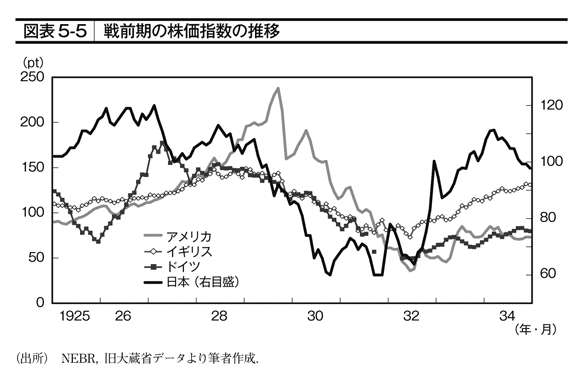

| 恐慌脱出―危機克服は歴史に学べ | |
| 安達 誠司 | |
| 東洋経済新報社 (2009) | |
この作品は、２００９年５月東洋経済新報社より刊行された書籍に基づいて制作しています。
電子書籍化に際しては、仕様上の都合により適宜編集を加えています。
また、本書のコピー、スキャン、デジタル化等の無断複製は、著作権法上での例外である私的利用を除き禁じられています。本書を代行業者等の第三者に依頼してコピー、スキャンやデジタル化することは、たとえ個人や家庭内での利用であっても一切認められておりません。
恐慌脱出
恐慌脱出──目次
２００７年半ばに始まったアメリカを震源地とする金融危機は、当初は金融業界、しかも投資銀行（証券会社）に限定された、局所的な危機だと思われていた。
２００８年に入ってから、金融危機はいっそうの広がりを見せた。それでも、アメリカの実体経済は何とかリセッション（景気後退）入りを回避していた。
しかし、２００８年９月15日にアメリカ大手投資銀行リーマン・ブラザーズ証券が経営破綻し、それをきっかけに株価の暴落が始まると、金融危機は格段に深刻さを増した。それだけではなく、実体経済も「底が抜けた」ように悪化し始めた。各種経済指標もこれまで経験したことのないスピードで悪化し、これは現在も続いている。
■単なる経済危機にとどまらない
これまで世界経済は、幾度となく金融危機を経験してきた。だが金融危機がこれほどまで実体経済に悪影響を及ぼすような事態を、われわれはほとんど経験したことがない。
そのため、今回の危機は単なる経済危機にとどまらず、これまで人々が築いてきた資本主義システムに対する信頼性をも揺るがしかねない、思想的・哲学的な危機にまで深刻化していると言ってよい。
戦前、戦後を通じて、世界の資本主義は、同様な金融危機を何度か経験してきた。その都度、資本主義はこの危機を乗り越え、より頑強なシステムになってきた。ところが今回は、これまで発展してきた資本主義、中でもとくに世界経済をリードしてきたアングロ・サクソン（アメリカ、イギリス）型の資本主義の問題点が浮き彫りになったと言う論者もいる。危機は終息に向かうどころか、ますます悪化の度を増している。
■誰もが悲観論者に
このように、当初はサブプライム・ローン問題という金融業界に限定された問題が、知らず知らずのうちにみるみる拡大し、ついには世界経済を破滅に陥れかねない大津波になるというエピソードは、そう頻繁に起こるものではない。
人々はこのような経済の悪化に際して、過去の経験との比較から、そのマグニチュード、および社会やみずからの生活に与える影響を推し量ろうとする。今回の危機は、われわれの多くが記憶している戦後の景気後退とは比べようもない、深刻な経済危機であるとの認識が、人々の間に広がっている。そして、この経済危機に匹敵するのは、１９３０年代の世界大恐慌しかないという新たな悲観論が台頭しつつある。
このような危機が到来すると、庶民の間にパニック的な悲観論が広がることは、しばしばある。たいてい、こうした極端な悲観論は、杞憂に終わることが多かった。しかし現在、「１９３０年代の世界大恐慌並みの経済危機が到来する」という見方をとる悲観論者の中には、大恐慌研究の大家であるバリー・アイケングリーン米カルフォルニア大学教授や、２００８年10月にノーベル経済学賞を受賞したポール・クルーグマン米プリンストン大学教授など、超一流の経済学者たちが含まれている。
さらには、長年アメリカの金融政策の舵取りを行い、「マエストロ」と呼ばれてきたアラン・グリーンスパン前ＦＲＢ（連邦準備制度理事会）議長も、悲観論者の一人である。このように、経済の専門家がそろって悲観論を吐露しているのである。
■政策当局の矢継ぎ早の対応も間に合わなかった
一方、このような危機に対して、Ｇ７各国の政策当局（政府・中央銀行）も決して手をこまぬいて傍観していたわけではない。彼らは、過去の経験を踏まえて、矢継ぎ早に危機を食い止めるべく、さまざまな経済政策を打ち出している。
また新興国も含めた主要国・地域の経済閣僚が一堂に会して危機回避策を話し合う国際会議も、すでに何回も開催されている。今回ほど短期間のうちに頻繁に国際会議が開催されることも珍しい。さらにヨーロッパのいくつかの国は、早くも、不良債権処理の最終段階で実施するはずの金融機関に対する公的資金注入や、銀行の国有化にまで踏み込んでいる。
戦後何度か、資産価格の暴落をきっかけとした金融危機が発生した。ほとんどのケースで、政府による公的資金注入が問題解決の決め手となったというのが、世間の共通認識であるようだ。「教科書的」に見れば、このような政策当局の迅速な対応によって、今回の金融危機も間もなく終息するはずであった（実は筆者も２００８年半ばまでそう考えていた）。しかし、このような「正しい」政策対応にもかかわらず、危機は地域的な広がりを見せ、ますます悪化の一途をたどっている。
やはり今回の経済危機は、資本主義システムそのものの問題点が噴出した資本主義の限界を示すものなのだろうか。それとも、危機脱出のためには、金融機関の救済だけでは不十分で、他の経済政策を発動する必要性があるのだろうか。
■過去の恐慌との多くの類似点
本書は、金融危機が経済危機にまで深化していったメカニズム、そしてそれを克服するために何が必要なのか、さらには、危機克服後にはどのような経済社会が待ち受けているのかを考察したものである。とくに本書の特色は、この世界経済危機を、１９３０年代の世界大恐慌など戦前の経済危機との比較から考察した点にあると考える。
今回の危機は、局所的な金融システムの機能不全が世界経済全体を巻き込み、深刻な経済危機を誘発してしまうという、「恐慌型不況」だと考えられる。これは、戦前にはよく見られたものだった。
エコノミストを含め、世の中の人々は過去の経験の延長上で、この危機をとらえようとする。そのため当初、この危機は金融機関、しかも欧米の金融機関に限定された危機だととらえられた。それが実体経済へ波及すると考えている人は、ほとんどいなかった（万年「世界経済の崩壊」を予言している超悲観者を除けば）。
実は、当初は筆者も、そういう見方の一人であった。これは、過去、世界経済は幾度か金融危機に見舞われたが、それが世界的な経済危機に発展することはなかったためである。
たとえば、ノーベル経済学賞受賞者を擁したアメリカのヘッジファンドＬＴＣＭの経営危機も、アメリカの金融当局の迅速な対応により、大きな影響もなく乗り切った。今回の金融危機も同様に、迅速な対応がとられ、実体経済への影響は軽微で済むと多くの人は考えていた。しかし現実には、危機は想像をはるかに超えて深刻化し続けている。
金融危機が実体経済の危機へ波及していくパターンの不況は、戦前の「恐慌型不況」で見られるものであった。そこで筆者は、過去の恐慌のケースを調べてみたが、その結果、驚くほど今回の経済危機との類似点が発見できた。
もちろん、当時はまだ資本主義は発展の初期段階に位置しており、単純な比較は禁物であろう。だが戦前の恐慌を振り返ることは、今回の経済危機に対して、われわれがどう対処すべきかを考えるに適したケーススタディを学ぶことだと考える。本書では、戦前の「恐慌型不況」を紹介することで、世界的な経済危機への対処の仕方を考えていきたい。
■実体経済も加速度的に悪化
本書の内容は、以下の通りである。
第１章は、今回の金融危機についての概観である。
今回の経済危機の大きな特徴は、当初はサブプライム・ローン問題というきわめて限定的な金融商品のデフォルト（債務不履行）が、みるみるうちに世界の金融システムの機能麻痺へ波及し、これによって家計や企業の資金調達が困難に陥り、その結果、実体経済が加速度的に悪化したという点である。
これまで世界経済は、何度も金融危機を経験したが、金融危機が実体経済へ波及する直前に、何とか克服してきた。基本的には、局所的な金融危機と世界全体を巻き込む実体経済の悪化とは分断されてきた、すなわち、金融危機が景気悪化に波及するという事態は未然に防がれてきた。
しかし今回は、両者が見事につながり、世界的に深刻な景気悪化がもたらされる戦後最悪の世界同時不況が到来しつつある。この直接的な理由はリーマン・ブラザーズ証券の経営破綻だが、この章ではリーマン・ブラザーズ証券破綻をきっかけとした金融システムの機能停止までの経緯を概観した。
■歴史に学ぶ
第２章は、今回の金融危機に類似した事例として、「１９０７年恐慌」を取り上げた。
金融危機が深刻な景気悪化（恐慌）にまで深化した事例としては、１９３０年代の世界大恐慌が取り上げられることが多いが、世界大恐慌以前にも、発生と深化のプロセスにおいて今回の危機と酷似した経済危機が存在した。それが１９０７年恐慌である。
いまから１００年以上も前、アメリカさえもまだエマージング・マーケット（新興経済圏）の１つであった資本主義の黎明期に、国際金融システムはすでに現在とほとんど遜色のない形にでき上がっていた。この国際金融システムの機能不全が、世界恐慌をもたらしたという点は、今回の危機と同じである。
しかも、ある地域で発生した突発的な外的ショックによって、ある一国の金融システムの機能が麻痺し、あっという間に国際金融システム全体の機能不全にまで発展し、あっという間に実体経済面でも世界恐慌が発生した点も、今回と似ている。
今回の「リーマン・ショック」で、金融業界（とくに投資銀行業界）に対する批判が高まり、救済不要説も世間に流布した。しかし、金融システムの持つ複雑性ゆえのもろさを軽視すべきではない。政策当局は、道義的な問題（違法行為ぎりぎりの取引や高額報酬）を重視して、問題金融機関を安易に破綻させるという、世論の支持を得やすい方策をとるのではなく、金融システムの機能保全に全力を傾けるべきであろう。
第３章は、世界大恐慌との比較である。ほんの数カ月前であれば、今回の経済危機を世界大恐慌と比較するのはナンセンスと一笑に付されていたに違いない（いまだに世界大恐慌とはまったく異なると力説している政策当局者もいる）。しかし、この数カ月の間に起こった加速度的な景気悪化によって、「１００年に１度の経済危機」という形容は、誇張ではなくなりつつある。世界経済が戦後最悪の景気悪化に陥るのは確実と見られている。これを世界大恐慌と比較することは、あながち無駄ではないだろう。
またこの章では、金融危機を発端とした経済危機という類似性を指摘するとともに、現在の経済状況が世界大恐慌と比較してどの段階に位置しているかを考察した。
筆者は、現在の世界経済は、ようやく大恐慌の入り口に立ったところだと考える。現在の世界経済は、通常の景気循環で見ると、ようやくリセッションという段階を越えて、恐慌に足を踏み入れたばかりである。有効な経済政策が打ち出されなければ、これから世界経済は、大恐慌並みのさらなる景気の加速度的な悪化に見舞われる可能性が高い。
■危機克服には何が必要か
第４章では、今回の経済危機を克服するために必要な政策は何かを、前述の２つの恐慌の事例をもとに考察した。大恐慌克服のための政策の処方箋は、アメリカではすでに一定の結論を得ている。不思議なことに、それは日本ではあまり紹介されていない。日本における恐慌研究では、いまだに「世界大恐慌は謎である」とされているようだ。
この処方箋の導出に多大な貢献をしたのが、現ＦＲＢ議長であるベン・バーナンキであり、オバマ政権での経済政策の立案責任者となったクリスティーナ・ローマーＣＥＡ委員長である。日本のマスメディアではほとんど指摘されていないが、この人事は、２００９年以降の世界経済動向を考える上で、きわめて重要なインプリケーションを持つと思われる。
このアメリカの経済政策当局者の人事は、世界経済の動向に一筋の希望の光を与えてくれるが、最近の新しい経済学（ニューケインジアン）に基づいたオバマ政権の経済政策の分析では、アメリカの経済活性化計画に不安材料が出てきている点も紹介する。
第５章は、日本経済についての考察である。２０００年代半ばまで、日本の金融機関は不良債権の処理に注力していたために、サブプライム・ローン関連の証券化商品への投資を、欧米の金融機関ほど積極的に行ってなかったと言われている。そのため当初、金融危機が日本経済に与えるマイナスのインパクトは軽微という見方も広がった。海外投資家の中には、日本を「セーフティ・ヘイブン（投資先として比較的安全な場所）」として見直す動きも見られた。
しかし現実はそうではなかった。世界の景気悪化の影響をもろに受けて、実体経済悪化の速度はむしろ、現在の欧米諸国はおろか、世界大恐慌期のアメリカよりも早い。たとえば２００９年２月時点で、日本の鉱工業生産指数はそのピーク（08年７月）から約43％低下している。これは世界大恐慌期のアメリカの鉱工業生産指数の低下を上回る下落ペースである（図表序－１）。ちなみに、現在のアメリカの鉱工業生産指数は、２００９年２月時点で、ピークから約12％程度の低下にとどまっている。
このように、証券化商品バブル（および新興国バブル）や金融危機とは無縁と考えられていた日本経済が、最も大きい負のインパクトを受けなければならないのは、なぜなのか。これを考察したのが第５章である。
実はこれも、世界大恐慌との比較がおおいに生きるテーマである。現在の日本とまったく同じシチュエーションが、世界大恐慌直前に日本で見られた。そして、当時の日本も世界大恐慌のマイナス・インパクトを強く受け、深刻なデフレを経験した。それらの原因は何だったのかということが、この章のテーマとなる。
■これからの世界経済
第６章は、今回の経済危機が一段落した後の新たな世界経済の枠組みについて考察したものである。
今回の危機がアメリカのサブプライム・ローン問題をきっかけに発生したことを受けて、また、アメリカが矢継ぎ早に「非伝統的」な経済政策を打ち出していることを受けて、日本の経済論壇では、「アメリカ型資本主義の没落論」がまことしやかに流れている。
「アメリカ没落論」の流れを見ると、この見方にシンパシーを感じているのは、１９６０年代に学生運動を経験した「団塊の世代」を中心とした階層のようだ。「団塊の世代」に属する評論家が、アメリカの経済危機について嬉々としてコメントする姿を見ていると、今回の金融危機、およびこれに続く世界経済危機に際して、学生時代に心酔していたマルクス経済学のルサンチマンが爆発した印象を持たざるをえない。
実は、１９３０年代の日本でも同様の現象が起きていた。世界大恐慌を資本主義の矛盾とばかりにマルクス主義に傾倒する経済学者や評論家がこぞって、資本主義批判の書を出版していた。
彼らの話を聞き、学生時代のノスタルジイに浸ることは、「知的エンターテイメント」という側面からは効用を見出せなくもないが、学生運動の洗礼を受けていない筆者は、この見方にはまったく賛同できない。
筆者が大恐慌についての考察等から導き出した答えは、今回の経済危機では、アメリカが先に回復する可能性が高い、というものである。また、この危機で体制崩壊のリスクを抱えているのはむしろ、ヨーロッパ諸国ではないかと懸念している。
新興国についても、これまでのように、「ＢＲＩＣｓ（ブラジル、ロシア、インド、中国）」から「ＶＩＳＴＡ（ヴェトナム、インドネシア、南アフリカ、タイ、アルゼンチン）」など、次の高成長国を探すようなブームは当分来ないだろう。その理由は、２００３年から08年前半まで続いた長期的な世界経済の高成長、および新興国ブームの恩恵を最も受けた地域はヨーロッパであり、今回の金融危機およびその後の経済危機は、この２００３年以降にでき上がった世界経済システムの限界を露呈したものと考えられるからである。
たしかにアメリカ経済は苦境に陥るかもしれないが、現段階で提示されている政策メニューを確実にこなしていけば、回復の芽は見えてくる。アメリカ経済崩壊論からドル暴落説が主張されることも多いが、この局面でのドル為替レートの下落は、経済崩壊の結果ではなく、むしろ危機克服のための政策が適切に選択され、その効果が出てきた証拠であると考える。また過去、アメリカは自国経済復活の切り札としてドル安を意図的に選択してきた側面もある。ニクソン・ショックしかり、プラザ合意しかりである。
つまり、アメリカ以外の国々、および日本にとって最も憂慮すべきは、アメリカが自国経済の建て直しのみを考え、近隣窮乏化政策をとることであって、アメリカ経済の崩壊ではない。
また新興国の行方についても、世界大恐慌は、きわめて興味深い示唆を与えてくれる。それについても第６章で言及する。
■２つのリスク要因
第７章は、世界経済の今後のリスク要因について考察した。
本書では、第６章までは、恐慌型不況に際してのアメリカの経済政策の適切性を根拠に、日本経済を除いては比較的楽観的な立場から世界経済の状況を考察している。しかし、読者の中には、そんなにアメリカの経済政策を信頼して良いのかと考える方もいるだろう。そこで、この章ではこれまで触れてこなかったリスク要因について考察している。
筆者は、２００９年以降の世界経済には２つのリスク要因があると考えている。第１は、新興国経済の崩壊（今回のケースでは、アジアや中南米というよりむしろヨーロッパ諸国である）が、先進国の金融システムのさらなる機能不全にフィードバックするリスクである。第２は、恐慌型不況を克服した後の、経済政策の「正常化」プロセスである。
第１のリスクについて、世界大恐慌を金融システムの側面から振り返ってみると、商品市況の暴落による新興国経済の崩壊が、債権国であった欧米の金融システムを直撃し、第２の金融危機をもたらしたことが、景気の加速度的な悪化に拍車をかけた側面がある。
前述のように、現時点の景気の加速度的な悪化は、まだ世界大恐慌と比較すると軽微である。その大きな理由の１つとして、右で述べたような新興国から先進国へのフィードバックが発生していないことが指摘できる。今後もしこれが発生すれば、景気はさらに加速度的に悪化する懸念が出てくる。
第２は、いわゆる「出口政策」である。今後、仮に第１のリスクが実現しない中、アメリカ経済が順調に回復し始めた場合、正常化政策としての金利引き上げやＦＲＢのバランス・シート縮小のタイミングが問題となることが想像できる。この「出口政策」のタイミングは非常に難しい。
実は、１９３７年の世界大恐慌からの回復局面でアメリカは一度、大失敗を犯している。「１９３０年代の世界大恐慌は結局、戦争によって解決した」という見方があるが、これは、１９３７年の出口政策の失敗による再デフレによるところが大きいと思われる。この教訓に何を学ぶのか。これは今後の世界経済を考える上での、重要な論点であろう。
また最後には、「統制経済」について触れている。今回の危機に際し、世界的に金融規制の強化の必要性が叫ばれているが、筆者の個人的な見解では、金融規制にはあまりは効果がないと考えている。というのも、投資銀行のビジネスモデル自体が、いかに規制の網を潜り抜けて高い収益を上げるかという発想で成り立っているからである。
となれば、政策当局が本気で、「金輪際、危機を起こさない」と考えるのであれば、とるべき政策は、「規制」ではなく、むしろ「統制」であろう。歴史の教訓ということで、戦時経済直前までの経済統制についても若干触れた。ただ、これが必ずしも世界経済に永遠の平和や高成長をもたらすとは限らない点には注意しておく必要がある。
実は、本書は当初『石油バブル崩壊』として企画された。本書の企画をいただいた当時、原油価格はＷＴＩ（West Texas Intermediate）先物ベースで１バレル＝１００ドルを突破しようとしていた。商品市場の専門家と称するアナリストの中には、２００８年12月末には、原油価格が１バレル＝２５０ドル程度まで上昇すると予想する者も現れた。
当時の大方のコンセンサスは、①中国をはじめとする新興国の高成長は「世界経済の構造変化」そのものであること、②石油会社は長年、原油採掘の設備投資を怠ってきたため供給能力にも限界がある、③よって原油の需給関係は逼迫したままであり、原油価格の高騰は止まらない、というものであった。
しかし筆者は、この原油価格の高騰は「商品バブル」に相違ないと考えていたので、この企画に賛同し、２００８年８月初めに原稿を書き上げた。その後の原油価格の動向は言うまでもない。２００８年末の原油価格は１バレル＝50ドル近辺である。原油価格がピークをつけた８月から４カ月程度の間に実に７割弱程度下落したことになる。筆者の考えは的中したことになる。
しかし問題はその調整速度であった。原油価格のあまりの急落は、筆者の予想をはるかに超えたものであった。原油価格の暴落局面に、石油バブル崩壊について嬉々と自説を述べている本を世に問うたところで何の意味もない。件の本は幻と消えた。
そのかわりに浮上してきたのが、今回の経済危機についての企画である。筆者は、激動を続ける金融市場に身を置きながら、日々リサーチ活動を生業としている人間なので、今回の危機の厳しさを、身をもって体験している（フロントに立っている人と比較すれば甘いかもしれない）。しかし筆者は、「石油バブル」と異なり、金融危機については比較的楽観的な立場にいた。その理由は、過去の教訓を適切に学んだアメリカの政策当局の適切な経済政策運営によって、深刻な危機は回避できると考えていたためである。しかし現在、この考えは否定されつつある。
本書は、これまでの筆者の楽観論に対する「反省文」の意味も込めたものである。本書は、リアルタイムで進行中の世界経済危機についての考察であると同時に、これまで筆者が手がけてきたデフレに関する論考の再検討でもある。本書の最大の特徴は、今回の経済危機を過去の経済危機の文脈で捉えなおし、その問題点を浮き彫りにした点にあると考える。
本書が、読者のみなさんの金融危機と経済危機についての頭の整理に役立てば、幸いである。
今回の世界経済危機は、「サブプライム・ローン」という、それまで日本ではほとんど知られていなかった住宅ローン関連の金融商品のデフォルト（債務不履行）が、他の金融商品の価格下落へと次々と波及し、「１００年に１度」と言われる危機に発展した点に、大きな特徴がある。
完全失業率や鉱工業生産指数など、最近のアメリカの経済指標の急激な悪化を見ると、危機はすでに、金融資本市場内の限定的なパニックから、経済全体に広がったと言える。アメリカ流に言えば、まさに「ウォール・ストリート」の問題から「メイン・ストリート」の問題へ発展しているのである。
このように、サブプライム・ローンという一般にはあまりなじみのない領域で発生した危機が広範囲に「伝染」し、世界中の経済を巻き込む大問題にまで増幅したのはなぜなのか。この章では、サブプライム・ローン問題という限定的な問題が、金融危機へと発展した過程を振り返ることにしたい。
すでに述べたように、今回の金融危機は、信用力の低い低所得者向け住宅ローン（いわゆる「サブプライム・ローン」）の債務不履行の発生から始まっている。だがサブプライム・ローン問題は、事の発端にすぎなかった。住宅ローンのデフォルトは、すでにより優良な借り手を対象としたＡｌｔ－Ａ、プライム・ローンへと波及し、「サブプライム・ローン」は問題の本質ではなくなっている。
■金利引き下げが住宅価格の下落をもたらした
このような住宅ローンの債務不履行の連鎖を、マクロ経済的な観点から考えると、２００４年６月以降、断続的に実施された金融引き締め政策が直接的な影響を及ぼした可能性がきわめて高い。
ＦＲＢ（連邦準備制度理事会）は、ＩＴバブル崩壊とその後の「９・11同時多発テロ」によるアメリカ経済のデフレ懸念に対応し、２００１年から金利引き下げを実施してきた。２００３年６月には、アメリカの政策金利であるＦＦレートの目標値は、１％まで引き下げられた（図表１－１）。
２００４年６月、アメリカのデフレ懸念はほぼ完全に払拭され、誰もが経済は正常な状態に戻ったと考え始めたのを受けて、ＦＲＢは、金融政策を引き締め政策へ転換した（この過程については第６章で詳述している）。その理由は、このまま低金利を続ければ、アメリカ経済にインフレ・リスクをもたらしかねないと考えたためであった。
ＦＦレートの目標値は、２００４年６月の１％から06年６月の５・25％まで、段階的に引き上げられた。このＦＲＢによる政策金利引き上げは、約１年半程度のタイムラグをおいて住宅価格に影響を及ぼし始めた（図表１－２）。アメリカの代表的な住宅価格指数であるケース・シラー指数を見ると、住宅価格がピークアウトしたのが２００５年11月、対前年同月比でマイナスになったのが、07年１月であった。
ケース・シラー指数が対前年同月比マイナスということは、住宅という実物資産を１年間保有すると、資産価値が目減りしてキャピタルロスを被ることを意味している。
アメリカの家計は、住宅を一種の金融資産と見なす傾向が強い。彼らにとっての住宅購入は、「居住」という本来の目的だけでなく、将来、住宅保有による値上がり益によって、より高額の物件の購入や消費拡大を実現するための投資という側面も強い。そのため、せっかく住宅を購入しても、将来の転売で利益を出せない状況は、アメリカ国民の住宅購入意欲にきわめて大きなマイナスの影響を与える。まして、将来の転売で実損が出るのであれば、なおさらである。
ちなみにアメリカでは２００７年から、住宅保有によってキャピタルロスを被るという状況が発生したが、これは、１９９１年以来のことである（図表１－３）。
■住宅価格が上がり続ければ問題はなかった
ところで、今回の金融危機の諸悪の根源とされるサブプライム・ローンだが、リチャード・ビトナー［２００８］等によれば、その商品設計や販売の手口などに悪質かつ詐欺的な部分があったことは間違いない。とはいえ、サブプライム・ローンの商品性すべてが問題だったわけではない。住宅価格の上昇が続くという前提条件の下では、貸し手、借り手ともに大きな利益を得る商品設計であったことも事実である。
一口にサブプライム・ローンと言ってもさまざまな商品があるが、一般的には、最初の数年間は借り手の負担を最小限にするように、金利負担は低金利で固定（元本払いなし）され、事前に決められた期限を過ぎると金利が急上昇するというものが多かった。アメリカでは、個人に対しても「クレジット・スコア」という信用格付けが普及しており、２年間、住宅ローンの返済に延滞がなければ、そのクレジット・スコアが上昇する。つまり、借り手としての評価が上がる。そうすると、サブプライム・ローンではなく、より有利な条件での借り入れ、すなわちプライム・ローンでの借り入れが可能になることが多かった。
住宅価格が上昇し続けるという前提の下でサブプライム・ローンを借りた場合には、最初の２年間さえ金利をきちんと返済していれば、２年後の借入金利が急騰する時期に入っても、住宅を売却するか、もしくは住宅価格の上昇によって担保価値が高まった既存の物件を担保に、今度は金利条件が有利なプライム・ローンに借り換えることが可能になり、債務不履行になることはないと考えられていた。そのため、住宅ローン残高全体に占めるシェアでは、２０００年にはわずか２・８％にすぎなかったサブプライム・ローンは、07年には13・６％にまで膨れ上がった。
しかし、いったん住宅価格が下落に転じてしまうと話は別である。担保価値は下がり、また売却しても損失の分は負債として残ってしまうため、有利な借り換えができなくなる。それどころか、場合によってはデフォルトとなってしまう。さらには、金利が上昇してしまえば、最初の利払い負担の段階でデフォルトしてしまうケースも出てくる。
■まず自動車不況から始まった
また、こうしたサブプライム・ローンの仕組みは、主にメキシコなど新興国からの移民に対して適用された点にも注目する必要がある。
実は、サブプライム・ローンの借り手は、自動車工場が立地する地域で多く見られた。つまりサブプライム・ローンの借り手の典型例は、自動車工場などでパートタイマーとして働きながら、住宅ローンを返済する移民であった。景気の悪化によって真っ先に失職するのは彼らであり、彼らは収入の道を断たれると、たちまち返済に行き詰まってしまう。
今回の金融危機では、危機に先んじて、アメリカではまず自動車不況が発生した。そのため、２００７年の前半というかなり早い段階で、アメリカの大手自動車メーカーであるビッグスリーの工場が多く立地する州で、サブプライム・ローンの破綻が多く発生していたのである。
そのときからすでに、アメリカの自動車業界では、原油価格の高騰によって燃費の悪いアメリカ製の乗用車から、燃費の良い日本や韓国製の乗用車に買い換えるという動きが強まっていた。全米の自動車販売台数はゆるやかに増加していたものの、アメリカ製乗用車の販売台数は減少していた。アメリカの自動車業界の「構造的な」地盤沈下がすでに進行中であった。
その時点では、サブプライム・ローンのデフォルトはあくまで地域限定的であり、アメリカ全体では些細な問題にすぎなかった。しかし、ＦＲＢの政策金利の引き上げが進むにつれて、次第に状況は変わっていった。政策金利の上昇は住宅ローン金利の上昇へと波及し、これがサブプライム・ローン全体のデフォルト率の上昇へつながっていった。
当時、アメリカでの住宅バブルの膨張は、誰の目にも明らかであった。たとえば、住宅価格が割安か割高かをはかるために有益だとされていた「Price-to-Rent 比率」（家賃に対する住宅価格の比率で、住宅の収益率を意味する指数）を見ると、２０００年のＩＴバブル期の株価収益率を上回るほど加速度的に上昇していた（図表１－４）。
住宅価格の上昇はやがて、家賃などの上昇を通じて一般物価（消費者物価）などに波及していく。政策当局にとっては、住宅価格高騰は見過ごすわけにはいかない。そう考えると、政策金利引き上げ政策が失敗だったというのは、正しい考え方ではない。また当時のほとんどのエコノミストは、ＦＲＢによる政策金利の引き上げペースを「Measured Pace（慎重なペース）」と考えており、金融政策に対する批判は皆無であった。
ところで、サブプライム・ローン問題をきっかけに発生した今回の金融危機を時系列でたどると、次のような５段階に整理できる（図表１－５）。
第１段階はサブプライム・ローンのデフォルト増加によるサブプライム・ローン専門住宅金融業者の経営破綻、およびサブプライム・ローンに対して積極的投資を行ってきた運用機関の経営危機・破綻であった。この段階で危機に直面したのは、主として、欧米の大手金融機関からスピンアウト（分社化）したヘッジファンドであった。
大手金融機関の中には、社員を会社から独立、ヘッジファンドを立ち上げさせ、会計上、自社の連結対象から切り離した上で、積極的にリスクをとるような運用をさせていたところもあった。そのヘッジファンドのトレーディング・システム構築、取引の発注、および資産管理などの実務を代行することによって（プライム・ブローケージ業務）、手数料収入を稼ぎ、ヘッジファンドの運用収益の一部を吸収するという手法が、頻繁に用いられてきた。
この段階でのヘッジファンドの経営破綻は、リスク管理を怠り、過度の投資リスクに賭けた「無軌道な投機の報い」と考えられていた。大手金融機関の収益に対するインパクトも、それほど大きくなかった。
■格付けの引き下げで状況は一変
第２段階は、「モノライン」と呼ばれる信用保証会社の「格付け引き下げ」をきっかけとした金融市場の混乱であった。この段階から、金融市場ではサブプライム・ローン問題の影響が懸念されるようになった。明らかに状況が変わったのは、アメリカの大手格付け会社がサブプライム関連商品の投資格付けを引き下げ始めて以降だった。
サブプライム・ローンというデフォルト・リスクがきわめて高い住宅ローン債権が証券化される場合、他のリスクの低いローン債権と混ぜ合わせ、まったく別の金融商品を作ることが圧倒的に多かった。そうすることにより、表面的には「ローリスク・ハイリターン」の金融商品を組成するのである。
サブプライム・ローンを組み込んだ証券化商品と言っても、その中身が１００％サブプライム・ローンであることはなく、他の優良な住宅ローンと混ぜ合わされて１つの証券化商品が作られることが多かった。一般的には、１つの証券化商品に占めるサブプライム・ローンの割合は５％程度であった。そのため、たとえサブプライム・ローンの部分がデフォルトによって紙くず同然になったとしても、証券化商品全体の損失は限定的（この例で言えば最大でも５％分）という理由で、格付け会社は、これらの証券化商品に対して高い格付けを付けた。
世界的な低金利局面の中、世界中の金融機関は、高利回りの運用対象として好んで証券化商品に投資した。その大きな理由は、格付けが高いという点にあった。
金融機関（とくに銀行）には、自己資本比率規制が課せられており、自己資本比率をある一定水準以上に維持することが義務づけられていた。自己資本比率は、「自己資本運用資産」で計算される。運用資産には運用リスクに応じて掛け目が定められ、リスクの高い資産ほど高い掛け目が適用される。つまり、同じ金額の投資をした場合でも、よりリスクの高い金融商品に投資した場合には、リスクの低い金融商品に投資した場合よりも、自己資本比率が低下するようになっていた。
たとえば、先進国の国債はデフォルトの可能性がほとんどないため、掛け目はゼロ％であり、自己資本比率算出の際、分母の資産に反映されない。一方、リスクが高い金融商品を購入すれば、掛け目がその分高くなるので、その分、分母の資産が増えることになる。
そして、この場合の投資リスクを判断する尺度となるのが、格付けであった。つまり金融機関が、投資対象として、格付け会社によって高い格付けを獲得した金融商品を選択した場合には、低格付けの金融商品と比較して、自己資本比率の計算上有利となった。そのため、金融商品に対して格付け会社が付与する格付けが、投資対象の選別に大きな意味を持っていた。
ところで、２００７年夏までは、サブプライム・ローン関連商品を組み入れた証券化商品の多くは、前述の理由から、高い格付けを有していた。しかも、住宅ローン関連の証券化商品は、他の金融商品と比較してリターンが高いという特徴があり、ローリスク・ハイリターンの金融商品として選好されていた。
しかし、経済環境の変化によって、サブプライム・ローンのデフォルトが増えてくると、格付け会社はサブプライム・ローン関連の証券化商品の格付けを引き下げ始めた。格付けが下がると、自己資本比率算出上、分母の総資産の額が増えるため、自己資本比率が自動的に下がってしまう。格付けが下がった証券化商品をそのままにしておくと、自己資本比率が低下してしまうので、金融機関は証券化商品をわれ先にと売却しようとする。
これまで高格付けゆえに積極的に購入されていた金融商品が、ある時点で急に格下げされてしまうと、金融機関にとってはその瞬間から自己資本比率さえも変わってしまう。これは金融機関全体の経営戦略にも影響を与えるので、格付けが下がった金融商品は、なるべく早いうちに売却しようとする。こうして、証券化商品の値段が大きく低下してしまった。
■ＧＳＥの経営危機
第３段階は、ＧＳＥ（政府系住宅金融会社）の経営危機に端を発した、住宅関連金融商品全般の価格急落である。
サブプライム・ローン問題は２つのルートで、他の優良な住宅ローンに波及し、金融危機を深化させた。第１のルートは、前述の金利上昇である。金利上昇は、サブプライム・ローンから始まり、住宅ブーム崩壊の進行に伴ってＡｌｔ－Ａ、プライム・ローンなど、優良な借り手のデフォルトに波及していった。これは住宅ローン全体のデフォルト率上昇につながる。
第２のルートは、格付け会社の格下げによって、投資家の間で、「次はどの商品が格下げになるのか？」という「弱い者探し」が始まったことである。住宅市場での価格上昇率の鈍化によって、当然、投資家は、格下げの動きはサブプライム・ローンだけにとどまらないはずだと考えるようになる。そうすると、まだ高格付けが維持されているうちに売却しておこうと考える投資家が増加する。これによって、政府保証がついているはずの政府系住宅金融会社が組成した住宅ローン関連の証券化商品の、格付け引き下げリスクが高まった。それらの証券化商品に売りが殺到し、価格が急落した。
また、このような危機が進行する中、政府系住宅金融会社であるファニーメイ、フレディマックの経営危機説が台頭した。問題とされたのは、低い自己資本比率であった。
両社が組成する住宅ローン関連の証券化商品には、政府保証がついている。ファニーメイやフレディマック自身の自己資本比率の高低は、これらの証券化商品のリスクとは無関係のはずであった。しかし、いったん火がついたパニックは、投資家の冷静な判断を不可能にさせた。これが住宅ローン関連の証券化商品の価格暴落に、拍車をかけた。
■リーマン・ブラザーズ破綻の意味
第４段階は、大手金融機関の経営危機、および経営破綻、それによる短期金融市場の機能麻痺である。
前述したファニーメイ、フレディマックの経営危機によって、従来は信用リスクが低いと考えられてきた証券化商品（プライム・ローンなど）の価格も急落した。これに伴って、これらの証券化商品からさらに派生したＣＤＳ（クレジット・デフォルト・スワップ）などを多く取り扱っていた大手の投資銀行が経営危機に陥った。
これらの取引の特徴は、「相対」でリスクの交換をしていたという点である。たとえばＣＤＳでは、ある住宅ローン債権の証券化商品を保有している投資家が、その商品のデフォルト・リスク（もしくは事前に契約されたある価格以下までの価格暴落リスク）を回避したい場合、そのリスクを肩代わりしてくれる投資家（といっても投資銀行のケースが多い）が現れれば、その投資家に毎月一定の手数料（リスク肩代わり料）を支払うかわりに、万が一、その金融商品がデフォルトした場合には、その投資家が損失を肩代わりするという契約であり、一種の保険契約であった。
問題は、これらの新しい金融商品には株式市場のような１つの取引所に需給を集約させて価格調整をする「市場」がなく、「相対」で契約が交わされていたという点である。相対契約は、契約の相手方が存在して初めて有効である。つまり、もし、ある住宅ローン関連の証券化商品がデフォルトした場合、あらかじめＣＤＳ取引の契約を交わして毎月保証料を支払っていたとしても、その証券化商品のデフォルトと同時に相手方が経営破綻してしまうと、リスクの肩代わりをしてもらえなくなってしまう。リーマン・ブラザーズ経営破綻の意味は、そこにある。
経済評論家や大学教授の中には、アメリカの金融システムを「市場原理主義」と呼ぶ向きもある。しかし実際の金融取引では、「証券取引所」のような「市場」で一極的に取引の管理が行われている金融商品はきわめて限定的である。実際の金融取引は、会社同士の「相対取引」で成立しているものが圧倒的に多い。
このような相対形式の金融取引で、相手方が経営破綻などによって契約不履行になるリスクを「カウンターパーティリスク」と言う。リーマン・ブラザーズの経営破綻は、まさに金融業界全体に深刻な「カウンターパーティリスク」をもたらした点に大きな意味があった。
その中で、最も代表的な「相対取引」の場が、日々の資金融通の場である短期金融市場である。たとえば、銀行は日々預金の支払いや受け入れを行っているが、そのおカネのやり取りによって、一時的に資金不足や資金余剰になることがある。資金不足になった場合、現時点で運用している国債などを売却して充当することも考えられるが、日々の資金繰りの変動でいちいち、保有資産の売買を行っていては、業務上、非効率きわまりない。そこで、このような資金繰りの調整を、短期金融市場という場で行っている。
しかし、短期金融「市場」とは名ばかりで、実際は、金融機関同士のホットラインを使って個別（相対）で資金のやり取りの調整をつけるケースが多い。そのため、取引の相手方が破綻して資金の回収が不可能になる「カウンターパーティリスク」が発生すると、貸し手は、たとえ短期的な資金の融通であったとしても、損失回避のために取引をストップしてしまう。
この場合、経営は健全だったとしても、たまたま、その日の資金繰りがつかない金融機関が日常業務の遂行すら困難になるような資金繰りの悪化が発生してしまうケースも出てくる。
リーマン・ブラザーズの経営破綻は、リーマン・ブラザーズが参加していた多種多様な「相対取引」の場で、これまでほとんど意識されてこなかった「カウンターパーティリスク」を金融機関に意識させた。
実は金融業界では、リーマン・ブラザーズの経営悪化は、以前から噂として囁かれていた。しかし、何と言っても全米第４位の大手投資銀行である。まさか経営破綻によってある日突然、消滅するとは誰も思っていなかった。これをきっかけに、「次はどこが経営破綻するのか」という新たな「弱い者探し」が始まった。
また、ほぼ同じタイミングで、全米第３位のメリルリンチも経営危機が表面化、バンク・オブ・アメリカに吸収合併されることが発表された。これによって、全米第３位と第４位の投資銀行の経営破綻が現実のものになったため、これまでは経営破綻とはまったく無縁だった上位２社、つまりゴールドマン・サックスとモルガン・スタンレーにも経営破綻リスクが台頭した。さらには、シティバンクやワコビアといった大手商業銀行にも同様の経営破綻リスクが金融市場で意識されるようになった。その結果、「相対取引」がメインの金融市場は事実上、機能不全に陥ってしまった。
■実体経済への波及
第５段階は、住宅関連以外のクレジット関連金融商品への、金融危機の波及である。
リーマン・ブラザーズの経営破綻をきっかけに各種金融取引がストップしてしまったため、金融機関自体も通常の業務の遂行が不可能になった。これによって、家計や企業の金融活動も事実上ストップしてしまった。
たとえば家計では、カードローンを使って買い物をすることもままならなくなり、消費が急減した。また、自動車の購入も自動車ローンの使用が困難になったことから急激に減少した。このように金融市場の機能不全は、経済活動全般に波及し、これが雇用環境の悪化へとつながっている。
従来は、失業者の中には、将来を見据えて、大学院（ＭＢＡ）のコースなどに入学するケースも少なくなかったが、現状では学資ローンも事実上停止状態になっている。住宅ローン以外のクレジット市場の事実上の機能停止は、消費（自動車ローン、消費者ローン、学資ローン）だけでなく、中小企業の資金繰りの悪化（商工業用ローン）をももたらし、実体経済への波及が深刻化した。このように、金融危機が実体経済へ波及し始めたのは、２００８年10月以降のことである。
今回の金融危機では、証券化商品や金融工学が諸悪の根源としてやり玉に上がっている。その理由は、これらのスキームは、投資家による過剰なリスクテイキングを促進する悪い仕組みだということのようである。
しかし考えてみれば、今回の危機が世界大恐慌に匹敵すると認識されたのは、安全性・流動性に問題がないとされていたＧＳＥ債や通常の株式の価格急落によるところが大きかった。
ファニーメイやフレディマックといった半官半民の住宅金融機関は、優良な住宅ローン債権のみを証券化していた。それらの機関が発行していたのが、ファニーメイ債やフレディマック債といったＧＳＥ債である。
ほぼそれと同時期に、新興国の通貨やコモディティ（商品市況）も暴落した。これらの金融商品の投資に関しても、金融工学が使われていることは否定しないが、単に将来の価格変動を予想して投資する投資手法という程度のものだった。問題は、証券化商品の混乱が、なぜ他の金融商品の投資に波及していったのかという金融システムの構造（Micro Structure）であって、証券化商品の普及や金融工学の問題ではないと思われる。
第２章では、過度なリスクテイキングの巻き戻しによって金融危機が発生した最初の事例として「１９０７年恐慌」の事例を取り上げるが、当時は証券化商品もなかったし、クォンツ・モデルなどの金融ハイテクもなかった。にもかかわらず、２００８年と似たような危機が発生したのである。
この節では、ある一部の金融市場で発生したショックが他の金融市場、もしくは金融市場全体へ波及していくメカニズムを考察し、それを今回の金融危機に当てはめてみたい。
一部の金融商品のマーケットに発生したショックがその市場内に限定されず、次々と他の市場に伝染し、金融資本市場全体の機能不全をもたらしてしまうメカニズムは、１９９７年・98年のアジア通貨危機、およびロシア通貨危機以降、研究が進んでいる。現在、今回の金融危機に対するこれらの研究結果の応用も試みられている。これらの研究結果が示す今回の金融危機の連鎖のメカニズムは、以下の通りである。
■危機連鎖のメカニズム
① 金融機関によるリスク管理の精緻化（ＶａＲ、ロスカット・ルールなど）や自己資本比率規制がトリガーとなって、ある金融商品に一定レベルを超える価格下落が生じた場合、自動的にその金融商品を投げ売る仕組みが金融機関で構築されていることが、金融商品の価格急落を招く。今回のケースでは、住宅ローン関連の証券化商品の投げ売りがこれに相当する。
② 金融商品の「投げ売り」によって損失が生じ、自己資本が毀損した金融機関は、リスクテイクする能力を失い、他のハイリスク・ハイリターン型の金融商品を購入することができなくなる。その理由の１つとしては、ＢＩＳ（国際決済銀行）による自己資本比率規制の存在も無視できない。
自己資本比率規制では、金融機関の自己資本比率が、ＢＩＳがあらかじめ定めた水準を下回った場合、国際的な業務ができなくなるとされている。金融機関にとって、国際金融業務ができなくなるということは経営上、大きな制約になる。そのため金融機関にとっては、この自己資本比率を何としても保つことが経営の最優先課題となる。このような状態が広範囲の金融機関で見られるようになると、前述のようなハイリスク・ハイリターン型の金融商品の売買が成立しなくなる。
今回のケースでは、サブプライム・ローン関連商品からクレジット物の金融商品一般（消費者ローン、自動車ローン、学資ローンなどの証券化商品）も取引が完全に止まった。また、企業の発行する社債などにもこれが波及した。
③ 今回の金融危機における証券化商品の問題点を強いて挙げるとすれば、流動性の低い伝統的なローン債権が、証券化によって市場で流通するようになったが、その価格体系がきわめてあいまいであった点であろう。
Markit という企業が、各金融機関に対するヒアリングによって、ローン債権の証券化商品の価格を集計し、インデックス（基準となる価格）を作成しているが、カバレッジが圧倒的に小さく、インデックスとしては不十分とならざるをえない。そのため、「真の価格」がわからず、底値を拾う投資家、値動き等を見てそろそろ株価が下げ止まるという判断を行い、いち早く売りから買いに転じる投資家が現れない。
こうして、取引がいつまでも行われないまま、ある取引業者がたまたま直近につけた価格を基準に損失の認識が行われ、その価格が断続的に下がっていくという状況が続いた。そのため、いつまで経っても損失が確定せず、ずるずると損失が累積し、これが①→②の連鎖をさらに加速させた。
④ この連鎖に、格付け会社の突然の格下げラッシュが拍車をかけた。
証券化商品は、リスクの特性が異なるさまざまな資産が組み合わされていることが大きな特徴である。多くの資産の組み合わせによって、単独の資産だけの投資では実現不可能であったリスクとリターンの組み合わせが可能になり、証券投資のフロンティアを飛躍的に拡大させた。しかし、そのかわり、商品構造がきわめて複雑化し、投資家がその商品の特性を完全に理解することが不可能になった。
そのため、投資家にかわって、格付け会社が証券化商品の商品特性を緻密に調査し、証券化商品に対する投資基準を公開して、投資リスクを削減しようとした。同様のスキームとしては、「モノライン」がある。「モノライン」は会社みずからが商品の保証を行い、デフォルト・リスクを肩代わりするものである。
証券化商品の投資家は、格付け会社によって発表された格付け、もしくはモノライン会社による信用保証の有無を投資判断の基準として証券化投資を積極化していった。つまり、証券化商品投資では、格付け会社の格付けの安定性（短期間で頻繁に変更されないこと）が大前提であった。
しかし、サブプライム・ローン問題が発生し、サブプライム・ローン自体の商品性に対する世間の批判が出始めた段階で、格付け会社はサブプライム・ローンを含む証券化商品の格付けを次々と引き下げ始めた。これによって、証券化投資が本来有している投資リスクに対する投資家の判断基準が大きく揺らぎ、証券化商品離れに拍車がかかった。
また、格付け会社は、「モノライン」に対しても格付けを行っていたが、モノライン会社の格付けもほぼ同時に下がり始めた。このモノライン会社の格下げは、モノライン会社の経営悪化懸念、デフォルト・リスクの上昇を通じて、サブプライム・ローン関連商品以外の金融商品（たとえば、地方債など）の価格暴落を誘発した。
⑤ 地方債は地方金融機関によって多く保有されていたが、地方金融機関の日々の資金繰りの調節は、地方債を担保にすることで行われていた（レポファンディング）。
前述のモノラインの多くが、地方債の信用保証を行っていたが、モノラインの格下げに伴って地方債価格自体の信用が疑問視され、これをきっかけに地方債の相場が暴落した。
地方債の暴落によって、地方金融機関は、日々の資金繰りのために差し出す担保としての地方債の価値が低下し、十分な資金繰りができなくなった。そこで地方金融機関は、資金確保のために、運用資産の売却とキャッシュ化を進めた。これが各種金融商品の価格暴落に拍車をかけた。
⑥ リーマン・ブラザーズの経営破綻をきっかけに深刻化した短期金融市場の機能不全は、ＳＩＶ（ストラクチャード・インベストメント・ビークル）やＡＢＣＰコンデュイットという仕組みを通じて大手金融機関に対する信用不安へと発展した。
これらは、大手金融機関の収益やバランス・シートの算出上、加算する必要のない、会計上オフバランス化が可能な仕組みであった。そのため、金融機関は、これらの仕組みを用いることによって、会計上のリスクをとらずにサブプライム・ローン関連を含む期待リターンの高い金融商品に投資できた。
また、ＳＩＶやＡＢＣＰコンデュイットは、みずからの資金調達を資産（この場合、みずからが保有する住宅関連の証券化商品）を担保に短期金融市場で行っていた。各種証券化商品の価格暴落に加え、短期金融市場の機能停止によって、これらのオフバランスの投資スキームが崩壊した。
ＡＢＣＰは、アメリカでは決済用預金として用いられることも多いＭＭＦの主要運用手段の一つであった。ＡＢＣＰ市場の崩壊によって、従来は損失リスクがほとんどゼロだと考えられてきた短期金融商品のキャピタルロスの可能性が発生し、個人や企業によるＭＭＦの解約が殺到した。これが大手投資銀行の経営危機に波及した。
⑦ 大手金融機関はこれらのオフバランス債権を救済、もしくは償却するために、資産劣化した形でオンバランスすることを余儀なくされた。これが大手金融機関の資金繰りのミスマッチを誘発し、短期金融市場での信用悪化に波及した。
⑧ ①～⑦のプロセスを通じて、保有証券化商品の価格下落に対する膨大なキャピタルロスを抱え、資本不足に陥った大手金融機関に経営危機の噂が立った。大手金融機関は日々の資金繰りを短期金融市場で行っていたが、経営危機の噂によって、短期金融市場での資金調達が事実上、困難になった。彼らは、財務省やＦＲＢ等の政策当局に救済を依頼したが、リーマン・ブラザーズは結局、経営破綻した。
リーマン・ブラザーズは全米第４位の大手投資銀行であり、ＣＤＯ、ＣＤＳといったデリバティブ市場の取引で大きなシェアを有していた。デリバティブ取引の多くが相対取引であることから、リーマン・ブラザーズの相手側であった金融機関は、デリバティブ取引での巨額損失のリスクに直面することになった。
大手投資銀行であるリーマン・ブラザーズの取引相手は多岐にわたっていたため、デリバティブ市場や短期金融市場では、互いの信用リスクに対して疑心暗鬼となり、両市場の取引が事実上の停止状態となった。
⑨ 金融機関による日々の資金繰りの融通がストップすれば、当然、金融機関としての日常業務もストップする。そのため、金融市場の機能麻痺は、各種ローン市場の機能ストップを通じて実体経済に深刻な影響を与えることになった。
■金融危機の本質とは
以上をまとめよう。実体経済の悪化が世界的に加速度的に進む現状から今回の金融危機を振り返ってみると、その本質は、金融システムの参加者である金融機関間で網の目のように張り巡らされた複雑な相対取引の「場」が、リーマン・ブラザーズの経営破綻による「カウンターパーティリスク」の発生によって崩壊した点にあると考える。
論者によっては、今回の金融危機の本質は、当初からその商品性に問題があったとされるサブプライム・ローンや、投資銀行のレバレッジ取引の代表格とされるＣＤＳの膨張である、と指摘されることも多いが、これは問題の本質ではない。なぜなら、そのような新しい金融取引はいつの世でも生み出され、関連の法整備は必ず、後追いになるためである。つまり、事前に法整備をきちんと行うことは不可能であることは自明であり、それを問題視するのは、何の問題の解決にもならないからである。
ところで、もし、リーマン・ショックによってカウンターパーティリスクが発生しなかったならば、今回の金融危機はそれ以前の金融危機同様、政府による公的資金の投入等の措置で短期間で終息していたし、実体経済の加速度的な悪化をもたらすことはなかったのではないかというのが、筆者の率直な考えである。その意味では、逆説的だが少なくともリーマン・ショックまでのアメリカ金融当局の対応は、過去の金融危機の教訓を生かした適切なものであったと考えている。
さらに、このような金融問題になると、「今、世界の金融機関の証券化商品等の損失がいくらで、現段階の償却がいくらなので、残る要償却額はこの程度である......」という尺度で危機の深刻さを測ることが多いが、それはあまり意味がない。後述するように、金融機関の損失の額はそのときのマクロ経済状況によって変化していくものだからである。
また、そもそも今回の金融危機では、金融機関の巨額な含み損を抱えている金融商品の多くが、相対取引によって契約が成立しているものであるため、共通の「適正な価格」自体が存在しない。そのような状況の中で、「潜在的な損失がいくらで、そのうち、いくら償却して......」という議論はニュースの「ねた」にはなっても、それ以上の意味はないのではなかろうか。
世界経済は、これまで何度も重大な金融危機に見舞われてきた。とくに１９８７年のブラックマンデー以降は、約５年に１回の割合で、世界のどこかで深刻な金融危機が発生してきた。
たとえば、１９９０年代前半には、北欧諸国（フィンランド、スウェーデン、デンマークなど）、日本、そしてアメリカで過剰な不動産投資の反動による金融危機が発生した。
また、１９９７年・98年のアジア通貨危機とそれに続くロシア経済危機によって、新興国が発行した債券への積極的な投資で莫大な収益を上げていたヘッジファンドＬＴＣＭが経営破綻した。これによって、ＬＴＣＭに積極的に融資、ないしは出資していたアメリカの大手金融機関の経営危機が囁かれたこともあった。ＬＴＣＭは、ノーベル経済学賞受賞の経済学者を２名も抱え、最新の金融工学に基づく高度なリスク管理を行っていると言われていたにもかかわらず、破綻したのである。
■これまではあくまで「地域限定」だった
ただ、これらの金融危機はいずれも地域限定的であり、今回の金融危機とは様相を異にしていた。
１９９０年代前半に日米欧で発生した金融危機は、いずれも不動産投機が直接的な原因であったという点では各国共通していた。ほぼ同時期に危機が発生したが、それぞれの地域限定の危機であった。ある一国で発生した金融危機、および不動産不況が、他国に次々と波及したわけではなかった。
しかし、今回の金融危機では、「証券化」や「デリバティブ」という仕組みを通じて、アメリカで発生した金融危機が世界中に波及していった。その点は、これまでの金融危機とは大きく様相が異なっている。
また世界経済は、１９７０年代、80年代にも大手金融機関の経営危機（たとえばアメリカ大手商業銀行によるラテンアメリカ諸国への投資のデフォルトなど）を経験したが、いずれも世界の金融システム全体に広がることはなかった。これらの金融危機は、単発の危機にとどまり、あくまでも影響は限定的であった。
今回の金融危機は、家計や企業の資金調達が困難になり、家計や企業の経済行動が行き詰まり、その結果、実体経済の急速な悪化がもたらされるという、これまでの戦後経済が経験しなかったタイプの経済危機に深化しつつある。筆者はこれを、「恐慌型の不況」と考えている。
繰り返しになるが、このような形態の景気悪化は、戦後ではほとんど未経験であったと言って良い。唯一の例外は、１９８０年代後半から90年代前半にかけてのアメリカのＳ＆Ｌ危機だが、これとてあくまでアメリカ限定の金融危機であった。
また、Ｓ＆Ｌ危機が今回と大きく異なるのは、「Ｓ＆Ｌ危機」という呼称に表れているように、地方の貯蓄金融機関（Saving & Loan Association）の経営破綻であり、投資銀行業務はほとんど無傷だった点である。
Ｓ＆Ｌ危機は、政府が買い取った不良債権を「証券化」というスキームを通じて安値で売却することによって不動産市場に再びおカネが流入することが可能になって、ようやく解決に向かった。そのスキームにおいて主導的な立場をとったのが、投資銀行にほかならなかった。
しかし今回は、不動産を中心とした「証券化ビジネス」自体が存亡の危機を迎えている。
現状では、政府による不良債権買い取りによって不動産市場が早期に底打ち、回復する可能性は低いと考えられている。すなわち、今回の金融危機に際し、Ｓ＆Ｌ危機の教訓から得られた処方箋を用いることはできないのである。
■「１００年に１度」は誇張ではない
そこで、今回の経済危機との比較が可能な過去の経済危機はいつだったかと考えると、遠く１９３０年代の世界大恐慌まで遡らざるをえないということになる。その意味では、日本の政治家がキャッチフレーズとして用いる「１００年に１度の経済危機」という形容もあながち誇張ではない。
ところで、今回の経済危機を、世界大恐慌と比較することに何の問題もないことは間違いないが（これについては第３章で言及する）、当初は限定的な金融システムの動揺が、やがて世界の金融システムへ伝播していくという面では、実は世界大恐慌以上に、類似性の高い事例が経済史に存在することを忘れるべきではない。これが「１９０７年恐慌」と言われる恐慌である。
この恐慌は、１９３０年代の世界大恐慌以前は、世界最大の経済危機と言われていた。ここでは「世界大恐慌前史」という意味で、世界的な金融恐慌の代表例である「１９０７年恐慌」の今回の危機との類似性を見たい。
「１９０７年恐慌」は、アメリカで発生した金融危機が世界的な経済危機へ深化した初の事例と言って良い。
発端は、１９０６年４月に発生したサンフランシスコの大地震であった。この地震でサンフランシスコ市内に張り巡らされていたガスのパイプラインが破裂、漏れ出たガスに引火して大火事が発生し、サンフランシスコ市街地の約半分が焼失するという大惨事に見舞われた。
それまでのアメリカは、ヨーロッパにかわるフロンティアとして高成長を享受していた。中でも中西部は、経済成長の象徴的な存在であった。とくにサンフランシスコでは、鉄道をはじめとするインフラ整備のための投資が集中的に行われ、巨額の投資資金がヨーロッパの先進国から集まり、株式市場も活況を呈していた。
ところが、この大地震によって、これまで築き上げてきた成長神話がもろくも崩れた。これが、その後に始まる本格的な金融危機の始まりであった。
■損害保険会社の経営危機
大地震が世界的な金融危機へ波及していく過程は、いくつかのルートが存在した。
第１のルートは、膨大な損害保険の支払いによる損害保険会社の経営危機の表面化であった。
当時、イギリスを中心としたヨーロッパの損害保険会社は、サンフランシスコの投資案件に対し、多額の保険契約を結んでいた。サンフランシスコは高成長局面にあり、数多くの投資プロジェクトが稼働していた。この投資プロジェクトに対する保険契約も当然、巨額に上っていた。大地震以前には、損害保険会社は多額の保険料収入を得て、高収益を上げていた。
しかし、いざ大地震が発生すると、地震の損害に対する莫大な支払い義務が生じ、これが損害保険会社の経営を圧迫した。
損害保険会社は保険金支払いのため、これまで運用に回していた保有資産をこぞって売却し始めた。損害保険会社の運用資産のうち、とくに流動性が高く、最も換金が容易な株式に投げ売りが殺到した。これにより世界中の株式市場が暴落した。当時のニューヨーク証券取引所の株価指数は、１９０６年１月のピークから最大で43・５％下落した。
■イングランド銀行の急激な引き締め
第２のルートは、震災復興需要によるロンドン金融市場の逼迫であった。
大地震とその後の大火事によって、サンフランシスコの都市インフラは壊滅的打撃を受けた。同時に、これは復興のための資金需要の急激な増加をもたらした。
この復興需要のための資金調達は、当時、国際金融市場の中心であったロンドンに頼らざるをえなかった。アメリカの金融機関は、金融手形の振り出しや証券担保融資等を通じてロンドンから莫大な資金を調達した。ロンドンの金融市場では、資金需要の増加から、長短金利が高騰した。
当時は金本位制だったこともあり、アメリカでの強い資金需要は、おカネの裏づけとなる金（Gold）が、イギリスの金融の中心地ロンドンから、アメリカの金融の中心地ニューヨークへ流出することを意味した。
ロンドンからニューヨークへの大量の金の移動を嫌ったイングランド銀行は、それを阻止すべく、政策金利を大幅に引き上げた。これによって、すべての融資案件の借入金利が急騰した。ロンドンで資金調達を行ってきた世界中の国や企業は、資金調達が困難になった。
このように、イギリスからの金流出阻止のために実施されたイングランド銀行による急激な金融引き締め政策が、世界的な株式市場の暴落の引き金となった。
■カウンターパーティリスクの急拡大
第３のルートは、投機の失敗であった。アメリカの高成長は、開発需要の拡大や建設需要の拡大から資源価格の高騰をもたらした。そして、その代表例だったのが銅であった。しかも、当時のアメリカでの銅取引では、老舗財閥のロックフェラーと新興の銅精錬会社であるユナイテッド・コッパーという株式会社がしのぎを削っていた。
ユナイテッド・コッパー社を所有していたフリッツ・ハインツェ（Fritz Augustus Heinze）氏は、みずからも、先物市場を通じた銅の投機的取引を積極的に行っていた。そして、アメリカの高成長神話を背景に高騰を続ける銅価格は、ユナイテッド・コッパー社を全米有数の企業に仕立て上げた。
ところが、サンフランシスコの大地震をきっかけに、アメリカの高成長神話に陰りが見え始めると、状況は一変した。銅相場は一転、暴落局面に入ったのである。ユナイテッド・コッパー社のハインツェ氏も、銅取引で大損失を出した。
問題はそれだけにとどまらない。当時ハインツェ氏は、銅精錬会社の経営だけではなく、金融業界を含めて多角的に事業を展開し、Gross & Kleeberg 社という証券会社も経営していた。しかも彼は、自分自身の銅取引を、みずから経営するこの証券会社を通じて行っていた。銅市況の暴落によって Gross & Kleeberg 社は経営破綻に陥ったが、事態を深刻にしたのは、この証券会社が、銅を含めたさまざまな金融取引のための運転資金を、日々、他の金融機関との相対取引で調達していた点であった。そのため、Gross & Kleeberg 社の破綻は、たちまち同社の金融取引相手（資金の貸し手）の経営破綻リスクへと波及した。
もちろん、この相手方の金融機関は Gross & Kleeberg 社だけを取引相手としているわけではなく、多くの金融機関と複雑な相対取引を行っていた。そのため、さらに、これらの金融機関と資金のやり取りを行っていた他の金融機関の経営破綻リスクの増大へと、次々に拡大していった。
このようなプロセスが続くことによって、金融機関間で日々の運転資金のやり取りを行う短期金融市場で、取引相手の経営の健全性に疑問が投げかけられるという疑心暗鬼の連鎖、いわゆる「カウンターパーティリスク」が急拡大し、日々の運転資金の調達をやり取りする短期金融市場のシステムが機能不全に陥ったのである。
■取り付け騒ぎも起こった
危機はさらに広がっていく。前述のハインツェ氏は、「マーカンタイル・ナショナル銀行」という銀行も同時に経営していた。彼はみずからが保有するユナイテッド・コッパー社の株式を担保に、みずから経営するマーカンタイル・ナショナル銀行から大量の融資を受けていた。そのため、ハインツェ氏の巨額損失の話がメディア報道等で明らかになると、マーカンタイル・ナショナル銀行に対する経営不安説が世の中に流布し、預金の取り付け騒ぎが起こった。
さらには、マーカンタイル・ナショナル銀行の役員の中には、他の銀行の大株主も多数存在していた。彼らも、保有している銀行の株式を担保に巨額融資を受け、その資金で株式投機を積極的に行っていた。そのため、彼らが株式を所有する他の複数の銀行にも取り付け騒ぎが発生した。
■信託会社の破綻
破綻の連鎖はこれだけにとどまらない。次に破綻の危機に瀕したのは、「信託会社」という形態の金融機関であった。当時のアメリカにおける「信託会社」とは通常の銀行とは異なり、運用等に対する規制が緩い新設の業態であった。
当時、信託会社は、預金の形態で一般消費者から資金を集め、株式を中心としたリスク資産での運用を積極的に行い、高収益を上げていた。というのも、通常の銀行に対しては株式の直接保有を禁じるなど厳しい運用規制があったからである。そのため、銀行は信託会社に積極的に融資することによって、間接的に株式投資をせざるをえなかった。
また信託会社は、準備金を積み立てる必要がなかった。準備金とは、予想外に多くの預金者が預金を解約する場合に備えて、銀行内に積み立てておく予備の現金のことである。銀行内に一定の準備金を積み立てる必要があるということは、その分、運用に回るおカネが少なくなる。準備金を積み立てる必要のない信託会社は、銀行に比べてより多くの資金を運用に回せたのである。
当時、銀行は株式市場への投資を禁じられていたが、信託会社は、株式市場が急騰局面にある場合は、より多くの資金を直接投入し、高い収益を上げることができた。そのため信託会社は、銀行に比べて高い利回りを獲得できる新たな運用手段として高い人気を集め、信託会社に多くの資金が流入した。Bruner and Carr［２００７］によれば、１９０６年の段階で、ニューヨーク市にある信託会社だけで、全米の銀行を上回る資産規模となっていた。
Gross & Kleeberg 社の経営破綻に始まる銀行の取り付け騒ぎは、これらの銀行の融資先であった信託会社からの突然の融資引き上げ（貸し剝がし）の懸念を生じさせた。また、同時に株価の暴落による運用損失が急増したことも経営を圧迫する原因となった。
これらの出来事をきっかけに信託会社の経営危機が発生し、預金者による信託会社全般に対する取り付け騒ぎが発生した。また、預金引き出しに対応するために、信託会社はこぞって保有株式を売却した。こうして株式の投げ売りが加速度的に拡大し、ついには、アメリカ国内の証券取引所の取引停止に追い込まれる事態となった。
ここに至って、アメリカ国内の金融システムは完全に崩壊した。資金調達に窮した一般事業会社の倒産も、相次いで発生する事態に陥った。
このように１９０７年恐慌は、「信託会社」という新しい、しかも当時はまだ法律の整備が十分ではなく、規制の枠外にあった新しい金融の仕組みを用いた投機的取引の拡大が、金融システムを根底から揺るがす危機をもたらしたものであった。
さらなる問題は、このアメリカ発の金融危機が、当時の国際金融センターであったロンドンを経由して世界中に波及したことである。
■金利引き上げ競争
出発点は、世界的な金融引き締めの連鎖であった。前述のようにイングランド銀行の金融引き締めによって、金本位制の下で一国の通貨量の裏づけとなる金がロンドンへ流れる動きが加速したが、今度はヨーロッパ各国が、ロンドンへの金の流出を防止するために、こぞって金利を上げ始めた。この「金利引き上げ競争」の動きは、とくに、フランス、ドイツ、イタリア、ベルギーなどで本格化した。
しかし、ロンドンへの金の流れは容易に止まらず、ドイツでは、金融逼迫による一般事業会社の倒産が続出した。とくに、「モラー商会」という蠟製造業会社の破綻は、融資先であったドイツ銀行、ベルギーメルキッシュ銀行、ライン・ベストファレン銀行、スイス銀行などの大手銀行にとって大きな貸し倒れ、すなわち巨額損失となった。このモラー商会破綻の原因は本業の不振ではなく、株式市場での巨額の投機的取引による損失と、金利急騰による利払い不能であった。
そして、これがきっかけで金融機関の一般事業会社や家計に対する融資が事実上ストップし、ほとんどの産業で生産の縮小と失業者の増大が加速した。ヨーロッパではとくに中小企業の倒産が多発した。
■危機は新興国にも波及した
このように、イングランド銀行の金融引き締めの影響はヨーロッパ全体の金融引き締めへと波及した。今度は、これがヨーロッパからの短期的資金のつなぎ融資に依存していたブラジルやアルゼンチンなどの中南米の新興国からの資金流出をもたらし、中南米の新興国に対する資金の流れを完全に断ち切ることになった。資金流入が完全に止まった新興国は、急激な景気悪化に見舞われた。
そして、今度はこれが、新興国向けの輸出を積極化させていた欧米の貿易業者の経営破綻を急増させた。その過程では、金融機関による、これらの貿易業者に対する輸出入金融の意図的な引き締めもあった。
さて、いまから約１００年前、まだ資本主義、とくに現在と比較してマーケット・メカニズムが未発達と考えられていた１９００年代初期にも、今回とほぼ同様のメカニズムによる金融危機が発生した点は興味深い。ここまで見てきたように、この金融危機が深刻化した１つの理由は、「カウンターパーティリスク」の高まりによる短期金融市場の機能不全にあった。また、当時は証券化やＣＤＯなどのスキームは存在しなかったが、そのかわり、信託会社という新しい業態の金融機関が、投機的取引の担い手となり、金融危機を増幅させた。
このように、グローバルに網の目のように張り巡らされた金融システムを構成する、ごく一部の金融機関の破綻が、金融システム全体を破綻させかねない危機的な状況に追い込み、その結果、実体経済面では、当時としては、「空前」の規模の恐慌をもたらしたのであった。なお、この経済危機をどのように克服したかは、第４章で詳述する。
■金融緩和による株式ブーム
この「１９０７年恐慌」の大波は、日本にも押し寄せた。
当時、日本は日露戦争勝利直後であった（日本海海戦が１９０５年５月27～28日、ポーツマス条約批准が同年10月14日）。日露戦争での事実上の勝利によって、日本は国際社会で欧米先進国と対等の立場を得た。その時初めて、世界の投資家は、日本という国を、高いリターンを上げることができる魅力的な投資先として認識した。
日本経済のさらなる発展のためには、海外からより多くの投資資金を呼び込む必要があった。そして日露戦争の勝利によって、初めてそれが可能となった。日露戦争後の１９０６年には、大量の社債が発行された。その約７割が海外投資家向けであり、多くは電力やガスといったインフラ整備のための資金調達のために発行されたものだった。
日露戦争では、期待されていたロシアからの賠償金がまったく取れなかったことから、それを当て込んでいた企業、とくに事業拡大意欲の強かった新興企業は、投資をあきらめざるをえなかった。そのため、戦後の景気回復は思わしくなかった。日本銀行は、政府の強い要請もあり、金融緩和を進めた。日本国内では資金余剰が拡大し、株式市場が急騰した。
日本銀行の金融緩和によって企業の投資意欲が回復したのは、１９０７年１月以降であったが、それ以前は、金融緩和によって供給された資金はもっぱら株式投資（むしろ株式投機と言ったほうが良いかもしれない）に回った。株価の急騰はすさまじく、当時の株式配当利回り（配当株価）は債券の利回りを大きく下回った。
■中国向け輸出の急減
このような株式ブームに冷や水を浴びせかけたのが、前述のアメリカの「１９０７年恐慌」とそれによる株価暴落であった。アメリカの「１９０７年恐慌」の一因は、当時の国際金融センターであったロンドンでの金融引き締めだったが、日本も国債だけではなく、電力・ガスを中心とした社債の調達の多くも、ロンドン市場に負うところ大であった。そのため、ロンドンの金利上昇は日本の社債の調達金利の上昇に波及し、日本国内の投資意欲を急激に冷やした。これが国内経済を急激に悪化させた。
さらに景気を悪化させたのは、中国向け輸出の急減であった。
その頃の日本の主力産業は紡績であり、その収益のほとんどが輸出であった。アメリカの恐慌にもかかわらず、１９０７年前半は、清国（中国）向け輸出の拡大によって、紡績業の業績はまずまずであった。
さらには、ロンドンでの金利引き上げによる欧米先進国向けの株式・債券投資が縮小した分が、銀市場へ流入し、銀相場が高騰したことも日本の紡績業にはプラスに働いた。
当時、日本は金本位制を採用していたが、清国は銀本位制を採用していた。よって、日本の対清国為替レートは金銀の価格差と連動していた。もちろん、銀高によって対清国為替レートは円安になり、貿易上、有利な為替レートであったことが紡績業の収益にプラスに働いた。
しかし、１９０７年後半以降、前述の銅に続き、銀相場も大暴落した。これによって、清国経済も恐慌に陥るとともに、為替レートも急激に円高に転換した。円高と、清国の恐慌入りによる需要収縮というダブルパンチを受けて、日本の主力輸出産業である紡績業の業績は急激に悪化した。とりもなおさずこれは、日本経済の深刻な恐慌入りを意味した。
■緊縮財政が事態を深刻化させた
事態をさらに深刻化させたのが、政府による財政緊縮路線の堅持であった。当時、日露戦争の戦費調達のために大量に発行した過去の国債（外債）によって、財政赤字は巨額に達していた。桂太郎内閣は、その削減を経済政策の最優先課題とした。行政改革による経費削減等も実施したが、財政支出の削減は、景気悪化に拍車をかけた。
また当時の財界（大企業の経営者が中心）にとって、景気悪化は、日露戦争での勝利で膨張した財界の整理としてむしろ好ましく、緊縮財政を積極的にサポートした。これには、新興企業の経営危機に乗じて、事業の独占を意図していたという側面もあった。
結局その後、綿糸産地や商品相場の中心地であった大阪や横浜の地方銀行の経営破綻が相次ぎ、日本経済は金融危機の様相を呈した。金融危機の影響は紡績だけではなく、その他の産業に属する企業の資金繰りを悪化させ、景気悪化をさらに深刻なものにしてしまった。
欧米、とくにアメリカでは、１９０７年恐慌からの回復は比較的早期に実現し、１９０８年には底打ちしたが、日本の回復は第一次世界大戦をきっかけとした特需を待たねばならなかった。
■今回の経済危機との類似点
以上、見てきたように、「１９０７年恐慌」と今回の危機との類似点は、金融危機が国際金融市場（当時はロンドンがその中心であった）を通じて世界に伝播した点である。しかも、その中心地であるロンドンでの金利引き上げが直接的な原因となったことも、今回の危機と同様である。
また、危機直前までの株価高騰局面では「信託会社」という新しい金融取引の仕組みが最大限に利用されて、これが資産価格のバブルをもたらした点も、「証券化商品」という新しい仕組みがバブルを発生させたことに類似している。さらに重要なことだが、たった１つの金融機関の経営破綻によって、金融機関間の複雑な金融取引のネットワークが崩壊し、これが実体経済の悪化の要因になった点も共通である。
また、当時の日本経済についても多くの類似点が見出せる。そのうち最大の類似点は、輸出主導型経済が、金融危機の国際的波及による円高によって壊滅的打撃を受け、恐慌に陥ってしまった点である。また、このような局面で、政府が財政赤字を理由に緊縮財政に固執した点も似ている。
一方、相違点は、欧米先進国での急激な景気回復であった。結局、１９０７年恐慌は約１年で終了した。大きな理由は、アメリカの短期金利（コールレート）の急激な低下であった。これには、南アフリカでの金採掘量の増加が寄与していたことが想像される。当時の『バンカーズ・マガジン』（１９０８年１月号）によると、南アフリカの鉱山株の急騰が報じられているためである。
当時のコールレート（短期金利）も１％程度にまで急落していたことを考えると、金融緩和が資金需要を喚起する水準まで一気に進んだ可能性が高い。また、ロンドンでも金の大量の流入によって、金利低下が進み、これがロンドン金融市場での資金調達の回復につながった点も指摘できる。
１９０７年恐慌では、偶然の産物と言ってよい要因（南アフリカでの金産出量の拡大）によって、マネーサプライ拡大の素地が生まれ、これが急激な金融緩和効果を持ち、早期の景気回復につながった点は今回とは異なると言える。
続いてこの章では、今回の経済危機の震源地であるアメリカ経済の現状を、１９３０年代の世界大恐慌当時との比較から考察したいと思う。
前述のように、今回の危機は、著名な経済学者や政策当局者によって、50年に１度、いや、１００年に１度の経済危機であると認識されつつある。そして、今回の危機に対してかなり強い懸念を抱いている経済学者の中には、ジョセフ・スティグリッツ、ポール・クルーグマンといったノーベル経済学賞受賞者や、バリー・アイケングリーンのような世界大恐慌を専門とする経済史家が含まれている。彼らは今回の経済危機との比較対象として世界大恐慌を取り上げ、過去の経験を生かすべきであるとの主張をしている。
ここでは、彼らの見方を参考にしつつ、現時点での世界経済の状況を、１９３０年代の世界大恐慌との比較から考察したい。
まず、最初に世界大恐慌の深化のプロセスを概観してみよう。
古くは、Ｊ・Ｋ・ガルブレイスの『大恐慌１９２９』やＦ・Ｌ・アレンの『オンリー・イエスタデイ』に描写されているように、「暗黒の木曜日」として知られる１９２９年10月24日のニューヨークでの株価大暴落に始まる世界大恐慌は、それまでの世界経済の繁栄を根底から覆し、その後、全世界を悲惨な第二次世界大戦に導いたエポックメイキングな出来事として、あまりにも有名である。世界史の教科書での記述で記憶している方も多いだろう。
しかし、マクロ経済の観点から見たその深化のメカニズムは、意外と知られていない。この１９３０年代の世界大恐慌の深化のプロセスを知ることは、今回の危機についての理解を深めることにもつながると思われる。ここで、世界大恐慌のプロセスについて概観しておくのも、時間の無駄ではないだろう。
■「最後の賭け」としての株式購入
世界大恐慌の発端は、「暗黒の木曜日」におけるニューヨーク株式市場の大暴落である。この株価大暴落は、ある日突然発生して、これがきっかけとなって世界経済が急激に大恐慌に陥ったかのように言われることが多いが、これは正確ではない。株価の大暴落は、１９２９年10月24日に何の前触れもなく発生したわけではなかった。
それまでのアメリカ経済は、第一次世界大戦後のヨーロッパ復興需要によって、未曾有の好況を享受し、イギリスから覇権国の座をほぼ奪いつつあった。ニューヨークは、ロンドンにかわって世界中の投資マネーを集め、国際金融の一大拠点に上り詰めようとしていた。
このようなアメリカ経済の繁栄は、アメリカ（ニューヨーク）の株式市場の活況へと波及していった。そして、それは徐々にマクロ経済の実態と乖離していった。１９２９年には、景気はピークを打ちつつあったにもかかわらず、逆に株価は上昇の度合いを強めていった。
人々（投資家）は、株式市場の変わらぬ活況を見て、アメリカ経済の繁栄が永遠に続くものと思い込み、より大きな利益をねらって投機的な株式取引を急激に拡大させた。またその時点で株式へ流入した資金の中には、それ以前に発生していた住宅ブームに乗り遅れた人々（その多くが住宅価格高騰で住宅購入をあきらめざるをえなかった）による「最後の賭け」という意味での株式購入も含まれていた。
Sheltzer［１９５１］によると、１９２９年末時点で株式のキャピタルゲインが申告所得に占める割合は全体で19・１％、所得階層別では最富裕層（年収１００万ドル以上）が65・７％となっていた。アメリカでは、株式市場での成功がそのまま「夢の実現」につながる構図になっていたのである。ちなみに１９２４年には株式のキャピタルゲインが申告所得に占める割合は、全体で５・９％、最富裕層で34・４％であった。
■「レバレッジ」をかけた株式投資
このような投機的な株式投資の代表例が、「ブローカーズ・ローン」と言われる一種の信用取引と、「投資信託」であった。
信用取引では、少ない金額で大きな取引を行うことが可能となる。金融の世界ではこれを、「レバレッジ」をかけるという。経済の繁栄によって株価上昇が続くという見通しが多数を占めれば、信用取引によって「レバレッジ」をかけるほうが、より多くのキャピタルゲイン（株価上昇による利益）を得ることができる。そして現に、レバレッジをかけた取引によって、実際の株価も急騰するケースが多かった。
また後者の「投資信託」は、株式を購入するための投資専門会社を新たに設立し、その企業が本来であれば株式を買うことが困難な小口の資金をプールして大口化し、株式投資を行い、その利益を配当として還元するというのが、基本的な仕組みであった。
しかし１９２９年になると、会社型投資信託自体が株式を発行し、その株式が値上がりすることで巨額の利益を得るような仕組みもでき上がっていた。さらには、会社型投資信託が、低利で社債や短期金融市場から資金を調達し、その資金でより期待リターンの高い株式に投資するという仕組みも急速に拡大していった。
このような会社型投資信託の仕組みも、信用取引同様、「レバレッジ」をかけた金融取引にほかならなかった。
■金本位制とは何か
このように、１９２９年には、株式市場以外では、（徐々にではあるが）景気後退の影響が着実に押し寄せる中、株式市場だけが活況をもたらすという異常事態が発生していた。まさに「株式の世界は現実の経済とは別である」という共同幻想が、株式市場を支えていたのである。
しかし、当時の世界経済システムでは、忘れてはならないことがあった。それは、「金本位制」という通貨制度が採用されていたことであった。「金本位制」とは、
① 世界各国の為替レートが金を基準としてあらかじめ決められた価格に固定される。たとえば、当時の基軸通貨であるポンドでは、金１オンス＝３ポンド17シリング10ペンス半と定められていた。
② 各国中央銀行・政府は、その固定為替レートを維持すべく、自国が保有している金の量に従って、マネーサプライ（国内の資金供給量）をコントロールしなければならない。
という金融制度であった。
この制度の下では、国内景気が過熱しても、国内に流通する通貨量が自国保有の金の量に制約されてしまうため、拡大するモノの需要に対しておカネの量が不足するようになる。その結果、各種ビジネスは縮小を余儀なくされ、景気は鎮静化する、という景気安定効果がビルトインされていると考えられていた。そのため当時、金本位制は、通貨制度としては最適なものだと考えられていた。
■金融引き締め後も株価上昇は続いた
ところが、このような実体経済（消費や設備投資といった通常の経済活動）とは別の要因から、世界最大の国際金融センターにのし上がったニューヨークには、世界各国から金が流入するようになっていた。これは当時、グローバル化の急速な進展から、国際間を行き来する金融取引が活発化し、その中心地がニューヨークであったことが大きな理由であった。
それはとりもなおさず、アメリカの金保有量の拡大を意味した。これによってアメリカでは、景気拡大がインフレ圧力の高まりへと転換し、景気はピークアウトしつつあった。しかし、資金は株式市場への流入を続け、株価の上昇は続いていた。
このような事態は、アメリカ以外の金本位制を採用している国にとっては、自国からの金流出と金融引き締め（それによる景気悪化）を意味するものだった。そのため、アメリカ政府には、世界経済安定化の観点からも、金の流入を抑えることが要請された。それは同時に、アメリカ政策当局にとって、株式市場を鎮静化させることを意味した。
そこでアメリカ政策当局は、１９２８年から金融引き締め政策を採用した。しかし、度重なる金融引き締めにもかかわらず、ニューヨークの株価上昇は一向に収まる気配がなかった。それどころか、ブローカーズ・ローンによる投機的取引は拡大の一途をたどっていた。
■「暗黒の木曜日」へ
そこで、次にアメリカの金融当局がとった政策は、ブローカーズ・ローンに対する直接的な規制であった。すなわち、金融機関に対し、直接ブローカーズ・ローンの融資を抑制するよう指導することによって、投機的な株式取引を鎮静化しようとしたのであった。
これによって、ニューヨークの株価上昇は鎮静化し、この政策は功を奏したかのように見えた。しかし、信用取引を拡大させていた投機家は、株価の下落によって、取引継続のための追加証拠金の拠出を迫られる事態となった。
もちろん、金融当局によって、ブローカーズ・ローンには融資規制がかけられているため、追加証拠金のための新規融資は困難をきわめた。そのため、追加証拠金を拠出できなくなった投機家による株式の投げ売りが相次いだ。
そのクライマックスが、１９２９年10月24日の「暗黒の木曜日」の株価大暴落となったのである。さらに、このような株価の大暴落は当然、投資信託に巨額な損失をもたらすこととなった。
■住宅ブームも重要な意味を持つ
前述のように、今回の金融危機の発端は、「サブプライム・ローン」に代表される住宅ブームとそれに伴う住宅金融の急拡大であったが、１９３０年代のアメリカ大恐慌も、住宅バブルの崩壊が重要な意味を持っていた。
建国以来、多くのアメリカ人（他国からの移住民を含む）にとって、「自分の住宅を持つ」ことは、アメリカでの成功の象徴、すなわち、「アメリカン・ドリームの体現」として重要な意味を持っていた。
国民がアメリカン・ドリーム実現に向けて努力することは、アメリカが高い経済成長を実現させる強い原動力である。それゆえ、住宅取得を円滑に実現するための金融手段として、すでに南北戦争後には「モーゲージ証券」の仕組みができ上がっていた。それは、「モーゲージ・カンパニー」と言われる仲介業者が、金融機関から貸付債権を買い取り、それを生命保険会社や富裕な個人に転売するという形態であった。現在の証券化の基本的メカニズムは、すでに住宅金融発足当初から見られたのだ（よって「今回の金融危機は、証券化商品を媒介としているため、従来の金融危機とは異なる根の深いものである」という見方は必ずしも適切な指摘ではないと思われる）。
■デフレ・スパイラルに陥った
さて、１９２０年代に一大ブームとなった住宅投資だが、前述の金融引き締めは例外なく、住宅投資にもマイナスの影響を及ぼした。金利上昇によるモーゲージ金利の上昇は、家計の住宅保有コストを急上昇させたためである。
しかし、問題はそれだけではなかった。１９２０年代半ば以降、株式投資ブームは家計にも広く浸透しており、しかも、低中所得者層を中心として、多くの家計が前述の「ブローカーズ・ローン」を利用し、株式投機に熱中していた。そのため、ニューヨークの株価暴落は、家計に３種類の悪影響を与えた。
第１は、追加証拠金の発生が家計を圧迫することによって、可処分所得の減少、もっと極端なケースでは住宅等の資産の投げ売りをせざるをえなくなったこと、第２は、保有株式の売却を余儀なくされるケースが多かったが、暴落後の株価での売却によって、多額のキャピタルロスを被るケースが多かったこと、第３は、「アメリカの永遠の繁栄」という希望を失い、将来の生活不安から現金や金を保蔵するケースが増え、これが消費、とくに耐久消費財の消費を抑制させたこと、である。
大恐慌までのアメリカは「Ｔ型フォード」に代表されるような耐久消費財産業の全盛期であった。住宅ブーム崩壊が与えた家計への打撃は、いわゆる「逆資産効果」を通じて、耐久消費財産業や住宅・建設産業の設備投資、雇用を大きく減少させた。そして、これが家計の所得減へと波及し、さらに、それが企業の設備投資、雇用の削減をもたらす、という深刻なデフレ・スパイラルとなって、アメリカ経済に襲いかかったのである。
ところで、大恐慌期のアメリカでは、雇用者数がそれ以前のピークから約40％減少したと言われているが、実にその３分の１が、住宅・建設関連の業種に勤めていた労働者であった。このように、株価暴落の影響は住宅バブル崩壊へ波及し、それが、消費や設備投資、雇用といった実体経済に波及していったのである。
■新興国からの資本の引き上げ
大恐慌の影響は、アメリカ国内にとどまらなかった。
当時のニューヨークは国際金融の一大拠点であったが、そのニューヨークは、ブラジルやアルゼンチンといったラテンアメリカ諸国を中心とした新興国の資金調達の場ともなっていた。ニューヨークの株価暴落によって多額の損失を被った投資家の中には、当然、大小の金融機関が含まれていた。アメリカ国内の株式投資による損失によって、それらの金融機関による新興国が発行する債券の引き受けが困難になり、新興国の資金調達が事実上、ストップした。
それだけではなく、これらの金融機関は、すでに保有していた新興国の債券を投げ売りすることによって、新興国に投資していた資本を引き上げ始めた。
■一次産品価格の急落
新興国の苦境はそれだけではない。当時、新興国の多くが、天然資源や食糧等の一次産品の輸出を主要産業としていた。もちろん、当時もこれら一次産品の価格は、日々の国際商品市場での需給を反映して決まっていた。問題は、この国際商品市場にも、ニューヨーク株式市場同様に、投機的取引を専門的に行う業者が存在し、しかもニューヨークの株式と国際商品の取引を同時に行っている業者が多数存在していたことであった。
ニューヨークでの株式取引で莫大な損失を被った投機家は、国際商品市場での取引で売り方に回るか、もしくは取引を中断せざるをえなくなった。そのため、国際商品相場はニューヨークの株価同様、大暴落した。これによって、新興国が輸出する一次産品価格も大きく低下し、新興国の輸出は急激に減少した。
このように、最大の取引相手国であるアメリカの需要急減やアメリカ金融機関の資本引き上げによる国内の資金不足の影響に加え、主力輸出商品であった一次産品の価格暴落が、新興国の景気悪化に拍車をかけた。ちなみに、当時の日本の輸出の約７割がアメリカ向けの生糸であり、これもアメリカ大恐慌の影響によって大損害を被り、そのことが昭和恐慌（世界大恐慌期に日本で発生した恐慌）の１つのきっかけとなった。また、この一次産品価格の暴落は、アメリカ国内の農業従事者にも同様の打撃を与えた。
このように、国際的な資金の流れを通じて、アメリカの株価大暴落の影響が、新興国の景気悪化へと波及し、大恐慌は世界規模にまで深化していった。
■「金融的要因」が実体経済を収縮させる
以上、１９３０年代の世界大恐慌の深化のプロセスを概観してきたが、これを「金融的要因」を軸に整理してみよう。
１９３０年代の世界大恐慌の発端は、景気過熱を防止するための金融引き締めであった。景気過熱に対して政策当局が金融引き締めで対応し、やがて景気が減速していくというメカニズムは、通常の景気循環のメカニズムそのものであり、何ら特異な点はない。しかし、通常の景気循環と大きく異なる点は、「過度」の金融引き締めが、資産価格の暴落を通じて、（家計や金融機関を含めた）投資家に膨大なキャピタルロスをもたらし、それが、景気を「減速」から「崩壊」に近い水準まで萎縮させてしまった点にある。
このように、「金融的要因」が、実体経済の収縮をさらに加速させてしまう現象を「フィナンシャル・アクセラレーター」と言う。これは現在、ＦＲＢ議長であるベン・バーナンキらが提唱した金融危機が増幅する恐慌の理論的なメカニズムである。
これをやや詳しく解説すると、以下のようになる。
資産価格の暴落は、投資家のリスクテイク能力を著しく毀損させ、将来の成長のための投資を完全に麻痺させてしまう。家計や金融機関は、将来に対するリスクを可能なかぎり低減させようとリスク回避的な行動に走り、現金や金、国債といった安全資産の保有を増やす。
こうして、将来の成長のための前向きな投資に向かって流れるはずの資金が、事実上ストップしてしまう。企業は、存続に最低限必要な生産資源だけを残し、事業規模を大幅に縮小せざるをえなくなる。その結果、設備投資が大幅に減少し、失業率も急上昇する。
■「デ・レバレッジ」の罠
ところで、さまざまな経済活動には、資金の裏づけが必要である。しかもその資金は、金融機関の仲介によって経済を血液のように循環していくが、その大元の資金はマネタリーベース（現金通貨＋民間銀行の法定準備預金）と言われ、中央銀行によって供給される。そのマネタリーベースは、金融機関を仲介し、経済メカニズムを流通する間に何倍もの規模に膨れ上がる。これがマネーの「レバレッジ（梃子）効果」である。
現金や金が家計等に「保蔵」されてしまうと（日本では「たんす預金」と言われる）、資金が経済の間を円滑に回らなくなってしまう。その結果、経済全体のおカネの量は減少してしまう。これは「デ・レバレッジ（レバレッジと逆の現象）」と言われる。
大恐慌の過程では、資産価格の暴落が起きると、金融機関がその資産構成を、現金や国債といった安全資産に変え、それがさらなる資産価格の暴落を招くケースが多い。そして、この資産価格の暴落が、投資におけるリスク回避的な行動をさらに強め、投資家は、過去に行った投資の回収や新規投資の抑制に動く。これには、資産価格の暴落が、将来における経済の成長期待を失わせ、投資に対する意欲を阻害するという効果もあるだろう。
１９３０年代のアメリカでは、このような「デ・レバレッジ」の動きが「フィナンシャル・アクセラレーター」というメカニズムを通じて景気悪化を加速させたのである。
次に、現在のアメリカの景気悪化のペースが、大恐慌とどの程度類似しているかを、実際の経済指標を比較しながら確認してみよう。
一般的に大恐慌との比較を行う場合には、対象となる経済指標の下落率などを単純に比較する場合が多い。たとえば、ＮＹダウを比較すると、大恐慌期では約90％下落したが、今回は約50％程度の下落にとどまっているから、今回は当時と比較して下落幅は小さく、大恐慌期ほど深刻な株安は発生していないといった見方である。
しかし、このような単純比較はナンセンスである。なぜなら、当然ながら、当時と現在との経済構造はまったく異なるからである。その違いが顕著にあらわれるのは、経済指標の変動性である。経済発展の初期段階では成長率の数字自体はきわめて高いが、そのかわり、その変動率も高い。一方、経済が成熟すると、成長率の数字も低くなるが、変動率は低くなり、比較的安定的に推移するようになる。
ただし、経済の構造が変わっても、金融危機をきっかけとした景気悪化はほぼ同じメカニズムで発生・深化する。そのため、両者のインパクトを比較するためには、変動率を調整する必要がある。以下、大恐慌と現時点の推移を比較する際の各種経済指標は、変動性を調整し、とくにその悪化のモメンタム（方向性とそのスピード）を観察したものである。
■大恐慌へ至る道のり
今回のような深刻な経済危機は、資産価格の急激な調整（いわゆる「バブルの崩壊」）から始まることが多い。そこで、きわめて大雑把ではあるが、資産価格下落から始まる経済危機の深化の段階を一般化し、表にまとめたのが図表３－１である。
大恐慌もそうだったが、第１段階としての資産価格の大幅な下落は、住宅価格から株価へと波及することが多い（ただし回復は株価が先である点に注意）。そして、これが「逆資産効果」を通じて個人消費に波及するのが、第２段階である。
「逆資産効果」によるキャピタルロスの拡大は、やがて金融機関の自己資本を毀損させ、やがて一部金融機関で経営危機のリスクが高まる（第３段階）。一部金融機関の経営危機によって、短期金融市場（金融機関間の短期的な資金融通の場）の機能が低下すれば、当然、金融機関の資金仲介能力が低下し、経済全体の信用創造機能が著しく低下することになる。これは、主に企業の資金調達を困難にして（クレジット・クランチ）、企業の生産活動を阻害する（第４段階）。
これがさらに深刻化すれば、中小企業を中心に企業倒産が増加し、それがさらに経済活動全般を悪化させる。また、その頃には物価が下落に転じるケースも多い。さらには金融機関の不良債権が拡大し、金融機関の信用創造機能はますます低下していく。これがいわゆる「デフレ・スパイラル」であり、この時、金融機関の経営破綻が相次ぐほど景気悪化が深刻化していれば、「恐慌」となる（第５段階）。
「恐慌」が究極まで進行し、政府によって、経済活動全般をいったんリセットしなければならないところまで追い込まれる状況が、「大恐慌」である（第６段階）。
実は、「大恐慌」と表現できる経済危機は、１９３０年代の世界大恐慌以来、１度も経験していない。戦後、アメリカ経済は何度か、深刻な経済危機に遭遇したが、いずれも「大恐慌」までには至らなかった。
それは、戦後のいずれのケースも、政策当局（政府・中央銀行）の適切な政策対応がなされたためであり、それは、政府による公的資金の注入と中央銀行による金融緩和が見事に機能したことを意味する。
■実体経済の悪化は始まったばかり
そこで、現在の景気悪化がどの段階に位置するのかを確認してみよう。比較対象とする経済指標は、株価、新車登録台数、信用乗数（マネーサプライマネタリーベースで計算）、完全失業率、および鉱工業生産指数である。
株価の動きを比較すると、現時点はちょうど１９３１年初頭に相当する（図表３－２）。
ピークまでの上昇とピークからの下落を比較すると、今回は、株価下落が比較的早いことが指摘できる。すなわち、今回の危機では、実体経済の悪化をかなり先に織り込む形でアメリカの株価の調整が進んだ可能性がある。
次に消費関連の指標の類似性を見るために、新車登録台数を比較してみる（図表３－３）。大恐慌では１９２９年半ばをピークに減少局面に転じたが、現時点の新車登録台数は、大恐慌では31年後半に相当する調整となっている。
■信用乗数の動向は
次に、「クレジット・クランチ」の状況を見る指標として、信用乗数の動きを比較する（図表３－４）。信用乗数とは、マネーサプライ（アメリカの場合Ｍ２）を、中央銀行が供給するおカネの量であるマネタリーベースで割ったものである。
通常、国内のおカネの流れを考えると、中央銀行が供給したマネタリーベースを、金融機関が日々の投融資活動を通じて市中にマネーサプライという形で流通させる。マネーサプライをマネタリーベースで割った信用乗数は、金融機関が投融資活動によって、マネタリーベースを何倍に拡大させたかを見る指標であり、金融仲介機能の活発度をはかる指標である。もし、クレジット・クランチによって信用創造機能が低下する場合、中央銀行による金融緩和（マネタリーベースの拡大）にもかかわらず、銀行貸し出しは伸びない（マネーサプライの減少）ため、信用乗数は低下する。
大恐慌期には、信用乗数は１９３１年初頭をピークに低下トレンドに転じ、31年終盤から33年半ばにかけて急低下した。一方、直近の信用乗数は、ＦＲＢによる大量の資金供給によってマネタリーベースが急増しているため、すでに急低下している。
ただし現段階では、マネタリーベースの増加の多くは、金融機関の資金繰りに備えた予備的な供給増（これは超過準備に蓄積されている）によるところが大きい。つまり、ＦＲＢの積極的な資金供給によって蓄積した超過準備には、マクロ経済的な意味はないため、大恐慌期と直近の信用乗数の単純な比較は、不適切である可能性がある。そこで図表３－４には、マネタリーベースを構成する準備預金のうち、超過準備を控除したベースを用いて信用乗数を計算し直したものも同時に掲載している。
超過準備控除後の信用乗数は、控除前ほど大きく低下していないものの、トレンドとしては緩やかに低下気味で、まさにこれから大きく低下しようとしている。これはクレジット・クランチの初期段階であり、大恐慌との比較では１９３１年前半に相当すると考えられる。
■２回の金融危機
大恐慌期には２回の金融危機が発生している。１回目は１９３０年後半から31年初めにかけて、２回目は１９３１年後半から32年初めにかけてである（33年３月の金融危機は、むしろ大恐慌からの回復の一因となったので除外する）。
最初の金融危機は１９２９年10月の「暗黒の木曜日」の株価暴落に際し、一時的な金融緩和政策を採用したＦＲＢが、危機は去ったと判断し、金利を元の水準まで引き上げようとしたことが理由であった。
２回目の金融危機では、以下のような２種類のケースの銀行破綻が見られた。
① 新興国への恐慌の波及によって商品市況が暴落、とくに穀物市況の暴落によって、シカゴ周辺の農家に対する融資を主要業務としてきた銀行が破綻したケース。
② 景気の悪化による自動車販売の急激な販売の落ち込みでデトロイトを中心する自動車産業の拠点で、貸し倒れが発生し、周辺の銀行が経営破綻したケース。
これをきっかけに、金融市場の機能が完全にストップし、これが実体経済に波及して、鉱工業生産や完全失業率といった実体経済指標の悪化が加速した。信用乗数を見ると、その急低下の局面は金融危機後の１９３１年半ばと32年半ばに起こっている。大恐慌が深刻化した大きな理由は、金融市場の機能不全であることが、当時の信用乗数の動きにも現れている。
■これから「恐慌」の段階に入る
ところで、実体経済の経済指標で注目に値するのは、完全失業率の動きである（図表３－５）。現在の完全失業率の動きも、１９３１年初めの状況によく似ている。
２００８年のノーベル経済学賞を受賞したポール・クルーグマンはアメリカが大恐慌期以来の「流動性の罠」に陥っているとの認識を示したが、彼はアメリカの完全失業率は10％を超えると予想している。今後、大恐慌期と同じ速度で完全失業率が上昇すれば、アメリカの失業率は10％以上の水準まで上昇する計算となる。図表３－５はこの見方が正しいことを示唆している。
また、鉱工業生産指数は、最近２～３カ月の間に急激に低下し、大恐慌期では１９３１年頃の水準に追いついてきた（図表３－６）。
以上を総合すると、大恐慌期と比較した場合の現在のアメリカ経済の状況は、ちょうど１９３０年終盤から31年前半にかけての、第４段階から第５段階に相当すると考えられる。
すなわち、今後も恐慌型の不況が進行すると仮定すれば、アメリカ経済は、いままさに、「普通の不況」を越えた段階であり、いわゆる「恐慌」的な経済危機の段階に入ったところであると解釈できる。
以上の点を踏まえ、１９３０年代大恐慌と今回の危機との類似点・相違点を考えてみよう。「歴史は繰り返す」と言うが、当然ながら、まったくそのままの形で再現されることはない。それゆえ、大規模な金融機関の経営破綻といった表面的な現象ではなく、その基本的なメカニズムを慎重に考察する必要がある。
■資産ブームの終息による「デ・レバレッジ」
まず両者の類似点を指摘すると、それは、資産ブーム（株式、住宅）の終息による「デ・レバレッジ」という側面である。しかも、資産価格暴落による膨大なキャピタルロスが、金融機関だけではなく、家計にも及んでいる点も、両者の共通項である。とくに「住宅価格は永遠に上昇し続ける」という「土地神話」が崩壊した点は、酷似している。
さらには、両者の共通項として興味深い点は、資産ブームの背景として、企業（とくに大企業）の「カネ余り」があったという点である。１９２０年代の大企業は、積極的な設備投資よりも、Ｍ＆Ａ等による企業統合を活発に行い、生産設備の効率化と企業利潤の内部留保を推進した。その結果、大企業を中心として、企業の金融機関に対する借入需要は大きく減少した。
これは、今回の危機でも同様であった。企業部門は、２０００年のＩＴバブル崩壊以降、積極的な設備投資を抑制しており、設備投資は減価償却の範囲内で行うというスタンスをとっていた。このような企業の投資スタンスはデフレ下での日本で顕著に見られたが、ＩＴバブル崩壊後のアメリカも例外ではなかった。
これにより、運用難に直面した金融機関は、より高い収益機会を求めて、不動産ローンや株式投資（ブローカーズ・ローンへの融資）に傾斜していった。そしてこれが、住宅・株式ブームに拍車をかけることとなった。
■きっかけはやはり金融引き締め
そして、資産価格の下落を意図した金融引き締めが、ブーム終息のきっかけとなった点も共通である。今回の危機では、２００４年６月以降、06年６月までの２年間でＦＲＢは累積で４・25％（１％から５・25％へ）政策金利を引き上げている（図表１－１、〈第１章第１節■金利引き下げが住宅価格の下落をもたらした〉参照）。当時、このＦＲＢによる金融引き締めは「Measured Pace（慎重なペース）」と呼ばれ、ＩＴバブル崩壊後のデフレ懸念から立ち直った後の「金利正常化政策」として評価された。しかし後になって振り返ってみると、残念ながら、引き締め過ぎだった可能性が高い。
この「過剰」な金融引き締めの理由は住宅価格の高騰であったが、１９３０年代大恐慌では、株価高騰が問題視されていた。最終的には、金利引き上げだけではなく、ブローカーズ・ローンの直接的な融資規制まで発動された。これらの金融引き締めが、資産価格暴落を招いた。
現在のアメリカ経済も、資産価格暴落によって金融機関の自己資本が大きく毀損し、これによって金融機関のリスク許容度が低下し、経営危機が表面化している。これが企業や家計の資金調達を困難にし、景気の加速度的な悪化をもたらしている。
第２章・第３章では、１９０７年恐慌と１９３０年代の世界大恐慌という、戦前に発生した２つのグローバルな金融危機・恐慌を見てきた。この章では、人々がどのような方法で、これらの２つの恐慌を克服したかを考える。
だがその前に、この２つのグローバルな金融危機がなぜ、実体経済をも巻き込み、「恐慌」にまで発展してしまったかを考えてみたい。
２つの金融危機の共通点は、景気後退局面での金融引き締めである。
１９０７年恐慌では、アメリカの大地震の影響による株式市場の暴落や景況観悪化の中、イングランド銀行が金融引き締めを断行し、ロンドン市場での強い資金需要を満たすどころか、シャットアウトする金融政策をとってしまったことが、危機を深化させた。
世界大恐慌では、１９２９年10月の「暗黒の木曜日」から断続的に発生していた株価下落に対し、ＦＲＢは、いったんは緊急避難的に金融緩和を実施した。その判断は正しく、その後、株価は急速に回復基調をたどった。
しかし、金融緩和によって、アメリカから金利の高い海外へ資金が流出する恐れがある、という理由から、株価が大暴落直前の水準に戻る前に、ＦＲＢは再び引き締め政策に転換した。これにより、株価は再び暴落した。
同時に、一次産品価格（商品市況）も暴落した。新興国の成長の源泉は一次産品の輸出による外貨獲得であったため、一次産品価格の暴落は、新興国経済に大きなダメージを与えた。先進国の資本は新興国から逃避し、新興国債券の投げ売りが急増した。新興国発行の債券が相次いでデフォルトし、新興国経済は事実上、破綻した。
そして、これがさらなる一次産品価格の下落を引き起こし、最終的にはアメリカの農業不況に跳ね返った。アメリカの農業不況は、これまで農家に積極的に融資を行っていたシカゴを中心とした穀倉地帯や農業地帯を基盤とする銀行の連鎖的な倒産に波及した。これが新興国債券のデフォルトとあいまって、金融危機がより深刻化した。
アメリカでは、１９３０年後半から31年初めにかけて、および、１９３１年後半から32年初めにかけて、２度の金融危機が発生した。この２度の金融危機によって、金融システムは完全に機能不全に陥り、金融機関の資金仲介機能が完全に麻痺した。繰り返しになるが、これがきっかけとなって、企業や家計の資金繰りの悪化がさらに加速し、大恐慌がより深刻化していった。
■恐慌をもたらした「金の足枷」
このように、２つの恐慌のきっかけは、
① 当時の（国際）金融センターで、景気後退局面で金融引き締めが実施されたこと。
② その結果として金融システムが機能麻痺に陥ったこと。
であると考えられる。そして、この２つの恐慌での金融引き締めの共通点は、金本位制の下では、金融引き締めが、金流出を防ぎ、国内のマネーサプライの量を安定的に維持するために必要な政策だったという点である。なぜなら、金本位制の下では、一国の通貨量はその国の金保有額とリンクしていたためである。
海外への金の流出は、国内の通貨量の減少を意味した。そのため、政策当局は金を国内にとどめておく必要に迫られていた。つまり、２つの恐慌で金融引き締めが行われた理由は、他国よりも魅力的な金利を付与することによって、他国への金の流出を防ぎたいという政策当局のスタンスにあった。金本位制という当時の国際金融システムが、機動的な景気対策としての金利引き下げを阻害したのである。
それが結局、金融危機をもたらし、安定的なマネーサプライが維持できなくなり、恐慌型の不況へ突入していったのである。大恐慌研究の第一人者であるバリー・アイケングリーンは、これを「金の足枷」と呼んでいる。
■為替レート水準を政策目標とすることのリスク
以上の点を指摘すると、必ずと言って良いほど聞かれる反論は、「現在は変動相場制であり、為替レートを一定水準に維持する必要はない。そのため資金流出リスクから金融引き締めが実施される可能性は低い。よって現代資本主義が恐慌型の不況に陥る可能性はきわめて低い」というものである。
つまり、この反論では、現在の国際金融システムは、
① 多くの国で変動相場制が採用されている。
② 一国の通貨量は金（Gold）の保有量に直接的にはリンクしておらず、国家が金を保有する意味がなくなっている。
という状況であり、戦前の２つの恐慌期のように、景気悪化局面でわざわざ誤った金融引き締め政策がとられる可能性は、きわめて低いという考え方がとられている。
だが、この考え方が成立するためには、１つの大きな前提条件が必要である。それは、各国政府が自由な為替レートの変動を許容することである。つまり、たとえ変動相場制下でも、政策当局が為替レート水準を政策目標にするのであれば、右のような考え方は成り立たない。
筆者は、世界大恐慌も金本位制下による固定為替レート制の存在自体が大恐慌をもたらしたというよりは、経済政策、とくに金融政策が、政策当局によって事前に決められた為替レート水準を維持するための道具として用いられたために、金融政策の重要な役割であるマクロ経済政策の機能が損なわれたことが大恐慌をもたらしたと考える。ここから得られる教訓は、いくら変動相場制を採用していると言っても、為替レート水準の維持に金融政策が割り当てられているならば、その国の経済には、経済政策を発動すべき時にとるべき政策が発動されず、経済悪化に陥るリスクが、依然として残っているということである。
■金融システムの機能停止が恐慌入りを決定づけた
また、現在の為替制度は変動相場制だから、金融危機が実体経済を失速させ、やがて恐慌へと深化してしまうという「古典的」な不況が到来しない、という考え方は、いささか楽観的過ぎるのではないかと思う。というのも、ケーススタディとして指摘した２つの恐慌で、恐慌入りを決定づけた大きな要因の１つが、金融システムの機能停止であったからである。
１９０７年恐慌では、銅掘削会社の経営者が同時に証券ブローカーと銀行を所有し、銅価格暴落による投機の失敗が銀行の取り付け騒ぎを引き起こして、経営破綻したことが、金融システム崩壊につながった。
１９３０年代の世界大恐慌の場合は、深刻な金融危機を２回経験したが、そのうち２回めの金融危機では、ＦＲＢによる大量の資金供給にもかかわらず、新興国の経済・財政の崩壊という新たなリスクが顕在化し、それまでとは別の要因によって金融機関の破綻が相次ぎ、金融危機の実体経済への波及を回避できなかった。それ以降、金融機関による資金仲介機能は完全にストップし、資金繰り悪化が主な理由となって、実体経済が加速度的に悪化した（フィナンシャル・アクセラレーター）。
そして、金融危機が収まったのは、１９３３年３月にルーズベルト大統領が「バンク・ホリデー」（金融機関の一斉休業）を宣言、緊急銀行法を成立させた時点である。緊急銀行法では、新設されたＲＦＣ（復興金融公庫）が、金融機関に資本増強のために優先株式を発行させ、それを直接買い取ることで、金融機関の破綻を未然に防ぐ方策がとられた。その後、金融機関の破綻は激減し、金融システムは安定化へ向かった。
前述のように、金融システムを形成する金融機関はさまざまな形態の資金運用・調達手段を有し、それぞれが複雑な取引関係でつながっている。そのため、当初は些細で影響も小さいと思われていた金融機関の経営危機が、「カウンターパーティリスク」の伝播という形で、網の目のように張り巡らされた金融システムの間に、あっという間に広がり、金融危機を引き起こしてしまう。
そして、いったん金融システムが機能不全に陥ってしまうと、一般の法人企業の資金調達手段が消滅し、資金繰りが急速に悪化することによって、各種事業活動を停止せざるをえなくなる。このような事態になって初めて、金融危機は恐慌へと姿を変えたのである。
■「懲罰」のために金融機関をつぶして良いのか
金融危機の発端は、往々にして、ある無軌道な金融機関の、モラルを逸した過度のリスクテイクであることが多い。このような過度のリスクテイクをした金融機関が巨額の損失を出し、苦境に陥る姿を、投機とは無縁の、しかも金融市場とは無縁の人が見た場合、「こんな悪者はつぶしてしまえ！」と考えるのも無理はない。そして、このような金融機関の経営者が、巨額の報酬を得ている場合はなおさらである。
このような局面で、良識ある政策担当者や選挙民の利害を代表した政治家も義憤にかられ、自己責任をとらせようとする衝動に駆られるのも理解できる。
しかし、だからと言って、そのような金融機関が金融システムの中で果たしていた機能もろとも消滅させてしまえば、まったく罪のない他の金融機関の経営基盤さえも破壊しかねない。
これまで述べてきたように、金融政策当局にとって、「モラルハザード」を重視して、問題を抱える金融機関をその機能ごと消去してしまうか、それとも踏みとどまるかが、恐慌型の不況が深化するか否かの境界線であると思われる。つまり、金融危機をきっかけに発生した恐慌型の不況が克服されるか否かの境界線は、銀行を中心とした金融市場の機能不全をいかに防ぐかにある。いったん危機に入った場合は、どの時点で政策対応するかが、きわめて重要な意味を持つ。
よって、投機やバブルに踊った人に対するパニッシュメント（懲罰）は、その経営者や担当者個人に対する厳罰によって行うべきであり、「金融機関」という金融システムの構成要素自体を消滅させるべきではない。
このようなグローバルな金融危機に対する対策としては、まずは、金融危機を起こさないことが重要であろう。だがいったん金融危機が起きてしまった場合には、いかに早く金融システムの機能を正常化させるかが重要である。このような観点から戦前の２つのグローバル金融危機時の政策対応を見ると、以下のようになる。
■クリアリングハウスでは事態を収拾できなかった
まず１９０７年恐慌であるが、当時を考える上で重要な事実は、まだアメリカにＦＲＢのような中央銀行が存在しなかったことである。当時のアメリカは今日以上に資本主義に対する信頼性が高く、自由な金融システムは資本主義の根幹であり、規制すべきではないという考え方が強かった。金融システムを管理・監視するという発想はなかったのである。そのため、金融機関は、大手金融機関、および大物バンカーが中心となって結成された業界団体が、監督官庁を兼ねていた。
１９０７年恐慌では、Ｊ・Ｐ・モルガンを中心としたニューヨークの大物バンカーたちが円卓会議を開いて、金融危機への対策を協議した。はじめは、銀行のインナーサークルの間で自主的に設置されていた「クリアリングハウス」（手形決済のための専門機関）が債券を発行し、それをこのインナーサークルに参加していた大物バンカーが経営する金融機関が購入、それによって調達した資金を金融市場に投入することで、事態を収拾しようとした。
しかし、クリアリングハウスはあくまでもインナーサークルの互助会的な役割しか果たせなかった。当時そのサークル外に位置していた「信託会社」の経営破綻は放置され、そのため恐慌はなかなか終息しなかった。
そこで、次の措置として浮上したのが、財務省が政府保有の金（Gold）を担保に債券を発行し、その資金を、信託会社を含めた金融機関の救済のための資本注入に用いるという方法であった。これは、政府の介入を過度に嫌うアメリカの金融システムに公的資金が入ることを意味するものであったが、結局、この手法によって、アメリカの金融危機は一応、収拾した。
■大恐慌期の公的資金注入
１９３０年代の大恐慌期のアメリカを見てみよう。
１９３３年３月にフランクリン・ルーズベルトが新大統領に就任し、「バンク・ホリデー」を実施した。これによって、金融機関の合併や統廃合を通じて金融機関の選別が行われ、生き残ることができると政府に判断された金融機関に対して、資本注入が実施された。その時、金融機関に対する資本注入をする仕組みとして設置されたのが、ＲＦＣ（復興金融公庫）であった。
実は、ＲＦＣ自体は、フーバー大統領時代の１９３２年に設置されていた。当初は不良債権の買い取りが主で、大した効果を上げることができなかった。だがルーズベルトはこれを資本注入型の救済機関に体制を変え、みずからの強いリーダーシップによって、金融システム安定化のために大鉈をふるったのであった。
このような金融システム安定化策は、戦後の金融危機の局面でも必ず実施されている。たとえば、１９９０年代前半の北欧の金融危機に際しても、金融システム安定化の決定打となったのは、政府による銀行保有債権の全額保証であった。
１９９０年代のスウェーデンやフィンランドの金融危機のケースでは、92年８月、もしくは９月に政府が全銀行の全債権の保証を宣言したことがきっかけとなって、株式市場が底打ち・反転上昇した。これが景気回復と不良債権問題解決をもたらした（図表４－１・図表４－２）。
ちなみに、現在アメリカで導入の可能性が高まっている不良債権買取機構（いわゆる「バッドバンク」）は、北欧のケースでは、すでに株価や景気が底打ちを確認した１９９４年になって導入されている。つまり北欧では、さまざまな経済政策が実施され、これらの政策が効果を上げ始めてから、不良債権を健全債権と切り離す政策が発動されたのである。これは正しいタイミングであったと筆者は考える。
よって、北欧のケースを手本にするのであれば、バッドバンク導入以前に金融機関の保有する債権の全額保証などを打ち出す必要があると思われる。ただ、財政負担の問題でそれができないのなら、時価会計および Mark-to-Market の一時凍結という会計制度の見直しも政策としては仕方がないのではないかと思われる。
ところで、不良債権の額は、その時々のマクロ経済環境によって増えたり減ったりする「内生変数」であり、事前にその要処理額が決まっているわけではない。マクロ経済環境が悪ければ、不良債権は増加し続けるため、そのタイミングで不良債権買取機構をつくっても、いつまで経っても切り離す不良債権だけが増えてしまうので、不良債権を銀行から切り離す意味はまったくない。
たとえ、不良債権を切り離したとしても、現在のような経済環境で銀行が積極的に貸し出しを増やせば、また不良債権が増えて、かえって逆効果になりかねない。ただし、銀行の経営者もそれを十分わかっているので、不良債権買取機構によって銀行から不良債権がなくなったとしても、貸し出しを増やすはずはない。
■金融システム安定化は十分条件ではない
そのため、危機克服策として、一連の金融システム安定化策だけで十分かと言われると、そうではない。その理由は、いったん金融システム機能の毀損が原因で深刻な景気悪化に見舞われた場合、企業倒産の増加等によって、新たな不良債権が金融機関内に蓄積され、それが金融機関の自己資本を毀損させ、さらに金融システムの機能を低下させるという負のスパイラルに入ることが多いためである。
この局面では、金融システムの機能回復のために金融機関に資本を注入したり、不良債権を政府が買い取ったりしても、金融機関にとっては、新たな投融資案件のほとんどが、わざわざ不良債権を拡大させるような案件になっているケースがほとんどである。そのような状況では、金融機関は積極的に貸し出しを増やそうとはしないだろう。
金融機関がなるべくリスクを回避しようと考え、しかも、少額でもいいからリターンを稼ごうと考えたなら、投資先は国債（国の借金）しかない。このため、金融機関は国債を選好し、長期金利（国債の利回り）は急低下する。しかし他の投資案件には資金が回らない状況が続き、国債の利回りだけがどんどん低下していく。これがいわゆる「流動性の罠」である。
この場合、政策当局が景気浮揚のためにできることは、財政支出である。ところが、生半可な財政支出（国の事業）では景気は浮揚しない。この段階に入ってしまうと、借り手である家計や企業も、借金の返済を優先させるためである。
財政支出が景気を浮揚するのは、財政支出として出したおカネを受け取った企業や従業員（家計）が、そのおカネを支出することで、資金が流通するからである。ところが、借金返済を優先させると、財政支出として支給されたおカネは、早い段階で借金の返済として金融機関に戻ってしまう。筆者はこれが、１９９０年代の日本で、公共投資の乗数効果が低下した主な理由であると考える。
重要なことは、これまでの常識を覆すレベルでの財政支出を行い、そのための資金を中央銀行が積極的に供給することである。「流動性の罠」の状況では、金利水準はもはや関係ない。できるだけ大量の資金を市中に供給して、これを支出するように仕向けることが必要である。
バーナンキＦＲＢ議長やクルーグマン・プリンストン大学教授はこれを「ヘリコプターマネー」と称している。通常の状態でこれをやるとハイパー・インフレになる可能性もあるが、恐慌のように経済全体が萎縮している状況では、このような「極端」な政策が必要となる。
前述のスウェーデンやフィンランドのケースでも、金融システム安定化のための措置と同時に大胆な金融緩和を進めており、この結果、両国の為替レートは大きく下落している。これは、金融緩和が両国の経済にとって有効であると市場に認識されたためである。もし、有効でないと解釈されたならば、デフレ的な状況の継続から為替レートは上昇するか、あまり動かないはずである。
次に、ルーズベルトが大恐慌を克服するために何を行ったのかという点を考える。ルーズベルト大統領と言えば、「ニューディール政策」があまりにも有名である。テネシー川流域のかんがいのためにダムを建築し、これが新たな需要を創り出したとされている。
この「ニューディール政策」は「古い」世界史の教科書では、公共投資による財政政策の成功例として取り上げられている。しかし実態はそうではないというのが、今日の経済学の「常識」である。ここではルーズベルトがとった大恐慌期の経済政策を、重要性の高いものから順番に指摘することにしよう。
■大恐慌克服に対する明確なコミットメント
ルーズベルトは大統領選に勝利した段階で、勝利演説の一部として、大恐慌からの脱出をみずからの政治生命をかけた最重要政策と位置付けた。具体的には、当時、対前年比マイナス10％以上の下落率であった消費者物価を、１年以内に正常時の平均的な上昇率である対前年比プラス２・５％程度の水準まで引き上げるという約束をした。
当時のアメリカ国民は、共和党のフーバーにかわる民主党のルーズベルトに「変化」を期待していた。ルーズベルトはその期待に対して、当時の最も深刻な懸案事項であったデフレ克服で応えようとしたのであった。
とくに大恐慌のようなデフレ局面では、人々の将来に対する期待がおカネの流れに大きな影響を与える。ルーズベルトはその人々の期待を変えることに、みずからの政治生命をかけ、人々はその姿に感動し、ルーズベルトを信用したのであった。
■量的緩和の推進
このルーズベルトの「大恐慌克服宣言」を具体的に実行に移した政策の１つが、ＦＲＢによる量的緩和の実施であった（図表４－３）。
実は、ＦＲＢの量的緩和は１９３２年の３月、すなわち、まだ共和党のフーバー大統領の政権の時から実施されていた。とくに１９３２年３月には連邦準備法が改正され（グラス＝スティーガル法）、ＦＲＢは資金供給のために財務省の発行したアメリカ国債を買うことができるようになった。
それまでのＦＲＢは、企業の発行した手形を買うことでしか資金を供給することができなかった（真正手形主義、Real Bills Doctrine）。グラス＝スティーガル法は、ＦＲＢの資金供給の余地が拡大した画期的な法改正だったが、残念ながら、大恐慌克服のための量的緩和には限界があった。なぜなら、アメリカは依然として金本位制を導入しており、アメリカ国内に流通する通貨の総量は、財務省の金保有額にリンクしていたからである。そのため、量的緩和の実施はしたものの、断続的、かつ小出しだったため、人々の期待を転換することはできなかった。
ルーズベルトは１９３３年６月に金本位制を停止し、管理通貨制に移行した。これでＦＲＢは金本位制の制約なしに大胆な量的緩和の実施が可能となった。財務省も、農業調整法（ＡＡＡ）トーマス修正条項という法改正によって、大量の金を海外から購入する仕組みを作り、量的緩和に協力した。
ルーズベルトは金本位制を停止したものの、政府内には、長年採用してきた金本位制的な通貨制度を維持しようとする動きがあった。当時の財務官僚であったモーゲンソーはこれを憂慮し、右のトーマス修正条項によって大量の金購入を実施し、ルーズベルトの量的緩和政策をサポートしたのである。
また、この農業調整法トーマス修正条項には、リフレーション政策が必要であると大統領が認識したにもかかわらず、ＦＲＢがこれを拒否した場合、総額30億ドル（当時のＧＤＰの約５％相当）の政府紙幣の発行が認められていた点も注目に値する。中央銀行が政府のリフレーション政策に反対した場合、政府が中央銀行に代わって通貨の供給を行う権限を有していたのである。これは当時のＦＲＢにとっては脅威だったに違いない。ＦＲＢも量的緩和を実施せざるをえなかった。
これにより、アメリカの株価は上昇に転じた。株価は量的緩和（図表４－３では総準備預金額に占める超過準備の割合でその程度を示している）の実施から約３カ月程度遅れて底打ちした。また株価だけではなく、インフレ率も半年間で前年比２・５％程度まで上昇し、ルーズベルトの約束は見事に果たされた。
■財政政策の役割は何だったのか
それでは、財政政策の役割は何だったのか。最近のアメリカの経済学者らの研究では、それは、財政支出で景気を直接刺激するオールド・ケインジアン的な役割というよりも、量的緩和の継続的な実施を担保する役割だったことが証明されている。
「流動性の罠」から脱出するためには、長期にわたるマネーサプライの継続的な拡大が必要である。人々がそれを信頼するうちは、金融政策のみでリフレーション政策は十分効果を上げることができる。とくに、大恐慌期のように半年という短期で株価やインフレ率が正常時にキャッチアップした場合、政策当局はすぐに量的緩和を解除し、金利を引き上げたい衝動に駆られる可能性が高い。
しかし、人々は長期間にわたって量的緩和が継続するという期待によって、おカネを動かしたからこそ、経済が急速に回復したのであった。この期待が裏切られてしまうと、人々は再びおカネを保蔵し、あっという間に大恐慌に逆戻りしてしまう可能性が高い。
財政政策には、これを防ぐ効果があった。つまり、財政支出という形で将来にわたっておカネが出ることが約束されれば、それをファイナンスするためにＦＲＢは増額された国債を買うしかなく、実際におカネが出ることになる。
このように、財政政策はあくまでも量的緩和政策の継続にコミットすることを人々に知らしめるべく、「担保」として差し出された政策メニューと言えよう。現に、財政支出が拡大し、アメリカの経済成長の上昇に大きく寄与するのは、１９３３年の第４四半期以降、すなわち、株価やインフレ率が大きく戻った後のことであった（図表４－４）。これは、大恐慌からの回復が財政支出による「オールド・ケインジアン効果」によるものでなかったことを如実に物語っている。
■バンク・ホリデーの意味すること
ルーズベルトが大統領に就任した直後に、アメリカは金融危機に見舞われたとされている。そこでルーズベルトは、就任早々「バンク・ホリデー」を宣言、１週間の一斉休業の間に銀行の統廃合を進め、存続を選択された銀行に対し、ＲＦＣ（復興金融公庫）を通じて資本注入を行った。金融危機では約２５００の銀行が姿を消したが、そのほとんどがルーズベルトのイニシアティブの下、意図的に統廃合の対象とされたものだった。
この「バンク・ホリデー」のタイミングが１９３３年３月だったため、この銀行整理の政策が大恐慌克服の鍵であったと指摘する経済学者も、日本には多い。しかしこれは適切ではない。１つの例を挙げて説明しよう。
読者の皆さんが、世界大恐慌期に生きていた株式投資家であったと仮定してみよう。もし、バンク・ホリデーによる頑強な銀行システムの構築が大恐慌克服の決定打であったならば、あなたはどのような投資行動をとるだろうか。すかさず銀行株を購入するのではないだろうか。それ以前の銀行株が、経営破綻リスクで暴落に次ぐ暴落という状況であれば、なおさらである。
しかし、この局面での銀行株の上昇は、他のセクターに比べれば小幅にとどまった。また、これをきっかけに銀行による貸し出し等の資金仲介機能、および信用創造機能が回復したわけではなかった（図表４－５）。銀行の経済的機能の回復は、主要な経済指標の底打ちの後のことであった。
金融システム安定化政策とマクロ経済政策との関係はいかにあるべきかという問題については、日本の不良債権処理も有益なケーススタディになりうる。そこで、少し横道にそれるが、日本の不良債権処理の歴史を振り返ってみよう。
■１９９７年の金融危機
１９９０年代前半の不動産価格の暴落をきっかけに生じた日本の不良債権問題は、90年代半ばまでは、一部中小金融機関、および住宅金融専門会社（いわゆる住専）を中心とした金融機関の経営危機にとどまっていた。
しかし１９９７年に三洋証券、山一證券が経営破綻すると、コール市場でデフォルトが発生し、短期金融市場を中心とした金融システムの危機に発展した。このとき一部のＭＭＦは、史上初めて元本割れを記録した。そして、北海道拓殖銀行、日本長期信用銀行、日本債券信用銀行といった大手銀行の経営破綻へと深刻化した。
その間、短期金融市場では、日本の金融機関の調達金利にプレミアムが上乗せされる状況となったが（いわゆる「ジャパン・プレミアム」）、ほぼそれと時を同じくして、日本の法人企業の資金繰りも急激に悪化し、日本の金融不安はピークに達した。
このため、政府は１９９８年２月に「金融安定化法」を策定し、21の金融機関に合計１・８兆円の公的資金が投入されることとなった。また、１９９８年４月には「早期是正措置」が導入され、最低自己資本比率（国内業務のみの場合は４％、国際業務を営む場合は８％）を達成できなくなった金融機関に対しては、規制当局が経営健全化計画の提出、資本増強、業務停止などを命ずるようになった。
同１９９８年10月には金融再生法（および早期健全化法）がつくられ、金融危機に際して政策当局が投入できる公的資金枠が最大60兆円にまで拡大された。この金融再生法に基づいて、日本長期信用銀行および日本債券信用銀行の経営破綻では、公的資金注入による特別公的管理が実施された。
その後、いくつかの金融機関に対する公的資金注入や、地方金融機関の経営破綻等が見られたが、金融再生法施行後は、１９９６～98年に見られたようなジャパン・プレミアムの上昇などはなく、マクロで見た日本の金融システムは安定した。
■金融再生プログラムの策定へ
金融再生法施行後、日本では大手金融機関の経営破綻等による金融システム不安は起こらなかった。その意味では、１９９８年に制定された金融再生法は一定の効果を示したと考えられる。
しかし日本では、金融再生法に対する評価は驚くほど低い。これは、当時の政策当局者の間では、２００２年までに累計で約88兆円の不良債権処理が実施されてきたにもかかわらず、02年時点で不良債権問題はまったく解決されておらず、しかも、不良債権問題が国内景気の足枷になっているという認識が強かったためである。
さらには、２００２年以降、いわゆる「ＩＴバブル」崩壊後のデフレ局面での不良債権問題再燃については、不良債権の査定方法の不備や、それによる金融機関の引当金不足がその根幹にある、という見方が主流となっていた。
そこで政府（第２次小泉内閣）は、２００２年10月に「総合デフレ対策」（正式名称は「改革加速のための総合対応策」）の一環として「金融再生プログラム」を策定・実行した。この第２次小泉内閣発足時には、「金融再生法」の不備の責任をとる形で金融担当相であった柳澤伯夫氏が更迭され、竹中経済財政相が金融担当相を兼任することとなった。
「金融再生プログラム」では、２年間で主要行の不良債権比率を現状の半分にする、という不良債権処理の加速が明示された。この「金融再生プログラム」が従来の「金融再生法」と大きく異なっていた点は、以下の通りである。
① 資産査定の厳格化。ＤＣＦ法の採用、担保評価の厳格化をはじめとする査定基準の見直しによって、不良債権処理の先送りを回避する。
② 自己資本の充実を金融機関に迫る一方で、繰延税資産の取扱の厳格化に代表されるように、自己資本の会計的裁量を極力排除する。
③ 金融機関が一定の自己資本比率を割り込んだ場合には自動的に公的資金注入によって国有化できる仕組みを作る（ただし債務超過に陥っていないことが前提）。
「金融再生プログラム」の目的は、これまで個別金融機関の恣意的な基準によって金融機関内に蓄積されてきた不良債権をより客観的な基準で償却させ、株式市場という市場メカニズムを通じて金融機関を整理・淘汰すると同時に、不良債権を作り出した根源である生産性の低い借り手企業（ゾンビ企業）を一掃し、日本の産業構造を改革することにあった。また、債務超過に陥った金融機関に対しては、公的資金注入による救済は行わない予定であった。
こうして、「金融再生プログラム」は、ＢＩＳの「バーゼル合意」（時価評価による資産査定に基づいて自己資本比率を算出し、８％を下回った場合には政府が経営支配できる）の真の適用という評価を得た。
■転換点としての「りそな問題」
「金融再生プログラム」は、債務超過の金融機関に対しては「市場からの退場（廃業）」も辞さない厳格な不良債権処理スキームであった。そのため、ＩＴバブル崩壊後の国内景気の急激な悪化に見舞われた２００１年から03年前半の日本では、経営基盤が脆弱となった金融機関の経営破綻リスクが増大し、銀行株は著しく下落した。また、これが国内の景況感をさらに悪化させ、デフレ・スパイラルに拍車を掛けかねない状況となった。
このような状況下で、２００３年５月、りそなグループの債務超過の可能性が表面化した。「金融再生プログラム」を単純に適用すれば、りそなグループは廃業を余儀なくされるはずだった。
しかし金融庁は、金融システムや株式市場への影響を考慮し、一時国有化によるりそなグループの存続を決定した。さらには、すべての債権者（劣後債保有者）、および株主も保護された。その後の足利銀行の経営危機に際しても、同様の措置がとられた。
政策当局による、りそなグループに対する一連の措置は、「金融再生プログラム」策定時の政策構想を大きく逸脱するものであった。本来であれば、「モラルハザード」を誘発し、市場規律の機能を損なうものとして非難されたかもしれない。ところが実際には、これらの措置によって日本の金融機関の経営破綻リスクがほとんどゼロになったとの見方から、銀行株は反発・上昇に転じ、これをきっかけに日本の株価全体も底打ち・反転することとなった。
■不良債権問題を解決に導いたもの
結局、「金融再生プログラム」は、策定当時の理念とは程遠い不良債権処理スキームとなった。にもかかわらず、２００３年以降、金融機関の不良債権は大きく減少した（図表４－６）。
その後、小泉首相は、経済政策の主軸を「郵政民営化」に移した。これが海外投資家に評価される形で、２００５年に日本の株価は他国の株式市場と比べて久しぶりに大きく上昇した。
郵政民営化と金融再生プログラムは、ほぼ同じ政策スタッフによって策定されたことから、今や不良債権処理の成功は、小泉政権の最大の成果の１つとなっている。
ところが実際は、２００２年の「金融再生プログラム」は、会計的裁量の余地を認めたという意味では、事後的には、１９９８年の「金融再生法」とそれほど大きな違いはなかったと思われる。結局「金融再生プログラム」の下で不良債権処理が進んだのは、景気回復によるデフレ解消が実現したためであろう。
そして、この景気回復に大きく寄与したのは、（もちろん中国を中心とした外需の拡大もあったが）大胆な金融緩和（ゼロ金利・量的緩和政策）であったと考えられる。
当時の金融緩和の効果については、賛否両論がある。政策当局者（とくに日本銀行自身）はその効果に否定的だが、ここでは、２００２年以降、断続的に実施された量的緩和によって、法人企業のセンチメントが好転し、長らく低迷していた設備投資が回復したということを指摘したい（図表４－７）。
■日本の不良債権処理の教訓から何を学ぶか
大手金融機関の経営破綻によって、金融危機を迎えた１９９７年から、株価が底打ちする２００３年までの不良債権処理スキームの変遷から得られるインプリケーションは、以下の通りであろう。
① 不良債権を「清算」するハードランディング・シナリオは、株価のさらなる下落による景気悪化から、新規の不良債権を生み出しかねない。
よって、不良債権を厳格査定後、強制償却→資本注入しても、景気悪化による新規の不良債権累積で金融危機の解決が先送りされる場合がありうる。
② 「時価会計」の適用、および市場メカニズムを通じた不良債権処理スキームは、景気悪化が急速に進む局面では、景気悪化を増幅させるリスクがある。
不良債権を厳格に査定して、一気に償却してその後、公的資金によって資本注入する手法は、マクロ経済環境が安定していれば有効に機能する可能性が高い（「金融再生プログラム」もそれを想定していたと考えられる）。しかし、景気悪化局面では、金融機関の信用創造能力を毀損させることから、景気悪化を加速させ、不良債権問題を深刻化させるリスクが生じる。
たしかに、「時価会計」の適用を一時的に見送ることは、「モラルハザード」を招く恐れがあるが、ルールの厳格な適用による景気悪化のコストが、モラルハザードのコストを上回る局面では、ルールからの逸脱もやむをえないであろう。２００３年の日本の状況が、まさにそれに当てはまる。
③ 結局、問題解決のためには景気回復が必要である。日本の場合も、マクロ経済環境の改善が解決の糸口となった。そして、その要因としては、輸出の改善もあったが、量的緩和を含む積極的な金融緩和の効果が大きかったと考えられる。
今回の危機でも、一連の金融システム安定化策によって、大手金融機関の経営破綻を起点とした金融不安の可能性は低下したと思われるが、マクロ経済環境のさらなる（そして急激な）悪化による新たな不良債権が金融機関経営を圧迫するリスクは、排除できない。今後、日米欧の政策当局は、景気回復に向けて経済政策を総動員する必要がある。
また、山一證券や北海道拓殖銀行の経営破綻、そして、日本長期信用銀行、日本債券信用銀行の経営破綻が相次いだ１９９７年から98年前半にかけて、金融再生法によって公的資金注入の仕組みができ上がり、金融市場の参加者である個別金融機関の経営破綻を放置して金融システムを壊すことがないような措置がとられたことも、有効であったと考えられる。
■恐慌型不況脱出の正しい処方箋
以上、戦前の２回の恐慌と「失われた10年」における日本の教訓を踏まえ、オバマ政権下でどのような経済政策がとられれば、アメリカは恐慌の罠から抜け出せるかを考えてみよう。これまでの議論の中で、恐慌型不況から脱出するために重要なポイントは重要な順番に、
① 政策の最高責任者による危機克服についてのコミットメントの表明
② 「マクロ金融政策」としての量的緩和の実施
③ 金融システムの安定化
となる。①「コミットメントの表明」については、大恐慌期に新しく大統領に就任することが決まったルーズベルトが「１年以内のデフレ脱却」を民衆に約束したというエピソードから得られるものである。
政策の最高責任者である大統領みずからが、国民に向かって高らかにデフレ克服を最重要課題として、政治生命をかけると宣言することは、経済政策に対する信頼感を国民に与え、国民のセンチメントをポジティブに変えるという意味において、きわめて重要である。また、大統領が国民の前で「ぶち上げる」ことによって、政策当局者は、危機克服に向かって全力を挙げざるをえなくなる。
■マクロ金融政策の２つの方法
②「量的緩和の実施」については、「マクロ金融政策」ということが重要である。とくに日本では、量的緩和というと、金融機関に対する緊急的な資金繰りのための資金供給という意味合いが強いが、ここでは、景気浮揚を目的とした資金供給を意味する。この場合、具体的な方法としては以下の２つがある。
第１の方法は、財政支出のファイナンスという手法である。
マクロ金融政策としての量的緩和に効果がないとする最大の根拠は、「おカネを使うか使わないかは実際におカネをもらった人の意思次第であり、恐慌下で投資や消費マインドが冷え切っている時におカネをもらっても誰も使わずに貯蓄して将来のためにとっておくはずだ」というものである。これは中央銀行がただ単におカネを配っても、実際に経済が動き始め、景気が良くなるのを確認してからではないと怖くておカネを使わない、という発想に基づいている。
これを打ち破る最も簡単な方法は、政府部門が財政支出（たとえば公共事業）によって経済を動かすことである。政府が事業を行うことによって実際の経済が動き始めれば、それを見て、人々（家計や企業）がおカネを使い始めるだろう。
ただ問題は、どの程度の財政出動をすれば、人々がそれについて来るか事前にわからない。そのため、恐慌期、もしくはおカネの流れが完全にストップしている局面では、とりあえず財政規律を考えずに思い切った財政支出を実施する用意があることを政府は「ぶち上げる」必要がある（「Non-Ricardian 型の財政政策」と言う）。そして、その資金調達を中央銀行による国債購入によって行うことによって、効果的な量的緩和が可能になる。
第２の方法は、中央銀行が、金融機関の保有するリスク資産を購入し、そのかわりに現金を供給する方法である。
金融機関は、家計や企業から預金という形で現金を借りて、さまざまな投融資活動（貸し出しや証券投資）を行い、それによって得た利子収入や値上がり益から金利を預金者に還元することで、ビジネスが成立している。中央銀行は金融機関の保有しているリスク資産を無制限に購入することを宣言して、そのかわりに現金を供給すれば、金融機関のバランス・シートの資産サイドは、最終的には現金のみとなる。
このような状況下で、金融機関がリスクに過敏になって投融資活動をしなければ、集めた預金の金利さえも払えなくなり、事業活動の継続は困難となる。そのため、どこかの段階で、金融機関は貸し出しや証券投資等の「投融資活動」を再開させることになる。そして、これが経済を動かし、恐慌からの脱出が可能になると考えられる。
■量的緩和に反対する人々
これに対し、将来のハイパー・インフレのリスクを盾にとり、量的緩和に反対する識者も多い。「量的緩和論者は、将来のハイパー・インフレによって国家経済を破綻に追い込もうとしている」というのである。
しかし、よく考えていただきたい。このような政策提案が行われるということは、マクロ経済情勢が、すでにこのような極端な政策をとらざるをえないほど危機的な状況に追い込まれているということを意味している。すなわち、危機的な状況で、経済が「死に体」だから、そのような政策が必要だと訴えているのである。これが不必要だと考える人は、単に、自分が現時点で何らかの既得権益を有していて経済的に困っていないだけのことではないだろうか。
つまり、経済危機の局面で量的緩和に反対する論者は、「せっかく築き上げた現在の（高）収入をインフレの可能性によって奪われるのは嫌だ」と言っているに等しい。また大恐慌の局面では、日米で量的緩和政策が実施されたが、残念ながらハイパー・インフレは起こっていない。恐慌の局面では、経済全体の稼働率が相当低いところに位置しており、これが通常の経済状況の平均値にキャッチアップするにもかなりの時間を要するためである。
■金融市場の機能を損なわないような注意が必要
③「金融システムの安定化」については、たとえ、金融機関の整理統合が必要であっても、金融市場の機能を損なわないように細心の注意を払う必要がある。これは必ずしも「金融機関はつぶしてはならない」ということではない。巨額な損失によって自己資本が毀損し、業務継続が困難になった金融機関の破綻処理については、金融市場ですでに成立している取引契約をなるべく反故にしないようにすべきである。
経営破綻させずに、ＲＦＣ（復興金融公庫）などの公的機関を通じて公的資金を注入することができれば、それが望ましい。だができない場合には、たとえば救済合併させて、合併先の金融機関に対して公的資金を注入するか、もしくは、不良資産を切り離して政府管理にするなどの措置が必要となるだろう。そして政策当局は、そのための財政支出を渋るべきではない。
以上を踏まえて、オバマ民主党政権の経済政策をどのように評価すべきかを考えてみよう。筆者は、２００９年３月18日に決定されたＦＲＢによる国債買い切りオペの導入が、恐慌脱出にとってきわめて重要な意味を持つと考える。
■「恐慌シフト」を敷いた経済政策スタッフ
まず、政策スタッフを見ると、「恐慌退治シフト」を敷いたとしか思えない顔ぶれである。
バーナンキ現ＦＲＢ議長が、大恐慌研究の大家であることは、前述の通りである。筆者がこれまで言及してきた大恐慌期の経済政策の内容やそれに対する評価の多くは、バーナンキらの長年の研究成果の蓄積を引用したものである。バーナンキは、恐慌は、リスクの高い資産を含め、あらゆる資産を中央銀行が買い取り、その見返りに大量の資金を供給することで解決可能であるとしている。そして現に、住宅ローンを含むローン債権全般の買い取りをすでに実施している。
これに加え、バーナンキは、財政支出の財源として発行される国債の購入を３月19日のＦＯＭＣで決定した。後述するように、これまでのバーナンキによる政策メニューを見るかぎり、現在のＦＲＢの金融政策は、大恐慌の教訓を生かした最適な政策との解釈が可能である。
一方、政府サイドにも大恐慌研究の専門家が配置されたことも重要である。日本のマスコミではまったく注目されなかったが、オバマ政権でＣＥＡ（大統領経済諮問委員会）委員長に指名されたクリスティーナ・ローマーも、大恐慌研究では大家に数えられ、彼女の論文を引用することなしに、大恐慌について語ることはできない。しかも、バーナンキ同様、金融政策を主軸とした経済政策パッケージの必要性を打ち出した主要人物の一人である。
この人事には、アメリカ政府とＦＲＢが一体となって今回の経済危機の克服に向かうという強いメッセージが込められていると考えられる。その意味では、回復局面入りが早いか遅いかは別として、アメリカの経済政策は今回の危機の解決に向かって正しい方向に動いていることは間違いない。
■準備預金への付利が意味するもの
バーナンキ率いるＦＲＢの金融政策について、これまで、ＦＲＢは住宅ローンだけではなく、消費者ローンや自動車ローンを含む各種ローン債権の買い取りを実施してきた。そのため、ＦＲＢが供給するマネタリーベースは、対前年比２倍以上のペースで急膨張している。
このようなＦＲＢの金融政策を、量的緩和の発動であると評価する向きもある。しかし、筆者はそうは思わない。なぜならば、ＦＲＢがみずからのバランス・シートを膨張させてまで供給してきたおカネの多くが、超過準備という形でＦＲＢの勘定に滞留しているからである。
しかも、これは「事後的」に滞留しているわけではなく、そのような仕組みが存在するがゆえの結果である。その仕組みとは、準備預金に対する「付利」である。
準備預金に対する付利は、今回の金融危機で大量の資金供給が必要となったＦＲＢが２００８年９月から新たに導入したものである。
前述のリーマン・ショックをきっかけとした金融市場での「カウンターパーティリスク」の高まりによって、金融機関間で日々の資金を融通し合う短期金融市場が機能不全に陥った。金融機関の中には日々の資金繰りに窮するところが出てきたため、ＦＲＢが資金の出し手となって金融機関の資金繰りを支えざるをえなくなった。
ＦＲＢが短期金融市場における主要な資金の出し手になったのはいいが、事前にどの程度の資金不足が発生するかは不明である。そのため、ＦＲＢはいざというときの保険の意味も兼ねて多めの資金供給を行わざるをえなくなる。
その一方で、ＦＲＢの金融政策目標は、ＦＦレートという短期金融市場でのベンチマークとなる短期金利である。ところが、ＦＲＢが日々の資金需要量より多い資金を供給してしまった場合、短期金融市場の需給関係で決まるＦＦレートはゼロになってしまう。ＦＲＢとしては、このような金融システム安定化のための資金供給でＦＦレートが政策目標を下回ってしまうと、マクロ金融政策としての目標ＦＦレート水準の維持が困難になってしまうので、余ったおカネを超過準備として吸収できるように金利を付与したのである。
現在、準備預金の金利はＦＦレートと同水準であるため、日々の資金繰りの調整後に余ったおカネは、自動的に超過準備に流れ込んでいる。
さらに、２００９年２月以降、アメリカのマネタリーベースは、この超過準備の減少によって、減少し始めている。これは、金融市場がある程度落ち着きを取り戻し、日々の資金繰りにおいて、ＦＲＢが頼みの綱という最も危険な状況からいくらか改善しつつあるためだ。ただ、景気の加速度的な悪化が進む現状で、マネタリーベースの減少を放置しているということは、この政策はまだ恐慌を止めるという意味での量的緩和政策ではないことを意味していると考えられる。
■量的緩和に近づいたＦＲＢの国債購入
この政策は、前節の③「金融システムの安定化」のための政策としては、合格点をつけられる。しかし、マクロ金融政策としての効果は未知数である。
マクロ金融政策としての量的緩和は、金融機関の資産をノーリターンの現金に変換することによって、金融機関にリスクのある投融資活動を活性化させる政策であった。しかし、現行のように準備預金に金利が付いている状況は、リスクをとらないで超過準備として滞留させることを選択させるインセンティブを金融機関に与えてしまう。
すなわち、このような状況でのＦＲＢによるバランス・シート拡張は、マクロ金融政策としての効果をねらったものではない可能性がある。そこで、アメリカが恐慌型の不況を脱出するために、ＦＲＢがとるべきマクロ経済政策としての本格的な量的緩和とはどういうものだろうか。
筆者は、ＦＲＢがマクロ経済政策としての量的緩和に移行したというシグナルは、
① ＦＲＢのバーナンキ議長自身が量的緩和政策に入ったことを明確に宣言する。
② 準備預金に対する付利をやめる。
ということではないかと考えてきた。
そこで、２００９年３月19日に発表されたＦＲＢの国債買い切りの評価だが、たしかに表面的には、この２つをクリアーしていないように見える。しかし、筆者は、これは量的緩和に近いものではないかと考える。
なぜなら、国債買い切りオペ実施の期間を６カ月と明示しているからである。これは、バーナンキが、今回の危機を６カ月で解決すべく、国債買い切りオペによって潤沢な流動性を供給すると宣言したに等しい。すなわち、この経済危機脱出に対する明確なコミットメントを表示したと考えられる。
この政策が量的緩和と同様の効果を上げることができるか否かのポイントは、現在は目標値が０～０・25％の範囲となっているＦＦレートが、限りなくゼロに近づくことである。なぜなら、準備預金の付利は、ＦＦレートに対するスプレッドで表示されているためである。現行の準備預金の金利はＦＦレート・マイナス・ゼロ％、すなわち、ＦＦレートと等しい水準だから、ＦＦレートが限りなくゼロに近づければ、準備預金の付利も自動的になくなる。
そのため、バーナンキは敢えて量的緩和に踏み込まずに、「信用緩和」による金融システムの機能維持に注力しているのかもしれない。このことは、もし今後アメリカがデフレに陥るか、もしくはかつての日本のように、流動性の罠に陥った場合には、ただちに量的緩和政策に移行する可能性が高いことを意味しているのではないだろうか。
本来であれば、ＦＲＢの金融政策の目標値として、中長期的な「適正な」インフレ率を設定し、現実のインフレ率がそれを下回るかぎり、資金供給を増やし続けるという政策の実施が想定される。だが現状のアメリカの消費者物価指数は、エネルギー・食品を除く「コア」インフレ率でプラス１・８％と、バーナンキが提示した１・７～２・０％の範囲内にある。これは、現時点ではインフレ目標によって大胆な緩和政策をとる必要はないということを意味する。
これまでのバーナンキの発言等から推測すると、もし今後、アメリカ経済がデフレに陥った場合（すなわち、消費者物価指数上昇率が前年比マイナスになった場合）、バーナンキは勇猛果敢に量的緩和を拡大するだろう。しかし、現段階ではまだ、インフレ率がそこまで低下していないため、積極的な量的緩和に踏み込んでいないのだろう。
■公共投資か減税か
次に、オバマ政権の財政政策だが、２つの重要なポイントがある。
第１のポイントは、どの程度継続して財政支出が拡大できるか、である。世界大恐慌の教訓では、財政支出による直接的な需要創出効果という「オールド・ケインジアン」効果よりも、財政支出の継続的な拡大が、量的緩和を担保する効果のほうが重要だからだ。
その意味で、オバマ大統領がすでに署名した American Recovery and Reinvestment Act of 2009 では、１年目に１８４９億ドル、２年目に３９９４億ドルの財政支出が見込まれており、「総額ベースで見た」継続性という意味では、まずまずではないかと思われる。
第２のポイントは、財政政策の中身である。現在、民主党シンパだった経済学者たち（ポール・クルーグマンやロバート・シラーなど）から、オバマ大統領の経済政策について、ややネガティブな見解が出始めている。その理由は、財政政策の多くに企業減税が含まれていることである。
ニューヨーク連銀のシニア・エコノミストであるガウチ・エガートソンは、ゼロ金利ですでに政策金利の引き下げが不可能で、なおかつデフレ・リスクが高まる状況の下で、企業減税を行うことの問題点をモデル分析で明らかにしている（Eggartsson［２００８］）。彼の論点では、雇用や設備投資を促進する側面が強い企業減税はデフレを加速させるリスクがあるとされる。つまり、経済がデフレに陥る可能性が高い局面での企業減税は、
① 企業内にたまっている在庫一掃のために利用される可能性が高い。
② この場合、企業経営者が考えることは、一刻も早く在庫を減らすためには、減税で浮いた分、販売価格を下げて、ディスカウント価格で製品を売ることである。
③ 販売価格の下落は消費者物価指数の下落につながり、デフレを加速させてしまう。
④ デフレが加速しても、ＦＲＢは金利を下げることができないので、実質金利（実際の金利からインフレ率を引いたもの）は上昇し、設備投資や住宅投資、耐久財消費などの長期的な投資の抑制につながる。
⑤ 結局、企業減税は、景気を押し下げる「マイナスの効果」を持つにすぎない。
というのである。
デフレ・リスクが高まる中での財政政策の重要なポイントは、将来までデフレが続くかもしれないという人々（企業や家計）の期待を覆し、現在の低金利（名目ゼロ金利）の中で消費や投資をしてもらう点にある。つまり、財政支出によって政府が実際に新たな需要を創り出し、ある程度景気が下支えされ、デフレが発生してもいつまでも継続しないという見通しが生まれることが重要なのである。その意味では、望ましい財政政策は公共投資であって企業減税ではない、というのが恐慌下の財政政策のポイントであり、公共投資よりも減税を重んじるオバマ大統領の経済政策は、効果を上げない可能性もある。
■アメリカの恐慌脱出の鍵は？
また、もしこの財政政策についての考え方が本当だとすれば、前節で述べた、①「恐慌克服についてのコミットメント」も実現されない可能性が出てくる。大統領選直後のラジオ演説でオバマ大統領は、「２年間で２３１０万人の雇用を新たに創出する」ことを宣言したが、企業減税のマイナス効果を考慮すると、現在提案されている財政支出では、２年間でこの目標を実現することは不可能かもしれない。
また、オバマ大統領の政策に関するもう１つの不安材料は、恐慌が深化しているこの段階で、早くも財政規律に対するコミットメントを明確にしている点である。
単なる景気循環上の景気減速局面での財政政策では、財政規律の遵守にコミットすることはきわめて重要であろう。しかし、「１００年に１度」の恐慌の局面で、財政規律の遵守を持ち出すことは、恐慌脱出策としての財政政策の効果を損なう可能性もある。２００８年末からのオバマの財政政策に対する期待が強過ぎただけに、「目標未達」であることが明らかになれば、オバマ政権の経済政策に対する失望感から、どこかの時点で「回復の道半ばで景気は再び失速」という事態になりかねない。
さらには、ポール・クルーグマンなどの民主党支持の経済学者が懸念しているのは、オバマ大統領が「超党派」、日本流で言えば「挙国一致」の姿勢が強すぎる点である。共和党も含め、全員一致で危機に立ち向かうという理想主義に燃えることは悪いことではないが、共和党は、早くも中間選挙、もしくは次期大統領選に照準を合わせているかのように、オバマの政策提案に徹底的に反対している。
たとえば、２００８年の大統領選でオバマに敗れたマケイン（現上院議員）は、経営危機に陥っている大手銀行を救済すべきではなく、「市場メカニズム」に従って破綻させるべきだと主張している。「リーマン・ショック」の影響を考えると、誰もがこのマケイン提案は無茶苦茶だと考えるに違いないが、「政争」に勝つための戦略と考えれば、納得のいく主張である。オバマ大統領が、恐慌脱出に向けて有効な政策を打ち出すためには、超党派（もしくは中道派）的な路線を放棄する必要があるかもしれない。
■孤軍奮闘するバーナンキはヒーローになれるか
結局、アメリカがこの経済危機を脱することができるか否かは、ベン・バーナンキＦＲＢ議長にかかっている。思い起こせば、１９３０年代の世界大恐慌からの回復においても、政府による財政政策の効果は、それほど大きくなかった。むしろ、量的緩和政策の効果によって株価が押し上げられ、これが実体経済に波及していったのであった。
その意味では、大恐慌の教訓を踏まえると、バーナンキＦＲＢ議長がゼロ金利を伴う大規模な国債買い切りオペを実行し、マネタリーベースが再び拡大し始めれば、そこで、事実上のＦＲＢによる量的緩和政策の開始となり、アメリカ経済が経済危機を乗り越える可能性が出てくるのではないだろうか。
２００８年10月11日のＧ７は、リーマン・ブラザーズの経営破綻による世界的な金融危機以降、初めての国際会議ということで、金融危機に対処するための国際協調の枠組みの成立など、その動向が注目された。
この会議では、先進国間で金融機関に対する公的資金注入の基本方針が合意された。その後、各国は個別に公的資金注入についての具体策を次々と決定した。そのため、各国政府が次にとりうる政策は、金融危機を最終決着させるための政策協調ではないかという期待が盛り上がった。しかし、結局その後、具体的な国際協調の枠組みが話し合われることもなく、世界経済は恐慌型の不況に突入していった。
ところで、この時点では、多くの経済学者が、今回の金融危機の抜本的解決のためには金融機関に対する公的資金を用いた資本注入が必要であるという考えを示していた。
たしかに、公的資金による資本注入は、金融危機によって毀損した金融機関の自己資本を補充するという意味では重要な政策である。だが、いったん金融システムが機能不全に陥ってしまい、これが実体経済の悪化へと波及してしまうと、個々の金融機関に対して公的資金をいくら注入しても、金融機関の融資や投資に際してのリスク許容度が高まることはありえない。それは、実体経済の悪化が新たな不良債権を生み出し、金融機関の自己資本を再び毀損させてしまうし、金融機関もそれがわかっているからだ。
さて、このＧ７に日本代表として出席した中川昭一財務・金融担当大臣（当時）や白川方明日本銀行総裁は、これに先立つ記者会見の場で、「１９９０年代の不良債権処理の教訓を、アメリカを中心とする欧米各国の政策当局者にレクチャーしたい」と語った。しかし、彼らは、２つの意味で日本経済の置かれた現状について、大きな勘違いしていたのではないだろうか。
第１に、不良債権処理こそが、今回の危機に対する抜本的な解決策であると考えていたことである。これは、日本銀行の「量的緩和政策はデフレ脱却について大きな効果を持たなかった。強いて挙げれば金融システムの安定化に寄与した」という量的緩和政策についての総括と、共通した考え方である。
第２に、今回の金融危機では、日本の金融機関がそれほど深刻な影響を受けていない、すなわち日本の金融システムは不良債権問題を解決して以降、うまくマネージされているという過信である。
このうち、第１の点については、すでに第４章でマクロ経済政策の必要性として指摘してきたのでここでは、言及しない。本章では、第２の問題について考えてみたい。
■日本経済はデフレに陥る可能性も高い
まず議論の出発点として、日本の金融機関の株価の推移を見てみよう。もし、国内の金融環境が海外（とくに欧米）のそれと比較して良好であるならば、賢明な投資家は、日本の金融機関の株式を積極的に購入するはずである。
しかし残念ながら、現実はそうではない。むしろ、日本の金融機関の株価は欧米の金融機関の株価以上に下落している。これは、サブプライム・ローン関連の証券化商品への投資による損失をあまり被っていないと言われてきた日本の金融機関にも、今回の危機に際して、現段階では顕在化していない何らかの損失が隠されているのではないかという投資家の疑念に基づくものであると思われる。
国内での資金需要の低迷やアメリカや新興国への証券投融資の拡大等を考えると、日本の金融機関が今回の危機によってほとんど影響を受けていないとは考えにくい、すなわち、日本の金融機関にとっても今回の危機は決して「対岸の火事」ではないというのが、株式市場の解釈であろう。
さらには、日本の景気悪化のスピードも、欧米諸国と同程度どころか、欧米をはるかに上回っている。たとえば、ピークから直近（２００９年２月）までの主要国の鉱工業生産指数の下落幅を比較すると、日本が37・７％と最も大きい。アメリカは12・２％、ユーロ圏は24・６％にすぎない。さらには、物価下落のスピードを見ると、世界主要国の中で、日本はデフレに陥る可能性が最も高い。
このようなマクロ経済環境の厳しさを考えると、日本の政策当局の楽観的な態度には首を傾げざるをえない。
■政策当局の楽観論の根拠
ところで、政策当局（政府、日銀）の楽観論の根拠は、
① 日本が、１９９０年代半ばから２０００年代半ばにかけての不良債権処理を通じて、金融危機に対する対応をすでに整備し終えた。
② 金融危機を克服する過程で、１９９０年代の日本経済を苦しめてきた「構造要因」の多くを解決した。
という２つの考えに基づいていたと思われる。すなわち、
① 不良債権問題解決後、日本の金融機関は過度なリスクテイキングを控え、欧米の金融機関ほど、投機的取引を行っていない。
② 「３つの過剰」（過剰雇用、過剰負債、過剰設備）に代表されるような企業部門のストック調整の必要性も著しく低下している。
ということから、金融危機が日本経済に与えるショックは他国に比べれば軽微で、日本の景気後退は、あったとしてもきわめて短期的な調整で終わるというのが政策当局の考えだった。
■「マイナスの実質金利」という誤解
このような政策当局の楽観論は、金融政策のスタンスにも影響を与えた。
２００８年10月頃までの日本銀行は、実質金利はマイナスであり、十分に景気刺激的であるという理由から、金融政策を変更する必要はないと主張していた。むしろ、低過ぎる実質金利が再び投機的需要を喚起するリスクにも注意する必要があるとして、金融緩和政策への転換が遅れた。
これまで日本銀行がゼロ金利政策、および量的緩和政策の発動を拒んできた最大の根拠が、この「マイナスの実質金利」論であったが、これは単に、現行の名目金利水準から実際のインフレ率を引いた「事後的な実質金利」にすぎない点に注意すべきである。
実はこの「事後的な実質金利」は、現在のような危機に直面している経済を語る上では何の意味もない。とくに、金融危機を発端とした恐慌型の不況が深刻化する局面では、事後的な実質金利がマイナスであっても、本来であれば急増するはずの設備投資や生産も減少する。これは、世界大恐慌期のアメリカでも経験したことである（図表５－１）。
また、そもそも、本来、実質金利という場合には、「将来時点での期待インフレ率」を用いるべきであろう。この「将来時点の期待インフレ率」は何らかの方法によって試算は可能かもしれないが、唯一正しいものは存在しない。そのため、日本銀行が実質金利の低さを金利水準据え置きの根拠にするのであれば、将来に向けての期待インフレ率がどの程度で、それをどのような方法で試算し、これがどの程度、現実に即しているかを説明する必要があっただろう。
世界的に、恐慌型の深刻な不況が加速する中、今回とほぼ同様の理由で、政策当局が経済に対して楽観的な態度をとり続けたことが、取り返しのつかない経済の崩壊を招いたケースがある。それは、昭和恐慌である。
昭和恐慌は、世界大恐慌期に日本で発生した恐慌である。「取り返しのつかない経済の崩壊」というのは、言うまでもなく軍部による政治支配とその経済的帰結である統制経済、そして戦争による国土の壊滅的な破壊である。この節では、この経済政策史上、最大・最悪の失敗を振り返ってみよう。
■１９２７年の昭和金融恐慌
世界大恐慌は、１９２９年10月24日のニューヨーク株式市場の大暴落（暗黒の木曜日）をきっかけに始まった。当時の日本は、それ以前にすでに、株価の大暴落とそれをきっかけとした不良債権問題、および金融危機を経験していた。それは、１９２７年の「昭和金融恐慌」であった。
１９１０年代終盤に、第一次世界大戦による外需、軍需の飛躍的な拡大をきっかけに、日本の株式市場ではバブルが発生した。ヨーロッパで発生した戦争は、日本の海運業に対する需要を飛躍的に高め、１９１０年代後半には、新興海運業を中心に日本の株価は急騰した（図表５－２）。同時に、不動産市況も投機熱に煽られて急騰した（図表５－３）。そして、金融機関は海運業の事業拡張（新規公開・増資のファイナンスを含む）や投機的取引のための融資を積極的に拡大させた。
しかし、第一次世界大戦が終了し、大戦景気も終了すると、日本経済は一転、景気悪化に見舞われた。また、物価上昇から日本銀行は金融引き締めに転じていた。このため、それまで世界に類を見ないほど急騰していた株価が、一気に急落した。
当時、株式投資の資金は、先に投資した株式を担保とした証券担保融資によってまかなわれるケースが急増していた。株価の下落はこれらの融資の担保価値を急落させたり、最悪の場合には返済不可能になった。これらの融資の拡大によって、業績を伸ばしてきた東京や横浜、神戸などの都市型の銀行には、莫大な不良債権が残ることになった。
また、第一次世界大戦期には絶好調だった海運業も、景気後退と終戦による欧米勢の復帰により、急激に業況が悪化した。都市部の銀行は、前述の証券担保融資だけではなく、これらの海運業に対しても莫大な融資を行っていた。海運業の業況悪化によって、これらの融資に貸し倒れが急増し、不良債権が拡大した。
これらの要因に加え、１９２３年９月に発生した関東大震災によって、関東の都市圏の金融機関の融資の焦げ付き（不良債権）は急激に増加した。そして、ついに東京渡辺銀行の経営危機の表面化をきっかけに１９２７年３月14日、銀行に対する取り付け騒ぎが全国的に発生し、金融機関の経営破綻が連鎖的に発生した。これが昭和金融恐慌である。
これに対し、政府・日本銀行は以下のような措置をとり、一応、金融恐慌は終息した。
① 日本銀行による破綻金融機関に対する特別融資。通常の短期金利を下回る低利で融通し、返済期限は10年であった。なお、日本銀行の融資には、貸し倒れに対する政府保証がつけられており、公的資金注入の性格が強かった。
② モラトリアム。預金支払いの猶予と金融機関の一斉休業（バンク・ホリデー）が実施され、パニックの鎮静化に大きく寄与した。
③ 破綻銀行（全部で36行）の整理。ブリッジバンクである「昭和銀行」を設立し、破綻金融機関を整理・合併し、正常債権と不良債権を峻別し、事実上破綻した金融機関の正常債権を引き継いだ新銀行が業務を再開できるようにした。ただし、新銀行は、政府ではなく、財閥系の大手銀行による出資でファイナンスされた。不良債権の部分については強制償却され、預金者保護はなかった。
④ 日本銀行による低金利政策。これ以後、低金利局面が継続した。
■他国に先駆けて金融危機を経験
１９２７年の昭和金融恐慌の遠因は、第一次世界大戦に伴う好景気が株式市場に「バブル」をもたらしたことである。その後の金融引き締めや景気後退による株式市場のバブル崩壊によって、日本経済は長期的なデフレ局面に入り、バブル期に急増した銀行貸し出しが不良債権化した。
昭和金融恐慌に際して、日銀貸し出し等による大量の流動性供給が実施され、それをきっかけに日本経済は緩やかな回復局面に入った。１９２８年10月には、小売物価指数は前年比プラスに転換、デフレを克服したかに見えた。
しかしこの頃には、すでに景気が減速局面に入りつつあった。たとえば、景気判断指数（ＤＩ）は、１９２８年10月以降、下落に転じていた（図表５－４）。これは、世界景気がその頃にはすでにピークを過ぎており、緩やかながらも減速局面に入っていたためであった。

このように、日本では、他国に先駆けて（というよりも他国とは別の要因から）深刻な不良債権問題、およびそれに伴う金融危機を経験していた。この金融危機は、日本銀行による積極的な貸し出しや運用部資金（現在の融資資金特別会計に該当）による資本注入によって、世界大恐慌が始まる１９３０年前後には、すでに終息していた。それゆえ、１９２９年の株価暴落から始まる世界的な金融危機が、日本の金融システムへ与える影響は、軽微と考えられていた。
■世界大恐慌の影響を受けた理由
日本経済は１９２７年以降、第一次世界大戦をきっかけとした資産バブルの反動、および急激な金融引き締めによる景気の急速な悪化によって不良債権が拡大し、金融危機と同時にデフレに陥った。この金融危機からの脱出の過程で、「大戦バブル期」に設立された多くの新興企業が整理・淘汰された。その後、約２年にわたる金融緩和によって、景気は回復し、前年比でマイナスに落ち込んでいた物価もプラスに転じた。
そのような状況で、１９２９年にアメリカ発の世界大恐慌が発生した。世界大恐慌は資産バブルの崩壊による金融危機を伴っていたが、当時、日本の金融機関は、アメリカの株式市場に積極的に参入して、アメリカ株を購入していたわけでもなかった。
また当時は、いわゆる海外投資家による「ファンド」がグローバルに不動産関連投資を進めているわけでもなく、日米の株式市場（もしくは不動産市場）の連動性も低かった。そのため、もし１９２９年10月のアメリカ株式市場の大暴落がそれだけで終わっていたならば、日本経済（とくに株式市場）がアメリカの影響を強く受けることはなかったかもしれない。
しかし、１９２９年から31年にかけて、日本経済は、世界大恐慌の影響をもろに受けた。その理由は大きく２つあったと考えられる。第１は、輸出の対米依存度の高さであり、第２は、誤った経済政策であった。
第１の輸出の対米依存度の高さだが、当時の日本の基幹産業であった生糸をはじめとする軽工業の対米依存度（輸出全体に占める対米輸出のシェア）は、約７割を占めていた。株式市場の大暴落をきっかけとして、アメリカの消費ブームが急速に冷え込むと、日本からの生糸の需要も同様に落ち込み、日本の輸出は激減した。
これは、生糸の主要生産地であった地方（東北や中部）の経済を悪化させた。この景気の悪化が、当該地の農家向けの融資の焦げ付きを増加させ、今度は、地方金融機関の経営危機が深刻化するに至った。
１９２７年の昭和金融恐慌は、主に海運業向け、および株式や商品への投機家に対する融資の焦げ付きで都市部の金融機関を中心に発生したものであった。他方１９３０年前後に発生した金融危機は、外需（主にアメリカ向け輸出）の急激な減少による地方経済の疲弊がもたらしたものであった。
日本は、諸外国に先駆けて金融危機を経験し、それを克服していたと思われていた。しかし、世界大恐慌をきっかけとした世界的な景気悪化は、日本経済も無縁というわけにはいかなかった。アメリカ経済に対する依存度が異常に高かった農村部の経済は、壊滅的な打撃を被り、地方の農村発の不良債権問題という新たな困難がもたらされたのである。
■「構造改革」症候群
ところで、当時の日本も、構造改革の遅れが、欧米諸国の政府・投資家によって強く批判されていた。それは、欧米の投資家は、過去に日本経済の成長ポテンシャルを評価して、日本に対して莫大な投資を行っていたためであった。
たとえば、日清・日露両戦争の戦費調達は、主にロンドンでの外債発行によってまかなわれた。さらには、第一次世界大戦後の急速な都市化によって高まった電気やガス、道路、鉄道等のインフラ整備需要の資金も、地方自治体による外債発行でまかなわれていた。
１９３０年前後は、これらの過去に発行した債券の償還時期に当たっていた。日本の政策当局（および債券発行主体であった地方自治体）は、当然、債券の借り換えを望んでいた。しかし英米の投資家は、日本経済の構造改革が進んでいない、英米型の経済構造への転換が遅れているとして、借り換えに難色を示した。とくに当時、欧米諸国が採用していた金本位制（固定相場制）に参加していないことが、最大の問題とされた。
日本は、第一次世界大戦以前は金本位制を採用していたが、第一次世界大戦勃発によって金本位制が停止されて以降、復帰できずにいた。その間、欧米諸国は日本に先駆けて金本位制への復帰を果たしていた。当時の通貨システムでは金本位制は「グローバル・スタンダード」であり、これに参加することが「世界の一流国」の条件とされていた。
ところで、債券の借り換えができないということは、日本は、国債を含めた債券のデフォルトに見舞われ、国際的な信用を失墜することを意味する。そのため、当時のグローバル・スタンダードの国際金融システムである金本位制への参加は、対外債務借り換えのための必要条件であった。
■経済政策の失敗が再デフレをもたらした
当時の日本は、政友会と民政党による二大政党制であったが、１９２９年に政友会から民政党へ政権が交代し、「構造改革」が推進されることとなった。民政党の構造改革のメニューは、①金解禁、②産業合理化（低収益企業の淘汰・整理）、③財政緊縮であった。
中でも、「金解禁」は、最も重要な経済政策であった。「金解禁」とは、金本位制・固定相場制の採用を意味する。これは前述のように、英米の投資家にとっては、借換債購入の条件の１つであった。しかし問題は、円ドルレートが、当時の実勢レートよりも約15％、円高に設定されたことであった。これは、
① 円高が投資家からの資本流入を促進させる要因になる。
② 企業の諸コストの上昇によって、収益性の低い企業の整理・淘汰を促進させる意味合いがある。なぜなら、現在の為替レート水準よりも円高水準に誘導する必要から、金融引き締め政策がとられるため、企業の借入コストが上昇するからである。
という明確な目標を持った経済政策であった。財政政策では、財政再建のための緊縮財政がとられた。
これら一連の引き締め政策は、１９２９年10月のニューヨーク株式市場の暴落に端を発した世界大恐慌の真っ只中で断行されたことから、日本経済は、これまで以上に深刻なデフレに見舞われることとなった。これを「昭和恐慌」と言う。
このように、当時の民政党内閣は、世界経済が金融危機によって不安定化する状況を、むしろ、構造改革すなわち経済の正常化の好機ととらえ、引き締め政策をとった。これが、日本経済が世界大恐慌の影響をもろに受けた第２の要因である「誤った経済政策」である。
民政党の構造改革が日本経済に深刻なデフレをもたらし、完全な失敗との評価から国民の支持を急速に失うと、民政党と政友会の間で挙国一致の「大連立」に向けての調整がなされた。当時の民政党には、若手官僚出身の政治家（官僚派）と、大正期の護憲運動を戦ってきた生粋の政党政治家（党人派）の２つのタイプの政治家が混在していた。党人派に属していた安達謙蔵内務大臣が中心となり、野党である政友会に「大連立」を働きかけたが、結局頓挫した。
■政策転換による株価上昇
このような経済政策の失敗から、結局、１９３１年12月に、政権は民政党から政友会にかわった。そして、政権を奪取した政友会内閣は、民政党とはまったく逆の経済政策を実施した。すなわち、
① 変動相場制への復帰と円安誘導（金輸出再禁止）
② 金融緩和（国債の日銀引き受けによる事実上の量的緩和政策）
③ 財政支出拡大（主にデフレによって深刻な打撃を受けていた農村部の救済）
の３つの経済転換が実現した。この経済政策パッケージの最大の特徴は、第５章で指摘した恐慌型の不況に際してとるべき最適な経済政策のメニューを、ほとんどすべて実行したという点である。
この経済政策を主導した当時の大蔵大臣である高橋是清は「日本のケインズ」と呼ばれることがあるが、彼の採用した経済政策は、オールド・ケインジアンが主張するような財政出動による有効需要の創出というよりも、バーナンキらが主張した Fiscal Monetization であったと考えられる。これは、政策を総動員し、財政出動の資金を中央銀行による国債の購入によってファイナンスすることで、長期金利の上昇を抑え、その効果を高める政策である。
これらの政策によって、日本経済は他の欧米諸国に先駆け、しかもきわめて短期間にデフレを脱し、景気回復局面に入った。株価の反発も政策転換同様、各国に比べて最も早かった（図表５－５）。その後の株価パフォーマンスも、ほぼ一貫して他国を上回った。

以上のような昭和恐慌の教訓を、現在の政府はどのように生かすべきであろうか。第４章の結論とも重なるが、重要な点は、積極的な経済政策の遂行、とくに量的緩和を含む金融政策の積極的な活用が、経済危機脱出のために必要であるということである。
■危機意識を高める政策当局者
２００９年に入ってから、日本の政策当局の日本経済に対する危機感が強まっているように思われる。たとえば、これまで「財政再建派」と目されていた与謝野馨・財務・金融・経済財政政策担当大臣が、３月10日の参院予算委員会で、現在の経済政策スタンスについて、「財政規律も大事だが、異常な経済状況を脱するほうがより大事だという判断も成り立つ」と発言し、大型財政出動をともなう景気対策と財政再建路線の一時棚上げの可能性を示唆した。また、政府与党内でも、ＧＤＰギャップの穴埋めが可能な規模（20～30兆円）の大型財政支出を提案している議員や派閥も散見されるようになった。
たしかに、現状、日本の財政状況はきわめて厳しい。ネットの政府債務残高は対ＧＤＰ比90％にものぼり、先進国では最悪である。しかし、現在の景気状況で、増税などの財政再建を進めると、景気はさらに悪化し、場合によっては社会不安が拡大する懸念もある。通常の循環的な景気後退局面でやみくもに財政支出を行い、財政赤字を拡大させるのは不適切かもしれないが、今回のような経済危機では、財政再建路線は棚上げし、「今ここにある危機」を如何に克服すべきかに注力すべきである。その意味で、政府・与党の危機意識の高まりは評価できる。
■金融政策は「票」にはならない
しかし政府の最大の問題点は、金融政策に関しては、日本銀行が独立性を有しているという理由で、無関心であると思われる点である。これは、金融政策を政策として提案したとしても、個々の政治家として実績をアピールすることが困難だからであろう。地元に帰って、選挙民に「私は日銀に量的緩和を迫り、見事に実現させ、景気を回復させました」といくらアピールしても、選挙民にはいま一つピンとこないだろう（むしろ、なけなしの利子収入を減らした犯人として、糾弾されるかもしれない）。
やはり、政治家にとって、経済の実績をアピールできるのは公共投資であり、景気が悪くなって、地元に大型の公共投資の案件を持ってきて、それによって地元の景気を浮揚させることができれば、自分の実績にもカウントされることになる。そのため、金融政策に関心が薄いのは当然である。
しかし、マクロ経済全体を考えると、金融政策の果たす役割は大きい。とくに、モノやカネの行き来が自由で活発な開放経済の中で、財政政策と金融政策をどのように組み合わせるかという問題は、決定的に重要である。その中で、財政拡大・金融引き締めという組み合わせは、現在の日本経済にとっては最悪である。なぜなら、財政拡大・金融引き締めという組み合わせは、最も円高圧力が高まるポリシーミックスだからである。
財政規律の問題は無視したとしても、自民党が実施しようとしている「積極的な財政政策と動かない金融政策」という組み合わせは、さらなる円高の進行から日本の基幹産業である輸出産業の業績をさらに悪化させてしまう可能性が高い。現在の政府与党の経済政策が有効に機能するためには、金融政策の協力が不可欠であろう。
■民政党の誤りが繰り返されるのか
それでは民主党はどうか。いま日本が抱える最大の問題は、自民党の対抗勢力である民主党が政権をとると、さらに円高誘導的な政策バイアスがかかる可能性があるという点だ。
たとえば、民主党の経済政策通と言われる議員の多くは、日本経済が外需依存型から内需主導型へと構造転換するための円高の必要性を説いている。その理由として、円高によるデフレ圧力が、国内企業を「鍛える」と考える向きもある。これはまるで、昭和恐慌期の民政党の考え方そのものである。
また、数名の幹部クラスの民主党議員は、超低金利政策による家計の利子所得の減少が個人消費低迷の原因であるとの考えから、政策金利の引き上げを提唱していた。かつて、白川方明日銀総裁も、国会で同様の見解を述べていた。
つまり、昭和恐慌の教訓を踏まえると、次期衆院選で民主党が政権奪取に成功した場合、昭和恐慌期の民政党政権同様の金融引き締め・緊縮財政・円高誘導的な政策がとられる可能性がきわめて高いということだ。
かつて、筆者が民主党の勉強会に出席した時、ある議員から、不動産や金融といった「虚業」を生き残らせる金融緩和は日本経済にとって百害あって一利なしであり、今回のような金融危機が発端となって発生した景気悪化の局面では、金融引き締めを実施して、世の中から「虚業」を一掃すべきである、と聞かされたことがある。繰り返しになるが、これはまさに、世界大恐慌期に民政党内閣が採用した円高誘導政策そのものである。
このように、日本の場合、「二大政党制」といっても、経済政策面ではともに誤った政策が発動されてしまうリスクが他国に比べて高い。これは大きな問題である。
■なぜ不良債権問題が再発したのか
また、大恐慌期の日本の経験は、不良債権問題についても重要なインプリケーションを持つ。当時の日本は１９２７年の昭和金融恐慌ですでに金融危機を経験し、克服していたが、１９３０年に再び金融危機に見舞われた。１９３０年の金融危機は、地方の金融機関を中心に発生しており、経営破綻した金融機関は、27年の昭和金融恐慌の時点では、健全行であるところが圧倒的に多かった。
つまり、１９３０年の金融危機は27年の金融危機との連続性はなく、世界大恐慌によるアメリカの急激な景気悪化という新たな要因によって発生したものであった。これは、不良債権問題をすでに解決していたとしても、新たな景気悪化の結果、不良債権は容易に発生しうるということを意味している。因果関係は、あくまで「景気悪化→不良債権発生」なのである。
前述の民主党での筆者の経験にも表れているように、この日本経済の「カネ詰まり」を誘発している最大の要因は、政治家の「金融に対する無理解」である。
たとえば、前述のように、政治家の中には、預金者保護の観点から預金金利を上げるべきという意見も根強い。彼らによると、預金金利を上げるためには、日本銀行の利上げが必要だから、真の景気対策は利上げということになるらしい。
預金金利が上がると、利子収入がたくさん入ってくるような感覚になるが、預金金利の上昇によって生活が一変するほどの収入を得ることができる預金者とは、いったい何者だろうか。それは、相当の預金を保有している富裕層に違いない。すなわち、「預金者保護のために利上げをすべし」という考えは、限られた富裕層をもっと保護せよと言っているに等しい（国の政策がそのような方針であるのなら仕方ないが）。
また、読者の中には年金の運用利回りの低さを嘆く方も多いと思うが、一部には、この年金利回りと預金金利を混同している方もいる。年金の多くの部分は内外株式で運用されており、国内の金利が上昇したからといって、年金の利回りが改善するわけではない。
むしろ、景気とは関係なく、金利を上げると株価は下落し、また、日米の金利差によって円高になってしまうかもしれない。海外債券の価値も目減りしてしまう。
つまり、誤った局面での無理な利上げは、逆に年金利回りを悪化させ、社会不安をさらに煽ることになる。
■反金融思想の淵源
また、「金融＝虚業」という考えも、一部の政治家や経済学者の中で強く残っている。彼らは、「尾っぽが胴体を振り回す」という表現を用いて、金融とは、モノ作りを中心とした実体経済の付属品であり、つつましくあるべきだという考えを示している。
１９８０年代の経済の停滞を克服したアメリカやイギリスでは、金融の活性化を梃子に経済を復活させた。とくに金融機能の重視はその周辺環境の整備（情報網や交通網などのインフラ整備）や都市再生など他の産業、とくに、生産性が低いと批判されがちな業種に対する波及効果も大きい。
かつて「前川レポート」に謳われたような「外需依存から内需主導への構造転換」を実現させるためには、金融業を梃子とした構造改革をはかるのが有効であるし、手っ取り早いのではないかと筆者は考えるが、このような考え方は少数派のようだ。これはアメリカ、イギリスだけではなく、シンガポールなどを含め、成功事例がすでに存在している。日本人が得意な模倣と改善が機能する余地がある。
このような「反金融思想」は、古くは新井白石の『折たく柴の記』にも記載があるように、代表的な朱子学思想である。詳しくは言及しないが、朱子学に代表される儒学思想は実は多種多様であり、批判することは非常に困難だが、その一部は徳川時代に意図的に作られた支配者の論理である。支配者が被支配者に対しての支配体制を長期間維持できるように、道徳や倫理をうまく利用したのである。
とくに興味深いことに、新井白石は、金融緩和政策に対してきわめて批判的であった。彼みずからも、景気悪化局面で金融引き締め政策を採用し、経済をさらに悪化させている。
しかし、朱子学批判は、道徳や倫理の批判に結びつくと考えられるのか、新井白石に対する批判は、ほとんど聞かれない。むしろ、新井白石は「乱れた風紀を引き締めた人」とされることが多い。
これに加え、マルクス経済学の立場の経済学者にも、反金融思想の人がいる。とくに、学生運動にシンパシーを持つ団塊の世代には、反米＝反金融帝国主義的な立場から、金融業に対して批判的な立場をとる人もいる。金融業というのは、善良な市民をだまして、資産を搾取する悪人という人さえいる。残念ながら、このような「清貧の思想」が、日本をさらなる停滞に駆り立てているのが現状である。
今回の世界経済危機のメカニズムを考える場合には、２００３年頃から始まった世界的な不動産価格の上昇、および、ＢＲＩＣｓに代表されるような新興国の株式ブーム、および、ブームの最後を飾った資源ブームのメカニズムを振り返ってみる必要がある。
これらの不動産ブーム、および新興国株ブームの発端は、２０００年のＩＴバブル崩壊と、01年の９・11同時多発テロであった。この２つの事件は、アメリカ経済の先行きに対する不安感を急速に高めた。
すでにハイテク株価の急落によって、年金（４０１ｋ）や保有金融資産の時価の大幅減に見舞われたアメリカ国民は、９・11同時多発テロによって、アメリカ本土の安全保障に対するリスクを意識させられた。２０００年代前半のアメリカ国民は、ＩＴバブル崩壊による経済不安と、９・11同時多発テロによる安全保障不安との２つの不安にさいなまれることになったのである。
■深刻なデフレ懸念
このような株価暴落とイスラム過激派によるアメリカ本土への攻撃という経済・安全保障両面での将来不安から、アメリカ国民は安心して消費するどころではなくなった。その結果、アメリカ経済は深刻なデフレ懸念に見舞われた。
たとえば、ミシガン大学の消費動向調査における「今後１年間の平均的なインフレ率」は、９・11同時多発テロ以降、わずか０・５％程度にまで急落した（図表６－１）。このミシガン大学調査による期待インフレ率は、それまで年率約３％弱程度で安定的に推移していたが、ＩＴバブル崩壊と９・11同時多発テロによって急落したのである。これは、Ｓ＆Ｌ危機による不良債権問題によって、アメリカの金融システムが不安定化した１９９３年を上回るデフレ懸念の台頭であった。
このデフレ危機に対し、ＦＲＢはバーナンキ理事（当時）のイニシアティブの下、大胆な金融緩和政策に打って出た。政策金利であるＦＦレートは、２０００年末の６・５％から段階的に引き下げられ、03年６月には１％にまで低下した（図表１－１、〈第１章第１節■金利引き下げが住宅価格の下落をもたらした〉参照）。
■金融政策と財政政策を総動員
また、２００１年にブッシュ大統領（当時）は、１兆３５００万ドルの減税を実施した。これに加え、９・11同時多発テロ後の「テロとの戦い」宣言後のアフガニスタンやイラクとの戦争には、約２兆ドルの財政支出が費やされたと言われている。そのため、アメリカの財政赤字対ＧＤＰ比は６％と、過去最高水準まで上昇した。
このような金融政策・財政政策両面での超緩和・積極政策のポリシーミックスの中、ドル為替レートは大幅なドル安に転じた。このとき、ドルの名目実効為替レート（対各国ベースの為替レートを貿易量で加重平均したもの）は、対前年比で約15％低下した。
これらの現象は、アメリカの政策当局が、金融緩和・積極財政・ドル安というリフレーション政策の「３点セット」によって、アメリカ経済のデフレ入りを未然に防ごうとしたことを意味していたと考えられる。この大胆な政策転換によって、アメリカ経済政策は、デフレの罠にはまることを回避できた。
安全保障上の問題や社会道義上の問題はともかく、対アフガニスタン、対イラクの戦争のための軍事支出が景気に与えたプラスの効果も、大きかったかもしれない。
■日本経済にも好影響
こうしたアメリカのデフレ回避のための政策発動は、当時デフレの罠に落ち込み、経済システム崩壊の一歩手前にいた日本経済にも好影響をもたらした。
１９９９年頃の日本経済は、ＩＴバブルによるハイテク株を中心とした株価上昇により、一息ついた感があった。しかし２０００年にＩＴバブルが崩壊すると、たちまち不良債権問題が再燃し、金融機関の経営不安が表面化して、再びデフレに陥った。
アメリカを中心とする世界経済成長の恩恵にあずかっていた自動車や一般機械といった輸出セクターは、日本経済にとっての「生命線」であった。そのため、アメリカ経済が日本同様の「デフレの罠」に陥ってしまうと、日本の輸出セクターが大きな痛手を負い、日本経済は壊滅的な打撃を被る恐れがあった。
そのため、日本の政策当局が、アメリカのデフレ回避のための経済政策に協力することは、日本の国益にもかなっていた。その経済政策における日本政府の協力とは、通貨当局による円売りドル買い介入にほかならなかった。
これは、アメリカの財政出動の際に発行した国債を、日本の通貨当局が事前に調達した円資金で購入することを意味した。さらに、為替市場を通じて米国債を購入するための資金は、事後的に見れば、日本銀行が量的緩和政策を採用することでまかなわれた。
２００３年から04年にかけて、円売りドル買い介入は、合計約35兆円の規模で実施された。これは国内に大量の「流動性」を供給することを通じて、結果的に、日本経済にもプラスの効果をもたらした。これをきっかけに、アメリカ経済も日本経済も回復局面に入った。
以上のように、日米の中央銀行・通貨当局を中心とした積極的な金融緩和政策によって、アメリカはデフレの罠への転落を見事に回避した（同時にヨーロッパでも金融緩和政策が実施された）。しかしその代償として、バブルの火種が残され、次なるバブルへ引き継がれたのである。
「バブルの神様」がハイテク株（ＩＴバブル）の次に選択したのは、アメリカを中心とする世界の不動産と、ＢＲＩＣｓに代表される新興国の株式であった。
それまでの多くのバブルは、１種類の金融資産に伝染してきたが、今回は同時に複数の種類の資産に伝染したことになる。これはなぜか。
これを考えるためには、ハイテク株ブームを背景にアメリカ経済を席巻した「ニューエコノミー」にかわる新たなアメリカ経済繁栄のシステムである「ゴルディロックス・エコノミー」について考える必要がある。
ところで、「ニューエコノミー」とは、日本語に訳せば「新しい経済（システム）」となる。これは、高度に分散されたコンピュータ・ネットワーク（１人１台、場合によってはノートブック・パソコンのようなモバイル型を想定すれば良い）によって、労働者１人１人の生産性が飛躍的に向上し、それだけではなく、これまで思いもよらなかったビジネスの組み合わせによるイノベーションが可能になり、その結果、経済が大きく成長するという新しい経済社会の到来を意味していた。現に、それまではおおよそ年平均２・５％前後の経済成長率を続けてきたアメリカ経済は、ＩＴバブル後には年平均３・５％程度の成長率を記録するようになった。
さて、「ゴルディロックス・エコノミー」の「ゴルディロックス」とは、イギリスの童話「ゴルディロックスと３匹の熊」の主人公の女の子の名前である。
ゴルディロックスという女の子が、遊びに夢中になるうちに、熊の親子の家に迷い込む。そのうちお腹が減ったので、その家にあった熱過ぎず冷た過ぎもしないちょうど良い温度のスープ（実は子熊用だった）を平らげてしまう。さらには満腹になって眠くなったので、サイズがぴったりの子熊用のベッドに寝てしまった、という寓話を、世界経済の構図になぞらえたものである。
「ゴルディロックス・エコノミー」とは、２００３年から07年にかけての世界経済が、インフレが起きるほど過熱するわけでもなく、かといって失業率が上昇し不況になるほど景気が沈滞しているわけでもない、ちょうど良い経済状態であり、しかも、そのほど良い状態を多くの国が享受したことを意味するものであった。
■ゴルディロックス・エコノミーはなぜ実現したか
それでは、この「ゴルディロックス・エコノミー」がなぜ実現したのか。これは、アメリカとＢＲＩＣｓに代表される新興国が互いに経済運営における明確な役割分担を認識し、相互依存の仕組みを作り出したことがその理由である。その仕組みを表わしたものが、図表６－２である。以下、この「ゴルディロックス・エコノミー」の構図について簡単に説明してみよう。
① アメリカは大量消費による高成長を続ける。そして、この大量消費は、低金利を背景とした住宅投資とそれに伴う耐久消費財の購入によって可能になる。とくに、新たな住宅ローンの開発（およびそれを可能にする規制緩和）によって、中・低所得者層による持家購入が加速される。
② 耐久消費財は、製造コストが割高なアメリカ国内ではなく、新興国からの輸入によって調達する。ハイテク家電製品を含め、アメリカ企業は安価な労働力の調達が可能な新興国の現地生産を進めるなど、国際分業を進めることで、海外での利益率の上昇をはかる。
③ アメリカの高成長は、借金による大量消費によってもたらされる。結果として、経常収支赤字が拡大する。この経常収支赤字は、アメリカ向けの製品輸出拡大によって外貨（ドル）収入が増加した新興国による米国債の購入によってファイナンスされる。
④ つまり、アメリカは経常収支赤字が拡大すればするほど高成長が持続する。また、アメリカの高成長によって、同時に新興国の輸出も拡大し、新興国経済も高成長を実現する。この代償としてのアメリカの経常収支赤字の拡大分は、新興国の獲得した外貨（ドル）による米国債購入によってまかなわれるため、米国債の金利も上昇せず、高成長が持続する。
■貯蓄率がマイナスでも気にしなくなった
このような世界経済の仕組みは、アメリカの個人消費と新興国の製造業が、永遠に拡大していくような錯覚を抱かせた。
「ゴルディロックス・エコノミー」の下では、アメリカの家計の貯蓄率はどんどん低下し、マイナスの貯蓄率になってしまう。しかし、将来の住宅価格の値上がりを担保に借金をし、実際の住宅価格が上昇した時点でそれを売却して、追加的な借金をして新しい住宅を購入すれば、住宅の値上がり分のキャッシュが新しい住宅とともに手に入る。統計上はともかく、現実の生活上はマイナスの貯蓄率を意識することはない。
つまり、住宅価格の上昇が続けば、数字の上では貯蓄率がマイナスになっても、実際の経済運営上は何の問題もないのである。なぜなら貯蓄率とは、普通に仕事をすることによって得た所得のうちどれくらいを貯蓄に回したかを示すものであり、これにキャピタルゲインは含まれないからである。
たとえば、通常の仕事で５００万円稼ぐと同時に、株で１０００万円儲けた人が、１５００万円分の消費をした場合、実際は収支とんとんのはずだが、統計上はマイナス２００％の貯蓄率になってしまう。これは極端な数値例だが、アメリカではこれに近いことが起きていたのである。
住宅価格や株価の上昇が続けば、このような状況が永遠に続くことになる。そうすれば、新興国の製造業も同時に拡大するのは自明である。
このような「期待」によって、アメリカの住宅・不動産価格と新興国の企業の株価が同時に急騰したのであった。
■「世界経済の構造変化」と錯覚した
いま考えてみると、この「ゴルディロックス・エコノミー」は、「花見酒の経済」そのものである。「花見酒の経済」とは、『朝日新聞』の論説主幹であった笠信太郎が、４代目橘家圓蔵が得意とした落語を引用したものである。話の筋は、熊さんと辰さんが、向島の花見に酒を売って一儲けしようと考えたことに始まる。
２人は、酒屋の番頭と掛け合って１樽の酒を借り出した。１杯10銭で売り、ついでに花見を楽しもうというまさに一石二鳥の名案を思いついた。そこで客が20銭銀貨を出したときのお釣りとして10銭玉１枚を懐にして、２人は樽を担いで出かけた。
途中、後ろを担いでいた熊さんが、酒の香りに我慢できなくなる。自分が客になって辰さんに10銭払えば、向島まで行かなくても商売になるのではないかと「名案」を思いついた。そして次は、辰さんが客になって熊さんに10銭払って１杯飲んだ。ようやく花見の会場の向島に着いたときには、酒は売り切れて２人はすっかりヘベレケになっていた。道中、さぞ儲かっただろうと、熊さんが財布を逆さにしたら、10銭玉が１枚転がり出ただけであった。
このように、「花見酒の経済」とは、仲間同士でモノの売買とおカネの支払いを繰り返すことで、見かけ上、売り上げが伸びたように見えるが、その実態は、おカネが単に、頻繁に行き来しているだけで、場合によっては借金だけが残るような取引が行われている状況を指している。
笠氏は、著書『〝花見酒〟の経済』で、「いっさいの享楽的な事業や施設は何かを経済的に『生産』するのではなく、むしろそれを作るために何かを『消費』せねばならぬ性質のものだが、ただその施設によって、Ａ君の所得の一部をＢ君へ、Ｂ君のそれをＣ君へ、というふうに、ただ懐中のものの居所を変えさせるにすぎない」と書き、見せかけの高成長について、警鐘を鳴らした。
「ゴルディロックス・エコノミー」も、すべてが幻想、錯覚だったと極論することはできないが、アメリカと新興国とが、輸出品（耐久消費財）と米国債をやり取りしながら、互いに高成長を実現させてきたという意味で、「花見酒の経済」に似た側面もあった。また、このような経済の仕組みが永遠に続くはずはないということは感覚的に理解できるのだが、当時は、この体制は世界経済の構造変化のような錯覚に世界中の人々がとらわれていた。
「ゴルディロックスと３匹の熊」の寓話の顚末は、あまりの居心地の良さにゴルディロックスちゃんは、子熊のベッドでうたた寝をしてしまうが、その間に熊の親子が家に戻り、すっかり寝入っているゴルディロックスちゃんを発見してしまう。熊の親子に起こされたゴルディロックスちゃんは大慌てで森に逃げ帰る、というものである。熊に食べられなかっただけいいが、この「ゴルディロックスの寓話」の「おち」は、こんな良い時代はいつまでも続かないよ、というものであった。
■賃金上昇圧力に見舞われた
現実の「ゴルディロックス・エコノミー」も残念ながら、この寓話のように、終焉を迎えることとなった。これにはいくつかの要因があった。
第１は、好景気が続くと、新興国といえども、さすがに安価な労働力が枯渇してしまい、賃金上昇に見舞われたことであった。
中国などでは、経済成長の一方で貧富の差が拡大し、庶民の不満が鬱積して臨界点に到達しそうになっていた。これをそのまま放置しておくと、社会不安が増大し、中国共産党の存続が危なくなる。それを回避する必要性から、労働者の賃金を上げざるをえなくなったと考えられる。
また新興国の生産活動が急激に拡大し、燃料や動力として用いられる資源価格が上昇し始めた。これら２つの要因によって、新興国のインフレ率が上昇し始めた。
このような新興国におけるインフレ圧力の上昇は、世界的な金融引き締めの始まりを意味した。
従来、多くの新興国が、自国の為替レートをドルに連動させてきた。これをドルペッグ制と言う。１９９７年、98年のアジア通貨危機、ロシア経済危機以降、多くの国が、ドルペッグ制を廃止し、変動相場制へ移行した。
ドルペッグ制の下では、自国通貨の対ドル為替レートの維持が最優先とされる。そのため、景気が悪くなって金融緩和をする必要があっても、それによって対ドル為替レートが変わってしまう可能性があれば、金融緩和はできない。それでは国の経済政策運営上、支障をきたすことがわかってきたため、多くの国がドルペッグ制をやめて変動相場制に移行したのである。
その後、これらの新興国が選択したのが、「インフレ・ターゲット政策」であった。インフレ・ターゲット政策では、あらかじめ最適とするインフレ率が設定され、中央銀行はそのインフレ率を定められた期間内に達成するように金融政策が運営される。政策目標であるインフレ率があらかじめ明確であり、金融市場参加者だけではなく、一般の人々の間にも金融政策がどのように実施されるかがわかりやすいという利点がある。金融政策とは、具体的には金利の操作なので、これは、将来の金利の動きが一般の人々にとっても容易に予想できることを意味する。
２００３年から07年にかけて、新興国では、インフレ・ターゲット政策の成功等によるインフレ率の安定と「ゴルディロックス・エコノミー」による高成長の結果、世界の投資家のマネーが流入し、株式や不動産といった資産価格の急騰が見られた。また世界経済の高成長の結果、資源価格が上昇し始めると、資源産出国が、次なる「経済フロンティア」として注目を浴び、世界中のおカネが流入することとなった。
■インフレ圧力から金利上昇へ
さて、これら新興国にとって、インフレ率の上昇は、そのまま金利上昇につながっていく。株式市場や不動産市場にとっても、金利上昇はマイナスの影響を及ぼす。
このメカニズムは、ヨーロッパも同様であった。ドイツをはじめとするヨーロッパ諸国では、労働組合の力が依然として強く、政策当局は、常に賃上げ要求のリスクに晒されている。とくにドイツ等の「中心国」では、長い間、景気低迷に悩まされ、労働者に対して十分な賃上げがなされてこなかった。しかし景気回復が緒についた２００６年あたりから、労働組合による賃上げ要求が急速に高まり、政府もこれに対応せざるをえなくなった。また、ヨーロッパの不動産ブームも消費などの内需に火をつけ、それによるインフレ圧力も高まっていた。
このような新興国、およびヨーロッパのインフレ圧力とそれに伴う金利上昇圧力が、株式や不動産価格の下落につながり、それによるキャピタルロスが、これらの国の投資家の投資意欲を削ぐに至った。こうして、これまで円滑にアメリカに流れ込んでいたこれらの国の資金が一転、減少し始めたことから、アメリカの長期金利は上昇し始めた。「ゴルディロックス・エコノミー」成立の１つの条件であった低金利に、変化の兆しが出始めたのである。
■「花見酒の経済」であることに気づいた
第２は、「ゴルディロックス・エコノミー」の成立にきわめて重要な役割を果たしてきたアメリカの経常収支赤字の拡大が将来的にアメリカ経済のリスクになってしまうことを、アメリカの政策当局が気づいたふしがあったという点だ。２００７年半ば、まだアメリカが現在のような深刻な金融危機、および経済危機に見舞われる以前には、08年の大統領選挙における経済政策の重要な争点として、拡大する経常収支赤字をどのように縮小させるか、という問題が脚光を浴びていた。そして民主党系、共和党系それぞれの有力シンクタンクから相次いで、アメリカの経常収支赤字の適正水準についてのレポートが発表された。
これは、２００８年のアメリカ大統領選をにらんでの経済政策構想を練り上げるための叩き台として発表された感もあるが、政策当局者やそれに準じる知識階層の間では、当時、対名目ＧＤＰ比で７％を超えていた経常収支赤字の水準は、「持続不可能」というのが共通認識であったと考えられる。つまり、経常収支赤字は、現在は維持可能でも、近い将来、アメリカ経済を痛めつけるような大きな調整を余儀なくされる高いリスクがあると見られていたのである。
筆者は、バーナンキ率いるＦＲＢが２００５年から本格的な金融引き締め政策を急いだのは、経常収支赤字の水準が大統領選の争点になることを避けようとしたのではないかと推測している。つまり、当時の金融引き締めは、消費や住宅投資をある程度抑制することで、アメリカの経常収支赤字の削減をねらったのではないだろうか。
バーナンキＦＲＢ議長が共和党の大統領によって選ばれたことを考えると、金融引き締めのペースを大統領選に合わせたことが、事後的に見るとやや拙速な金融引き締めとなり、住宅バブル崩壊に結びついてしまったのではないかというのが、筆者の印象である。もしそうであれば、２０１０年１月で任期満了となるバーナンキの２度目のＦＲＢ議長就任はないかもしれない。
■リスクの高いマネーには依存できない
第３は、資源価格の高騰が、アメリカにとって深刻な安全保障上の問題として認識された可能性である。「ゴルディロックス・エコノミー」下での世界経済の高成長は、石油をはじめとする資源価格の高騰をもたらした。これによって、産油国を中心とする資源産出国の資金力が飛躍的に高まった。最近はあまり目立った動きはしていないが、ＳＷＦ（政府系ファンド）の台頭はその象徴であった。
ただし、資源産出国の中には、これまでのアメリカの世界覇権について快く思っていない国も多い。たとえば、ベネズエラのウゴ・チャベス大統領などはその代表例である。また中東の産油国にも、同じようにアメリカに反感を抱いている国が多数存在する。さらに言えばロシアも、自国の豊かな石油を戦略的物資として超大国への返り咲きをねらっていると言われていた。
これらの国が資源価格高騰によって莫大な資金力を持つようになると、その潤沢な資金力によってアメリカにとってかわる覇権国家の座をうかがうか、もしくは米国債を保有することによってアメリカに脅しをかけ、外交交渉上、アメリカが不利になるという懸念が生じ始めた。
さらに、中東などの資源産出国が膨大なアメリカの金融資産を保有する状況が続くと、将来、革命等による政権交代をきっかけにこれらの国が「アメリカ売り」を行い、その結果、アメリカ経済がダメージを被るリスクも飛躍的に高まってしまう。
２００３年以降、デフレのリスクをようやく回避し、「ゴルディロックス（心地良い）」と言って、お気楽に高成長を享受しているうちに、いつの間にか経常収支赤字が大幅に拡大し、その上、その赤字（＝借金）は中国などの新興国によって肩代わりされている──やや「国際陰謀論」的に考えると、その構造に気づいてしまったアメリカの政策当局は、もはや安全保障上、このようなきわめてリスクの高いマネーに依存することができないと思うようになり、現状を打開する必要に迫られたと考えたとしても、不思議な話ではない。
以上のような理由で、２００７年からアメリカはみずから「ゴルディロックス・エコノミー」からの脱却を模索し始めたのではないだろうか。しかし、それがとんでもない金融危機をもたらすことになろうとは、誰も想像していなかったであろう。
最近の日本の評論家の間でなされている議論は、今回の危機は、アメリカの世界覇権崩壊の象徴であるというものだ。彼らは、アメリカ型資本主義は没落に向かっており（投資銀行のビジネスモデルが終わったという論調がその代表格であろう）、今後の世界経済はさまざまな価値観へ多極化していくと主張する。
このような議論は、アメリカ経済の現状だけを見ると妥当しているように思われる。しかしこの手の「反米主義」的な議論には、この世界的な経済危機の局面で、新興国やユーロ圏が、アメリカに勝るとも劣らない苦境に陥っているという認識が、完全に抜け落ちている。
とくに、「反米」の経済評論家は、政治的にアメリカと一定の距離を置くヨーロッパ諸国を過大評価する傾向が強いように見受けられる。彼らの議論は、その多くをイマニュエル・ウォーラーステイン、エマニュエル・トッド、アントニオ・ネグリ、ニーアル・ファーガソンといった、いわゆる「帝国論」を主張するヨーロッパ系の哲学者や社会経済学者の論説に依存している側面が強い。
彼らの議論には、アメリカの経済的な優位性が低下する一方で、新たな世界経済の核の１つとして、ＢＲＩＣｓに代表される新興国、もしくはユーロ圏の台頭が著しいという記述もある。一時期ブームになった「これからは中国（インド）の時代である」とか、「イスラム金融が世界の金融システムを席巻する」といった無邪気な新興国賞賛論が、その典型例であろう。
しかし残念ながら、このようなブームの中でも、すでにＢＲＩＣｓやユーロ圏の限界は見え始めていた。中東の産油国ドバイの建築ブームとその終焉についてはメディア等で伝えられている通りだが、最近はこの流れが加速化している。新興国やユーロ圏の経済悪化のスピードは、アメリカ経済の比ではない。
しかし現在の日本では、アメリカ没落論は隆盛を誇っている。かつて小泉構造改革路線が華やかなりし頃、アメリカ型の経済システムへの転換を主張していた著名経済学者が、宗旨替えして「懺悔の書」を書いたことも、大きな話題となった。
■繰り返し喧伝されるアメリカ没落論
ところで、アメリカ没落論にはさまざまなバージョンがある。たとえば、借金まみれのアメリカ経済は崩壊し、ドルが暴落するというものもある。格差の拡大で社会不安が蔓延し、アメリカ社会はいずれ崩壊するだろうといった、アメリカ社会の病理を指摘するものもある。興味深いことに、日本でこれほどたくさんの「アメリカ没落論」が出版され続けているということは、このテーマには少なからぬ支持者がいることを意味している。
思い起こしてみれば、この手のアメリカ没落論は、１９８０年代後半から90年代前半にかけてのＳ＆Ｌ危機や、２０００年のＩＴバブルの崩壊、そして、「９・11同時多発テロ」以降のアフガニスタン、イラク戦争の局面でさかんに喧伝されたが、まだ実現するに至っていない。
Ｓ＆Ｌ危機の際にもアメリカ経済は深刻な景気後退に見舞われ、アメリカはもう覇権国ではなくなる、といった議論がなされることがあった。当時は、アメリカにかわる覇権国は日本だという議論もあった。しかし日本は、その直後にバブルが崩壊し、「失われた10年」に突入していった。
このようなことを言うと、「今回の世界経済危機は、これまでにない規模の危機であり、今度こそ本当の危機である」というお叱りを受けるかもしれない。しかし、たとえ今回の危機がＳ＆Ｌ危機よりも深刻であったとしても、本書で展開してきたこれまでの議論から自然と導き出せる世界経済についての将来展望は、こういった見方とはかなり異なる。
■アメリカが回復を先導すると考えざるをえない
筆者の考える結論は、「アメリカ経済が世界の行く先を決めるという構図は、そう簡単には変わらない」というものである。だからと言って、間もなくアメリカ経済が復活して世界経済は再び繁栄の時を迎えると言うつもりは、まったくない。また、アメリカ経済が回復すれば、再び２００３年から07年のようなゴルディロックス・エコノミーが復活するという楽観的な考えにも立てない。
むしろ、２００９年から10年にかけて、世界経済全体の成長率は大きく低下せざるをえないと考えられる。また２００３年以降、続いてきた世界的な高成長局面（つまり「ゴルディロックス・エコノミー」）が、そのまま復活することもない。そうではなく、２００３年以降われわれが経験してきた新興国ブームやユーロ圏ブームは、経済危機によって完全に終わったのではないかと考えている。
いくつかの前提条件をつける必要はあるものの、これまで言及してきた過去の恐慌の経験と、現段階までのアメリカの政策当局の対応を見るかぎり、今回の経済危機から脱出するのはアメリカが最も早いのではないかと筆者は考える。逆にアメリカ経済が、１９９０年代の日本のような「失われた10年」に陥ってしまった場合、それは同時に世界経済全体も「失われた10年」となる可能性が高いのではないかと考える。その一方で、「ゴルディロックス・エコノミー」のような新興国ブームは、終焉を迎える可能性が高い。さらには、東欧やロシアを含むヨーロッパ経済は、アメリカ以上に深刻な状況を迎えるであろう。
ユーロ圏については、２００３年以降、アイルランドやスペインなどの「周辺国」と言われていた国々で起こった不動産ブームこそが、ユーロ発足のご祝儀、ユーフォリアだったのではないかと考えている。「ＰＩＧＳ（ポルトガル、アイルランド、ギリシャ、スペイン）」と言われるユーロ加盟周辺国は今後、債務不履行や繰り延べのような深刻な経済危機に直面し、一部の国はユーロ離脱の危機を迎える可能性が高いと考える。そのときには、ユーロの存在意義自体が改めて問われる局面であろう。
また、２００８年後半の世界経済を象徴する現象として、原油価格の急落があった。原油価格は、半年足らずの間にピークの１バレル＝１５０ドル弱の水準から、１バレル＝35ドル近辺まで急落した。これは、１９９０年代後半のＩＴブーム期に、同じようにバブル的な上昇を実現したナスダック総合指数のバブル崩壊後の下げをはるかに凌駕した暴落であった（図表６－３）。
一部の市場関係者──とくに原油価格は２００８年末に１バレル＝２５０ドル近くまで上昇すると予測していた「専門家」──は、この原油価格の急落は「逆バブル」と言う。すなわち、現在の経済状況などから考えて妥当と思われる水準から大きく乖離して、下がり過ぎているので、いずれ上昇すると言うのである。
このような見方は、希望的観測にすぎないであろう。筆者には、資源ブームが再燃するほどの新興国やヨーロッパ諸国の高成長局面が、近いうちに復帰するとは思われない。一度、破裂したバブルが、すぐに同じ市場で再発する可能性は、きわめて低いのではないだろうか。
■アメリカが「内向き」に傾斜する可能性
筆者は、危機を克服した後のアメリカ経済が、再び経常収支赤字を拡大させながら、「世界経済の機関車」になるとは考えていない。むしろ、これまでとは異なり、アメリカ経済は「世界経済の機関車」という役割を放棄し、アメリカ国内の経済基盤の整備等の「内向き」の政策に傾斜していくのではないだろうか。
筆者はこれを一種の「経済版モンロー主義」と考えている。
２００７年までの世界経済（もしくはアメリカ経済）の高成長は、１９９５年頃に開花したいわゆる「ＩＴブーム」をきっかけにもたらされたものであったが、この間アメリカ政府は、国内のインフラ整備を怠ってきた。
日本では、公共投資と言えば「無駄なもの」「非効率なもの」と考える向きが多いが、アメリカでは必ずしもそれは当てはまらない。アメリカでは、このような社会資本ストックの老朽化や整備不良が著しく進んでいると思わせる現象が多発しているからである。
たとえば２００７年には、アメリカでは橋の落下や道路の陥没などが各地で起こった。また、ハリケーン「カトリーナ」のもたらした甚大な被害も、ニューオーリンズの都市整備を怠ったことがその原因とされている。さらに、２０００年前後にカリフォルニア州を中心に発電所の故障が相次ぎ、電力の安定供給に支障をきたしたことも記憶に新しい。
クリントン、ブッシュ時代のアメリカは、たしかにＩＴブームによって高成長を実現したものの、国内のインフラ整備を怠ってきた。これが、今後の成長の足枷になりつつある。それゆえ、経済危機への対応策という側面を抜きにしてもオバマ政権が公共投資を財政政策の主軸におくことには、何の違和感もない。
たとえば、熱狂的な民主党支持者であるポール・クルーグマン・プリンストン大学教授（２００８年のノーベル経済学賞受賞者）は、07年に出版した著書 The Conscience of the Liberal で、次期大統領は、道路や橋、発電所といったインフラ整備を重点的に行う必要性を指摘した。そして彼は、この公共投資を中心とした財政政策を、大恐慌期にＴＶＡなどの大規模インフラ整備事業を展開したフランクリン・ルーズベルト大統領の「ニューディール政策」をもじって、「新ニューディール政策」と名づけた。
もし、オバマ政権がこのようなインフラ整備を中心とした財政政策を発動するのであれば、アメリカ経済を中心とした世界経済の構造も変わらざるをえない。
■グローバル経済拡大戦略からの転換
１９９５年から２００７年にいたるまでのアメリカの高成長戦略は、
① コスト劣位産業を、安価な労働力が調達可能な新興国にアウトソースして、国内ではＩＴをフル活用してサービス業の生産性を徹底的に高めることに特化する。
② 低金利の下、家計を中心とした負債の活用によって高成長をはかる。すなわち、安価な輸入品を大量購入することによって、経常収支赤字の拡大を梃子に高成長を実現させる。
③ 経常収支赤字の拡大分は、新興国を含む他国による米国債購入によってまかなう。
というグローバル経済拡大戦略であったと考えられる。そして、これは同時に中国をはじめとする新興国経済の高成長にも寄与した。
しかし、もしオバマ新大統領の下、クルーグマンが指摘するような国内インフラ投資の拡大を柱とする経済政策が実施されるとすれば、それはアメリカが国内の経済基盤を再構築する一方、むやみに経常収支赤字を拡大させるようなグローバル経済拡大戦略を抑制するという方針に転換することを意味する。
この場合、これまでのように、貯蓄率をマイナスにしながら消費を拡大していくという消費主導の経済成長は、終焉を迎えるだろう。当面（２００９年から３年間程度）は、国内投資（といっても前述のような公共投資）が主導する安定的な経済成長路線へ転換していくことになるだろう。
筆者の個人的な見方では、ＩＴバブル期以降、金融危機が起きるまでのアメリカの年率の実質経済成長率は、平均で３・５％程度だったが、これが２・５％程度にまで下がるのではないだろうか。またこの場合、アメリカの家計の貯蓄率は７％程度にまで上昇するだろう。
ただし、この「２・５％」という成長率は他の先進国の経済成長率と比較して決して低い数字ではない。
１９８０年代後半から90年代前半にかけて、経済成長に関して、「収斂理論」が主張されることがあった。これは、世界各国の中長期的な経済成長のトレンドは、成熟期を迎えると、おおよそ２・０～２・５％程度の水準に収斂していく、というものであった。
成熟社会に移行したと考えられる先進国は、この理論に沿った動きをしていたが、１９９５年から本格化したＩＴブームがこの理論を覆した。アメリカの経済成長率はそれまでの２・５～２・８％のトレンドから３・５％へ上昇したのであった。ただし、その代償として、アメリカの経常収支赤字は拡大し、アメリカの対外債務は飛躍的に拡大していった。
もしアメリカ経済が、筆者が考えるような成長路線に移行したとしても、元のトレンドに戻るだけであって、「アメリカ経済の没落」のような経済の低迷を意味するものではない。よってこれは、世界経済が１９９０年代の日本のような長期停滞に陥ることを意味するものではない。
■「脱石油」へ向かうアメリカ
また、世界経済の大きな枠組み転換には、「脱石油化」の推進という、もう１つの重要な論点がある。これには、２つの大きな意味がある。
第１は、「代替エネルギー政策」の推進である。代替エネルギーの開発が成功すれば、地政学的な見地から、中東や中央アジアなどに軍隊を駐留させるインセンティブは、相対的に低下する。これは中長期的には、「戦争の放棄」と軍事支出の削減にもつながる。
これまでアメリカが、アジアやアフリカで戦争や紛争に関与してきた理由の１つは、アメリカおよび他の親米先進国の、資源の安定供給の確保であった。イラク戦争などは、そのような意味合いが強かったのではないだろうか。代替エネルギーの開発によって、そのような戦争への関与は減少するだろう。
ただし、必ずしもこれが世界平和につながるとは限らない点には注意する必要がある。米軍がこれらの地域から撤退した後は、その地域でかつての親米勢力と反米勢力の抗争が激化する可能性が高まるためである。
そのためアメリカが、別の手段でのエネルギー確保を計画・立案し、開発していくことが世界経済と世界の安全保障に与える意味は大きい。
■ハイテク技術の民間転用が実現する可能性も
第２は、戦争放棄によって、ハイテク技術の民間転用が実現する可能性である。
たとえば、ＩＴ革命のきっかけとなったインターネットは、元来、米軍の情報収集のための情報網（エシュロン）が、冷戦終結によって民間転用されたことをきっかけとして、始まったものである。アフガニスタン戦争やイラク戦争で明らかになったように、アメリカの軍事技術は、日進月歩で進化を実現している。これが民間転用されれば、中長期的には、アメリカ経済は「第２次ニューエコノミー」という新たな繁栄を迎える可能性も否定できない。
筆者には、この「第２次ニューエコノミー」がもし、実現するならば、現在苦境に立たされている自動車産業で起きるような気がしてならない。その鍵は「自動車の家電化」にあるのではないか。
１９９０年代半ば以降、自動車のメカニックの多くの部分がコンピュータ制御となっているように、自動車にもＩＴ化の波が押し寄せている。この流れに加え、動力源が従来のガソリンから電気や電池になれば、自動車も家電製品化する可能性がある。
もしこれが実現すれば、たとえばアップルの「iPod」がソニーのウォークマンを凌駕したような「日米大逆転」が、自動車産業にも起こるのではないだろうか。
２００９年のビッグスリーの再編問題は、この流れが起きる出発点になるか否かという意味で重要な意味を持つだろう。その意味で、オバマ大統領がビッグスリーの救済策をどのような形にまとめるかは、アメリカの中長期的な成長戦略ともからむ、きわめて注目すべき問題である。
オバマ大統領の救済策が、単に自動車産業の目先の破綻を回避するものにとどまれば、アメリカにおける自動車産業の衰退は変わることがなく、いずれかの時点でアメリカオリジナルの自動車産業は消滅するのではないだろうか。これはちょうど、アメリカの家電産業の歴史と似ている。
いま必要とされる産業政策は、単なる延命措置ではなく、産業の脱成熟化のカタリスト（触媒）でなければならない。これをオバマが実施できるかどうかも注目材料である。
ドル暴落論者の中には、次の基軸通貨はユーロであり、近年のユーロ高傾向こそが、経済における覇権がアメリカからユーロ圏へ移りつつある兆候だと考えるエコノミストも多い。実はこの見方はヨーロッパ、とくにフランスの経済思想家が展開する見方であり、日本でのユーロ覇権論者はこの受け売りにすぎないが、なぜか、日本の進歩的知識階層に熱烈な支持者が多い。
しかし、筆者はこの見方には同意できない。前述のように、２００７年までのユーロ圏の好景気は、「単一通貨ユーロ」発足のご祝儀のようなものであったと考えられるからである。
一連のユーロブームは、海外からの資金流入による不動産ブームと、それによる資産効果を通じたものというのが実情であった。このことは、その不動産ブームによる恩恵を受けた国がスペイン、アイルランドといった「周辺国」であったという事実を見れば明らかである（「周辺国」に対し、当初ユーロの経済成長の中心的役割を担うと思われていたドイツやフランスを「中心国」と言う）。
■「ユーロブーム」のメカニズム
この「ユーロブーム」のメカニズムを詳述すると、以下のようになる。
まず、１９９９年１月に単一通貨ユーロが導入され、ユーロ参加国の金融政策は、ＥＣＢ（ヨーロッパ中央銀行）が一括して行うことになった。そのため、ユーロ域内ではＥＣＢが政策目標とする短期金利は同一水準となり、各国政府が発行した国債利回りである長期金利もほぼ同一水準となった。
本来、国債利回りには各国ごとの経済事情、とくに財政事情が反映されるため、単一通貨ユーロを各国が導入したとしても、その利回りは各国で異なるはずである。ユーロ参加国の国債利回りには、このプレミアムがほとんど加味されず、ほぼ同一金利となった。
一方、ユーロ参加国のマクロ経済状況は、依然として各国で大きく異なっていた。とくに、すでに世界有数の先進国の仲間入りを果たしていたドイツやフランス等のユーロの「中心国」の経済成長率と、スペインやアイルランド等の「周辺国」の経済成長率には、大きな格差があった。経済発展段階においてドイツやフランスほど成熟していない（というより発展が遅れていた）スペインやアイルランドの成長率は、ドイツやフランスと比較して高かった。
このような状況下で、前述のように国債利回りだけが一律に低下した。これは、ユーロ圏の低い金利で資金を調達し、スペインやアイルランドの高成長が期待できる案件に投資すれば、ほぼ確実に高いリターンを得られることを意味していた。
また、ユーロ圏の金融政策は成長率が低いドイツやフランス等の中心国にあわせて運営される可能性が高かった。とくにドイツは、アメリカのＩＴバブル崩壊の影響を最も強く受けており、なおさら緩和政策に対する要請が強かった。スペインやアイルランド等の周辺国にとっては、低金利政策の継続によって、高成長と低金利の並存が続くことを意味した。そのため、スペインやアイルランド等の周辺国への投資が一気に活発化した。これにより、周辺国では不動産ブームが起こった。実際、図表６－４で示すように、ヨーロッパの不動産価格上昇率は、成長率と金利の差が大きい国ほど、すなわち高成長・低金利の程度が大きい国ほど、高かったのである。

さらに、このブームに拍車をかけたのが、東欧や中欧諸国のユーロ参加の機運の高まりである。これらの国は旧ソ連経済圏から脱却し、ユーロへの参加を実現すべく、経済発展のために積極的な投資促進策をとった。
当時の状況では、東欧・中欧が将来的にユーロに参加すれば、これはスペインやアイルランド同様の投資ブーム（成長率と金利のギャップの拡大）が到来することは確実であった。海外資本は、われ先にと投資資金を流入させた。そのため、スペインやアイルランドで発生した不動産等の投資ブームが、東欧・中欧に波及した。
■過剰流動性がユーロ圏へ流入
以上のような、１９９９年のユーロ導入をきっかけとしたヨーロッパの経済環境の変化を、さらに後押ししたのが、ＩＴバブル崩壊と９・11同時多発テロによるデフレ懸念を払拭するために行われた、アメリカを中心とした世界的な金融緩和であった。これにより、低金利政策によって大量に供給されたマネー（過剰流動性）が、ユーロ圏へ流入したのである。これが、ユーロ高の理由であったと考えられる。
なぜユーロがドルや円に対してこれほど強かったのかという問いに対し、「ユーロ圏の経済が予想外に強かったから」という理由がまことしやかに言われていた。実はこの間、ドイツやフランス等の「中心国」の景気がそれほど好調ではなく、ユーロ圏全体の景気がそれほど良かったわけではなかった。それゆえ、為替分析などで用いられるいわゆる「景況観格差」でユーロ高になったとは言えない。
むしろ、ユーロ高をもたらしたのは、前述の「高成長・低金利」の組み合わせが実現した「周辺国」、および将来的に「高成長・低金利」の組み合わせが実現する可能性が高まった東欧・中欧諸国に向けて、グローバルに展開している投資資金が多く流入した、という資金フロー的な要因であろう。
それらの資金は株式や不動産に向かった。その結果、資産効果もあって、消費や住宅投資を中心とした内需主導型の経済成長が実現したのであった。これはドイツに代表されるような輸出主導の成長パターンとは、明らかに異なったものであった。
■ユーフォリアが剝落したユーロ
しかし、アメリカ発の金融危機によってこのような「ユーフォリア」は、完全に剝落しつつある。
まずは、不動産ブームの過熱によるインフレ圧力の高まりによって、ＥＣＢやその他のヨーロッパ諸国の中央銀行は、こぞって政策金利を引き上げ始めた。この流れは、２００７年半ば以降の原油高によるインフレ率の上昇によって加速した。そのため、不動産ブームや株式ブームの１つの前提条件であった「金利を上回る成長率」という構図が崩れ始めた。これによって、不動産ブームの到来が早かった国から順番に不動産価格の下落が始まり、アイルランドからイギリス、スペイン、そして東欧・中欧へと不動産価格の下落は波及していった。
この動きに、世界的な金融危機が拍車をかけた。サブプライム・ローン関連の証券化商品から始まった市場機能停止は、その範囲をあっという間に広げ、信用市場全般の機能停止となった。それによって不動産や株式の購入資金も手当てできなくなり、ヨーロッパの不動産市場でも一気にバブルが崩壊した。
そのように考えると、すでに不動産価格の調整局面に入ったユーロ圏では、今後は、投資家の換金や投げ売りという形で資金流出が相次ぐ可能性が高い。
■東欧・中欧ではアジア通貨危機の再現か
このような投資資金の流出は、東欧・中欧の一部の国では、国家財政を破壊させる規模に達している、東欧・中欧では、ＩＭＦに財政支援を要請する国が増え始めている。これは、１９９７年に発生したアジア通貨危機とまったく同じパターンである。
アジア通貨危機では、資本流出の連鎖を先読みした投機家が、次なる標的を定めて次々とその国の通貨を売り浴びせた。その基準となったのが、外貨準備と経常収支赤字のバランス、および財政赤字、公的債務残高であった。東欧・中欧諸国のこれらの指標を見ると、経済が事実上崩壊し、すでにＩＭＦ管理下に入ったハンガリーやウクライナ、トルコよりも数字の悪い国が数多く存在する。
ＩＭＦ管轄下に入ったハンガリーは、対名目ＧＤＰ比で見て、経常収支赤字は５・５％、同じく財政赤字が４・０％、国の借金である政府債務残高が64・３％であった。それに対し、まだＩＭＦ管理下に入っていないブルガリアは経常収支赤字が21・９％、政府債務残高が64・８％（ただし財政収支は黒字）、クロアチアは経常収支赤字が９・０％、財政赤字が２・３％、政府債務残高が41・０％に達している。何かのきっかけがあれば、いつ１９９７年のアジア通貨危機で東アジア諸国が経験した通貨の売り浴びせなどの「投機アタック」を受けてもおかしくない国が、数多く存在しているのだ。
今後これらの国々で、為替レートの大暴落、国家財政の破綻から、対外債務のデフォルトという事態が連鎖する可能性はかなり高い。さらには、すでにユーロに加盟した国の中にも、経常収支赤字、財政赤字、そして巨額の政府債務残高という「三重苦」を抱えた国がいくつかある。むしろ、世界中の銀行からの融資を含む対外債務に関しては、東欧、中欧、ロシアよりも、前述の「ＰＩＧＳ」のほうが、その額は圧倒的に多い（図表６－５）。それらの国がユーロを離脱するリスクも、決してゼロではない。つまり、ユーロブームの終息によるユーロ圏の苦境は、始まったばかりかもしれない。これは今後ユーロ安要因として作用するだろう。
２００８年の世界経済での、驚くべき現象の１つは、年前半の原油価格高騰と８月以降の急落であろう。石油価格自体の上昇は、すでに２００３年頃から始まり、じりじりと上昇していたが、とくに誰もその現象について指摘する人はいなかった。２００８年に入ってから、誰も予想しなかったような猛スピードで上昇した。
前述のように、この原油価格の上昇パターンを、過去のバブル的な資産価格上昇パターンと比較してみると、原油価格の上昇パターンも過去の典型的なバブルと同様であった（図表６－３、〈第６章第３節■アメリカが回復を先導すると考えざるをえない〉参照）。アメリカの金融危機、とくにリーマン・ブラザーズの経営破綻までは、原油価格高騰がバブルだと指摘する人は少なかった。
■喧伝された実需要因
この原油価格高騰については、いくつかの要因が指摘された。
第１は、中国に代表される新興国の高成長であった。従来、アジアや中南米、旧ソ連周辺の諸国は、資源を産出し、それを欧米や日本といった先進国に輸出して外貨を稼ぎ、その外貨を使って海外から必要な物資を輸入していた。ところが２０００年代半ば以降、これらの国は、ハイテク電化製品をはじめとするさまざまな工業製品の世界有数の生産拠点になり、高成長を実現してきた。そして、これらの新興国は、資源の輸出国から資源の消費国になった。
このように、先進国に加え、従来は資源輸出国であった新興国が新たに資源消費国になったことで、多くの天然資源の需要が飛躍的に拡大したことが資源価格高騰の理由であり、その代表例が原油である、というのがこの見方であった。
第２は、原油をはじめとする天然資源はまもなく枯渇する可能性が高いが、代替資源の開発等はまだ始まったばかりである。当面、資源産出高の増加は想定しがたい。それが石油市場での先物買いを誘発し、資源価格が高騰してしまった、とする見方であった。石油の埋蔵量がピークアウトし、数十年後ほとんどすべての石油が掘り尽されてしまうとする「ピーク・オイル説」がその代表例であった。
■供給能力の低下か
第３は、これまで資源価格はほぼ下落トレンドで推移していたことから、採算性という意味では、業者による新規の油田・鉱山開発等のインセンティブがなくなってしまった。そのため業者は油田等の開発を怠ったために、「供給のボトルネック（制約）」が生じてしまったという見方であった。
油田や鉱山等の開発はおカネがかかるだけではなく、時間もかかる。多くの資源は地中にあり、まず資源が埋まっている場所を特定することが必要となる。そして、その場所の埋蔵量を測った後、その鉱山で資源を実際に採掘することによって得られる収益を計算し、採算性をチェックして、ようやく実際の採掘に着手する。つまり、鉱脈の発見から採掘まで膨大な時間がかかるため、いざ開発に着手しても、実際に石油を掘り出し、それを商品として売り出すまでには膨大な時間がかかってしまう。
以上から、過去の原油価格低迷が、新たな油田・鉱山開発のインセンティブを失わせたことが、石油の供給能力を失わせており、これが石油価格高騰の理由になったというのが、「供給のボトルネック」という価格高騰要因であった。
この「供給のボトルネック」を具体的に数値として表したものが、産油国の「生産余力」である。ＩＥＡ（国際エネルギー機関）によると、「生産余力」とは、「30日以内に増産し、その状態を90日間維持することが可能な能力」のことだが、ＯＰＥＣ（石油輸出国機構）加盟国の生産余力は、２００２年の８００万バレルから、05年時点では３８１万バレルにまで減少した。つまり、それだけ石油の増産余地は低下し、これが原油高をもたらしたというわけだ。
第４の要因として、中東諸国に代表される「資源ナショナリズム」の動きが指摘された。
すなわち、中東諸国やベネズエラ、中央アジアの旧ソ連諸国は豊富な天然資源を有するが、これらの国は鉱山を国有化し、国家が主導して資源を囲い込み、需要国に対し、有利な条件で取引しようとしている。これらの国は、資源の供給量を国家戦略として操作する（もしくは操作するというシグナルを市場に流す）ことで、莫大な収益と国際社会での発現力を獲得することを明らかにねらっていた。これらの国々の動向が「供給不安」という要因をもたらし、石油に代表される資源価格の動きを不安定化させた、というのである。その傍証として、中国がアフリカ諸国に積極的に進出している事実が指摘されることもあった。
■すでに「織り込み済み」ではないのか
このような原油価格上昇の理由を、商品の専門家と言われる人たちは、「パラダイム・シフト」と呼んでいた。つまり、これまでのように、先進国がほとんど苦労せずに、資源産出国（多くは発展途上国）から安価で資源や食糧を調達できる時代は終わり、資源に多大なコストをかけなければならない時代に変わったというのである。
たしかに、この原油価格の上昇は、世界経済の成長、とくにＢＲＩＣｓなどの新興国の高成長によるところも大きかった（図表６－６）。すなわち、世界の経済成長率の上昇とともに原油価格も上昇した。
しかし、２００７年後半以降の原油価格の高騰は、この新興国の高成長による世界経済全体の成長ではとても説明できるものではなかった。図表６－６から明らかなように、２００７年後半以降の原油価格の上昇ペースは、新興国の成長ペースをはるかに上回っていた。原油価格の上昇ペースは、実際の原油消費量の拡大ペースに比べてあまりにも早過ぎたのである。
供給の制約要因についても同様の疑問が残る。この点について、筆者は専門家ではないものの、できるかぎり調べた結果、指摘された供給制約要因が存在したのは事実だが、これらの要因は、原油価格の高騰が著しくなった２００８年になって新たに判明、もしくは更新されたものはなく、それ以前からすでに指摘されていたものだった。すなわち、通常のマーケット関係者の感覚では、すでに「織り込み済み」（ずっと前に取引価格に反映されているはず）であるはずのものだった。
「生き馬の目を抜く」ような厳しい競争社会である金融市場でこのような、すべての市場参加者とって、将来の価格動向に大きなインパクトを与えかねない要因を、みすみす見逃すはずはない。むしろ、２００８年の急騰局面で改めて指摘されるようになったこれらの「陳腐」な構造要因は、結局、原油価格が高騰し続けているがゆえに、後付けされた「自己実現的な要因」にすぎなかった。
■地価上昇も「構造的」と言われた
このような「需給逼迫」による価格高騰を、「パラダイム・シフト」（われわれが避けることができない構造的な変化）ととらえる考え方は、バブル期特有の現象そのものである。
価格高騰の局面で、将来も価格高騰が続く理由としてさかんに指摘される「構造要因」は、後からバブルを振り返ると、まったくあてにならないものだったという総括になることが多い。なぜなら、これとまったく同じような需給逼迫要因が、日本の不動産バブルやバブル期の就職活動についても、指摘されていたからである。
原油等の資源価格高騰に際して喧伝された構造的な価格高騰要因は、１９８０年代後半から90年代前半にかけて日本を襲った土地バブルの局面で喧伝された「構造変化要因」とまったく同じであった。
当時、首都圏（東京都区部）を中心に不動産価格が急騰し、後に深刻化する不良債権問題の原因となった。この地価高騰の要因として指摘されたのが、「土地の供給には限りがあるので（とくに都市部の）地価上昇は永遠に続く」ということであった。
埋め立てや高層化でもしないかぎり、土地面積自体は増えようがない。土地の供給に限りがあるのはある意味当然だが、埋め立てや高層化も諸規制や開発のスピードに制約があり、すぐに土地の供給量を増やすことにはつながらないとする見方が業者（不動産業や建設業関係者）の間で主流であった。賢明な読者は、これが、前述の原油価格高騰の要因でいうところの第３の要因とまったく同じであることに、お気づきになるだろう。
さらには、「日本の潜在的な経済成長力（とくに当時は銀行を中心とする金融業が世界を席巻していた）を考えると、今後、ニューヨークにかわって『世界の金融センター』となる東京の不動産需要が落ち込むことは、とても考えられない」という見方もあった。これは、前述の原油価格高騰の第２の要因とまったく同じである。
この帰結がどうであったか、言うまでもないだろう。その後の日本は、地価の暴落（とそれに続く不良債権問題）に見舞われた。
■労働力にも同様の見方があった
同様の見方は、バブル期の就職活動についても見られた。ちょうど、不動産バブル期と重なるが、当時の日本では、少子高齢化社会を目の前にして若年労働力が不足することは確実だと言われた。
当時は、日本経済はアメリカ経済を凌駕するほどの成長余力があると思われていた。一方で、労働力を急に増やすことは困難なので、企業間で新卒学生の取り合いが発生し、初任給は急騰した。若年労働者の不足は、これからずっと続くものだと思われていた。中小企業の経営者たちは、みずから街頭に立って、就職活動をしている学生たちに中小企業への就職を呼びかけた。しかし現実には、その後のバブル崩壊で正社員として雇用されない若者の比率が急上昇し、これが大きな社会問題となった。
価格高騰の理由として指摘されていた供給要因（土地や労働力の供給は限りがある）は、その当時は確かに事実だったかもしれない。しかし、供給要因によっては説明できないレベルまで需要が拡大し、その反動で価格（地価、および雇用環境）が下がる局面では、このような「構造的」な供給要因はまったく意味をなさなかったのである。
いま思えば、日本経済がアメリカ経済を凌駕するという見通しが幻想にすぎなかったことは明らかだが、１９８０年代末には、誰もが日本は経済面ではアメリカを追い抜いたと勘違いしたものだ。このように、需給要因から価格動向を考える方法は、１日、１週間といった超短期的な視点からは有効かもしれないが、１年を超える長期的な視点からは有効ではない。
■過剰流動性がバブルをもたらした
それでは、２００７年半ば以降、とくに08年に入ってからの原油価格高騰の要因は、いったい何だったのか。筆者は、「カネ余りによるバブルの伝染」であったと考える。
「モノの価格が上がる」ということは、あるモノやサービスを「買いたい」と思っている人が、「売りたい」と思っている人よりも多い状態であることを意味している。同様の現象は、実際に取引されるモノの量に比べ、おカネの量が多い状態でも起こりうる。すなわち、モノの値段が上がるという現象は、前述のような需給要因（そのモノを買いたいと思っている人が売りたいと思っている人よりも多い状態）だけでなく、モノの量は変わらず、人々が使うことができるおカネの量が増えた時にも起こる。一言で言えば、「世の中にあり余るおカネが出回っている」場合にも、モノの価格は上昇するのである。
ここで言う「あり余るおカネ」とは、個人消費や設備投資といった実際の経済活動に伴う取引に使われる以上のおカネが、世の中に出回っていることを意味している。経済学ではこれを「過剰流動性」と呼ぶ。この「過剰流動性」が増加する局面での価格上昇は、しばしば説明不可能な急騰となることが多く、これを「バブル」と称する。
筆者は、２００８年の原油高も、この「過剰流動性」が大きく影響している側面が強かったと考えている。その意味では、原油高騰は、かつて１９８０年代後半の日本株、不動産に始まり、アジア株、（ナスダックに代表されるような）ＩＴ株、最近では日本を除く世界の不動産市場（アメリカから始まりイギリス、アイルランド、スペインと伝播していった）、中国やインド等の新興国株の急騰とまったく同様、「バブル」的な上昇にほかならなかったと考える。
■米ドルの重要性は増している
それでは、このような石油バブルをもたらした「過剰流動性」を、具体的にどのようにして把握すればよいのであろうか。
従来であれば、「過剰流動性」の存在は、バブルが発生している国のマネーサプライ（おカネの量）を見ればよかった。さらに詳しく言えば、消費や設備投資などの「実体経済取引」の規模と比較してどの程度、マネーサプライが多いかを見ればよかった。
しかし２０００年に入ってから、いわゆる「グローバル化の進展」により、投資家の具体的な投資対象は世界中の広範囲の資産に広がり、しかも、投資家も欧米の投資家だけではなく、中東のオイルマネーや中国の大富豪（政府や政府系ファンドを含む）など、多国籍化している。そのため、世界中でいったい、どれくらいの規模の投資マネーが存在しているかを把握するのは、正直言って不可能になっている。
また、自国のマネーサプライの急拡大だけではなく、他国からの資金流入もあるので、以前に比べて「過剰流動性」の有無の判断は困難になっている。
しかし、グローバル化が進めば進むほど、世界で通用するほぼ唯一の通貨と言ってよい米ドルの存在は大きくなっている。つまり、グローバル化の中での過剰流動性を把握する最も有効かつ、手っ取り早い手段は、アメリカの金融当局の手で、米ドルの供給がどの程度行われているかを押さえておくことであろう。そして、これによって、投機的な取引によって発生する資産価格のバブル的な現象と、世界中のおカネの量（というより世界中の投資マネーの拡大トレンド）の関係は把握できると思われる。
■ワールドダラーとは何か
そこで、アメリカの金融当局が供給しているドルの量をどのようにして把握するかという点が次の課題である。
もちろん、米ドルはアメリカの中央銀行であるＦＲＢによって「マネタリーベース（現金通貨＋民間銀行の法定準備預金）」という形で供給されている。いったん市中に供給されたマネタリーベースは、さまざまな経済取引に用いられることによって流通していくが、米ドルの場合には海外（ここではアメリカの資産、株式や債券以外）でも広く流通している点が、他国の通貨と大きく異なっている。
多くの国では、マネーサプライというおカネの量をはかる統計は、国内のみで流通しているおカネに限定される。アメリカもその例外ではない。ただ、海外で使用されているドルも、すべてではないがある程度は把握可能と考えられる。それは、アメリカ以外の世界中で使用されているドルも、結局は、外貨準備という形でアメリカ以外の政府のドル勘定（ドル預金および米国債によって運用されることが多い）で回収され、最終的には、ＦＲＢ内のカストディ（信託）勘定に預けられることで還流することが多いためである。
つまり、世界中に供給されているドルがどの程度拡大しているかは、アメリカ国内に供給されているマネタリーベースと、世界の外貨準備の中のドル勘定（前述のようにこれはＦＲＢ内の信託勘定に預けられているドル預金と米国債）との合計額によって、ある程度は把握可能である。このドル供給額のことを金融市場では「ワールドダラー」と呼んでいる。
■ワールドダラーとバブルの関係
実際のワールドダラーの伸び率を表したものが図表６－７である。その伸び率を見ると、急騰する局面と反落する局面が繰り返されていることがわかる。
たとえば、ワールドダラーの伸び率が急騰する局面は、１９８６～88年、１９９１年、１９９４～96年、１９９９～２０００年、２００２～04年、そして２００７年であった。
これらのいずれの急騰局面でも、どこかの国で資産価格の暴騰（バブル）が発生したことがわかる。１９８６～88年は、北欧での不動産ブームと日本での株式ブーム、１９９１年は日本の不動産ブーム、１９９４～96年は東アジアの株式ブーム、１９９９～２０００年は米ナスダックを中心とする世界的なハイテク株ブーム、２００２～04年はアメリカでの不動産、および中国やインド等の新興国の株式ブーム、そして２００７年以降は資源ブームが発生した。
このように、ワールドダラーの伸び率が急上昇する局面では、世界のどこかで「バブル」的な資産価格の急騰が実現している。
そこで、商品市況の急上昇の理由をあらためて考えてみよう。２００８年夏までの経済状況は、以下の通りであった。
① 「サブプライム・ローン問題」の影響で、アメリカは景気減速局面にあり、企業業績も低迷しており、アメリカ株式を積極的に購入する局面でもなかった。
② 金融システム不安でアメリカの債券を購入することに対するリスクも意識されていた。
③ このような局面では、アメリカ以外の金融資産に資金が向かわざるをえないが、世界の株価の連動性が高まっており、他国の株式を購入することもできなかった。
そこで「消去法」として原油等の商品が新たな投資対象として選択され、他の金融資産に比べ、市場規模が小さい商品市況に資金が一気に流れ込んだというのが、原油高の要因であったと考えられる。そして、アメリカの金融危機による信用収縮で一気にバブルが破裂したというのが、真相であろう。
金融危機と石油バブル崩壊もあって、新興国経済も厳しい状況に陥っている。新興国の加速度的な景気悪化は、これらの国が、「ゴルディロックス・エコノミー」の中で、アメリカ経済に依存して成長してきたことを示している。
２００８年前半には、さかんに「デカップリング論」が唱えられていた。「デカップリング論」とは、新興国はいまや独自の成長ポテンシャルを実現することができるため、アメリカ経済の悪化とは無関係に高成長を享受できるという考え方だが、これは完全に幻想であった。
そのため、これからは中国の時代であるとか、インドの時代であるといった、これまた無邪気な見方には同意しかねる。しかし注意すべきは、今後は、新興国といっても比較的回復が早い国と、長期停滞を余儀なくされる国とに分裂していく可能性が高いということだ。
■何が成長ドライバーだったのか
新興国経済を見る上で重要な視点は、何が高成長のドライバーであったかということである。
たとえば中国は、低賃金と豊富な労働力を背景として、アメリカを中心とする世界経済に対する製品組立とその製品の輸出基地になることで高成長を享受してきた。インドも低賃金かつ国民の高い知識水準を背景に、世界のソフトウェア開発とハイテクサービス供給基地として高成長を享受してきた。
一方、中東諸国やロシア、ブラジル等は、資源産出国であり、資源価格高騰による外貨収入を国内投資に投入することで高成長を享受してきた。中央アジア諸国やアフリカ諸国も同様であった。なお東欧・中欧は、ロシアの高成長に便乗した感があるが、どちらかと言えば、前述のように、将来のユーロ参加の可能性が過大評価されて高成長を享受したと考えられる。
新興国の成長ドライバーが右のようなものであったことを考えると、今後、かつての高成長局面が復活するのは困難であろう。
たとえば、今後も低賃金と豊富な労働力は成長ドライバーとなりうるだろうか。たしかに、将来的にもアメリカ経済のアウトソーシングの傾向は変わらず、労働集約的な加工組立型製造業は安価な労働力が入手可能な国に現地生産させ、それを輸入するという戦略がとられるだろう。それゆえ中国やインドは、アメリカ経済の回復によって、ある程度の回復は可能かもしれない。
しかし、アメリカがこれまでのように、積極的に経常収支赤字を拡大させながら高成長を実現するという経済政策をとる可能性は低下している。これらの国々が、以前と同じ成長ドライバーによって高成長に復帰することは困難だろう。
また、中国やインドには、内陸部を中心とした開発需要が残っている可能性があり、内需主導の経済成長への転換が期待されている。しかし実際には、内需主導による高成長実現という経済戦略は難しい。
これは日本が、１９８０年代後半の「前川レポート」に代表されるように、これまで何度か、内需主導の経済成長の推進をはかったが、うまくいかなかったことにも、端的に現れている。しかも先に見たように、内需主導の経済成長には、不動産バブルが宿命づけられているのである。
ヨーロッパ先進諸国（ドイツ、フランスなど）でも、内需主導の経済成長が成功したとは言えない。「ゴルディロックス・エコノミー」以前のヨーロッパ先進諸国は、10％近い失業率を記録しており、「欧州病」と呼ばれていた。
■イギリス経済も正念場に
筆者は、内需主導の経済成長を実現させた成功国は、１９９０年代後半以降のイギリスだと考えていたが、このイギリス経済も現在、正念場に立たされている。
イギリス経済は、金融サービスを基幹産業として、徹底した規制緩和、とくに外資規制の撤廃と民営化の推進によって、海外資本を積極的に導入し、これを成長のドライバーとする一方、金融政策では、インフレ・ターゲット政策を導入によってインフレの芽を断ち切り、長期的な好況を実現してきた。
イギリスの経済成長パターンを考えると、内需主導の経済成長を実現するための基幹産業としては、金融、もしくは不動産・建設くらいしかないことがわかる。そして、両者は資産という「ストック」を扱うという意味では、きわめて類似性の高い産業である。
しかし、そのイギリスも不動産バブルの崩壊による金融システム不安、およびアメリカ発の金融危機の影響に苦しんでいる。こうして見ると、金融サービス業を梃子とした内需主導型経済成長には、絶えず「バブル経済化」のリスクがつきまとっているようだ。経済の「バブル経済化」による景気変動の振幅を抑制する有効な政策手段は、今のところ存在しない。
イングランド銀行もＦＲＢ同様に、国債の買い切りオペによる量的緩和を導入し、積極的な金融緩和、デフレ対策に乗り出している。今後、回復が実現するか否かは、デフレ局面でのインフレ・ターゲット政策と量的緩和の効果を考える上で、注目されるところだが、いずれにせよ、新興国が内需主導型の経済成長に転換するのは、どのような産業を基幹産業とするかを考えると、そう簡単ではないだろう。
■これまでの成長モデルが崩壊した
またアメリカのように、消費サービスを基幹産業とする経済戦略も存在する。とくに中国やインドのように人口が多い国は、消費サービスを基幹産業として内需主導の経済成長へ転換することも期待されている。しかしこの場合、消費の主体は家計であることに注意する必要がある。
アメリカの例を見ても明らかなように、消費サービス主導の経済成長のためには、家計が積極的に消費する必要がある。これは家計貯蓄率の低下を意味する。このような形で、中国やインドが消費を拡大させるというストーリーが成立するためには、貯蓄性向が低下しなければならない。
たとえば、中国の家計の貯蓄率は２００７年時点で約50％と非常に高い。これは、社会保障制度が未整備で、将来に備えて貯蓄する必要があるためである。インドも同様である。それを改善し、社会保障制度を整備しなければ、内需主導の経済成長はありえない。しかし中国やインドの場合、それを実現するためには、戸籍の整備等から始める必要がある。とくに、経済発展が遅れている地方については、なおさらである。
一方、アジアの国々は高齢化の進展が早いと言われている。家計貯蓄率の低下が高齢化によって実現する場合には、高成長どころではない。これらもまた、新興国が内需主導の経済成長路線に転換することを困難にする要因の１つとなろう。
また資源産出国では、資源高ゆえにヒト、モノ、カネといったさまざまな生産要素が資源産業に集中したため、他の産業の発展が決定的に遅れている。資源開発に際して、外国資本を積極的に導入するために通貨高を志向し、引き締め気味の金融政策をとったこともネガティブな要因である。金融引き締め政策による需要収縮のため、内需産業は成長機会を奪われてしまった。
資源産出国ではさらに、資源以外の輸出産業も、通貨高によって国際競争上、不利な立場に置かれてしまった。そのため、資源高が国の経済を支える構造がますます強まっていった。そして、２００８年夏に資源価格がいっせいに暴落し始めると、はしごをはずされたように、一気に危機に向かって突き進んでいった。
このように、アメリカ以外の国々については、今回の経済危機によってこれまでの成長モデルが崩壊し、一気に視界不良になったというのが現状である。むしろ、アメリカよりも見通しは立っていないと言って良いだろう。
第３章および第４章で言及した世界大恐慌のエピソードで、触れなかったことが１つある。それは、世界大恐慌からの回復が早かった、もしくは世界大恐慌にすらならなかった国を見ると、それらは独裁国家であったということである。
その代表例として、旧ソ連が挙げられる。旧ソ連の経済学者エー・ヴァルガによれば、大恐慌が最も深刻であった１９２９年から33年にかけて、アメリカの生産はそれ以前のピークから約55％低下したが、この間、ソ連の生産は逆に約40％上昇した。当時、ソ連はスターリンによる独裁体制が確立されつつある時代であった。
旧ソ連が世界大恐慌の影響を受けなかった理由は、当時の国際金融システムのグローバル・スタンダードであった金本位制に参加しておらず、通貨の対外価値を一定に保つ必要がなかったことが挙げられる。
金本位制の下で通貨の対外価値の安定が経済政策の最優先事項になってしまったことが、金本位制を採用した国々の経済政策、とくに金融緩和を妨げ、大恐慌を深刻なものにした。旧ソ連は、そのような仕組みとは無縁だった。また、社会主義国の盟主として、計画経済の下、帝政ロシア時代に存在した金融機関を「ゴスバンク」という１つの銀行に集約させ、いわば「政策金融」という仕組みをフル活用して大量の資金を供給し、積極的に公共投資（投資はすべて公共投資になってしまうが）を推進したことも、大恐慌を免れた大きな理由の１つであった。
さらには、世界大恐慌以前にシベリア鉄道をはじめとする長距離鉄道網を外資導入によって整備しており、大恐慌期にはそのインフラを利用して積極的にフロンティア開発を行ったことも高成長の要因であった。
他にも、フランコ将軍の独裁体制であったスペインも、大恐慌の影響は軽微であった。またヒトラー率いるナチス・ドイツも、アウトバーン（高速道路）建設を中心とした公共投資で大恐慌からいち早く回復したと言われている。不況の局面での公共投資の拡大などは、オールド・ケインジアンの走りのような政策だが、独裁国家の「活躍」は、大恐慌のような経済危機に際しては、国家を統治する指導者が国家の進路について明確な方向性を示し、国民を（強制的ながら）１つの目標に向かって突き動かす強いリーダーシップが必要であることを、如実に示しているのではないかと筆者は思う（ただし筆者は、独裁体制や社会主義が望ましいと言っているのではない）。
その意味では、経済政策においていまだに共産党が強い指導力を持つ中国の今後の行方が気になる。新興国の中でもとくにこれらの国の指導部は、国民が不況克服に向けて一丸となって突き進むように仕向かせる「強制力」を持っていると考えられる。もし、この「強制力」が機能すれば、中国は意外と真っ先に不況から脱するかもしれない。中国の場合、財政に余裕があり、財政支出拡大の余地が大きいこと、政策金融による積極的な融資がすでに機能し始めていること、公共投資の投資先としての内陸部（＝フロンティア）が存在していることなど、世界大恐慌期のソ連との類似点も多い。
民主主義の下では、さまざまな利害関係者が、みずからの利害の実現のために政治活動を展開し、その「競争」がよりよい社会実現のための活力となる。しかし、大恐慌のような例外的な局面では、この利害対立が、必要とされる政策の早期実現を遅らせることもありうる。超党派、挙国一致を志向するオバマの政策運営に対する（大統領選に敗れた）マケイン上院議員の執拗な反論を見るにつけ、現在のアメリカのリスクは、むしろそこにあるかもしれない。
この章では、今後の世界経済のリスクについて考える。
筆者は、今後のリスクは大きく分けて２つあると考える。第１のリスクは、新たな金融危機が別のところから発生し、現在の加速度的な景気悪化がさらに加速し、本当に世界経済が１９３０年代以来の恐慌に陥るリスクである。このリスクがもし顕在化すれば、これまで世界各国の金融当局が講じてきた対策が無になる可能性もある。とくに世界的な金融危機が一段と深刻化すれば、各国の金融当局は、一から対策をやりなおさなければならないかもしれない。
第２のリスクは、アメリカの経済政策に関するリスクである。このリスクは第１のリスクほど緊急性はない。なぜなら、現状の危機対策がいったん成功し、アメリカ景気が回復軌道に乗ってしばらく後に発生するかもしれないリスクだからだ。すなわち、第２のリスクは、仮に今後実施されるであろう大規模な経済政策がある程度効果を上げて、景気が回復したとして、今回の危機で政策当局がなりふり構わず実施してきた緩和政策を、どのようにして元の状態に戻すかという問題である。
今後の世界経済が抱える第１のリスクは、まったく別のところから新たな金融危機が発生し、これが全世界に連鎖的に波及するリスクである。より具体的には、今回の経済危機が新興国へ波及し、新興国の間を連鎖していくリスクである。
最近の金融危機に関する論説の多くは、アメリカ経済の行方にのみ焦点が当てられ、「アメリカの金融危機」＝「アメリカ経済の危機」＝「アメリカの経済覇権の終焉」というストーリーが一方的に展開されている。しかし筆者は、アメリカの政策当局は、現時点では不十分ながら、将来的には大恐慌の教訓を踏まえた適切な経済政策を導入するので、回復の順番としては早いほうではないかと考えている。もしリスクがあるとすれば、後述する第２のリスクとしての「出口政策」の失敗であろう。
むしろ、世界恐慌への道としてわれわれが最も警戒すべきは、新興国の経済破綻の連鎖によって、２００３年以降、先進国の金融機関が拡大させてきた新興国向け債権の多くが貸し倒れ、不良債権化し、これが全世界の景気をさらに加速度的に悪化させるというリスクである。
■金融危機第２幕が始まるのか
そこで新興国向けの融資残高を見てみよう。ＢＩＳ（国際決済銀行）が発表している世界の金融機関の対外ポジション（海外での投融資活動）の統計によると、自国以外の国への投融資残高が、２００３年以降、激増していることがわかる（図表７－１）。しかもこれは、新興国ブームのタイミングとほぼ一致する。
さらに、先進主要国（アメリカ、ヨーロッパ、日本）の金融機関の国別の貸し付け状況を見ると、２００３年から05年までは、中国やインド、ブラジルといった、いわゆるＢＲＩＣｓ向けの融資が増えていたが、その後05年以降は、アイルランド、スペインといったユーロ加盟国のうち、「周辺国」と言われる国に対する融資が増加し、その後、これが東欧・中欧、ロシア、中央アジア、中東といった地域に広がっていった。
この章のはじめに挙げた第１のリスクとは、今後これらの融資残高が貸し倒れるという懸念である。とくにアイルランドやスペインといったユーロ加盟の周辺国や東欧・中欧諸国では、第６章で述べたように、不動産ブームの崩壊とロシアを軸とした投資ブームの崩壊によって国家財政が危機に瀕し、ＩＭＦの緊急融資が実施されるなど、経済危機が表面化している。現時点で、このような危機がすでに表面化している国は、ハンガリー、ウクライナ等が挙げられる。また、これまではどの国もほとんど同じ水準であった国債の金利が、これらの国では高止まりするようになっている。
これらの地域では、資源価格高騰で莫大な利益を上げていたロシアに近いということ、また、将来時点でのユーロ参加をにらんだ「第２の収斂」期待から、莫大な額の海外からの資本が流入し、一大投資ブームが巻き起こった。しかし、これが原油価格暴落によるロシア経済の凋落とユーロ経済の不振、不動産価格の暴落から一転、経済危機に陥りつつある。
また、これらの地域の多くは、巨額な財政赤字を抱えており、その資金を海外からの資本流入でまかなっていた。金融危機によって世界中の投資家がリスク資産を圧縮しているため、これまで高成長を期待して流入してきた外国資本が、いっせいに流出するリスクに見舞われている。このような動きが今後さらに続けば、第２のアジア通貨危機になりかねない。
このような経済危機が発生した場合、これらの地域に積極的な融資を展開していた先進国の金融機関は、不良債権の拡大に見舞われるだろう。サブプライム・ローンから始まった一連の証券化商品、クレジット関連商品の投資に関する危機が一段落した後に、今度は新興国向け融資の焦げ付きが発生する事態になれば、金融危機の第２幕が始まることになる。
これは、世界大恐慌期の一次産品価格暴落による新興国債券のデフォルトと、農村恐慌が第２次金融危機をもたらした１９３１年後半から32年の状況に似ている。この局面では、新興国の発行した債券のデフォルトが欧米の金融機関に巨額の不良債権をもたらし、これがアメリカ国内の金融システムをさらに痛めつけ、資金仲介機能を麻痺させてしまった。そして、これによって、アメリカ国内の企業や家計の資金繰りがさらに悪化し、実体経済はさらに加速度的に悪化していった。
筆者は、アメリカでは、大恐慌の教訓から多くを学んでいることから、今後、危機脱出に向けて適切な政策を打ち出されるのではないかと考えている。とくに２００８年に入ってからのＦＲＢの対応の早さは、さすが世界大恐慌研究の大家であるバーナンキＦＲＢ議長だけあって、きわめて迅速な行動であったと思う。
しかし、少し気は早いかもしれないが、ここまで急激に大胆な政策発動をすると、今回の経済危機を克服した後の正常化政策に、若干の不安を覚えずにはいられない。
とくに、バーナンキ議長は、２０１０年１月の任期満了後の再任はないと言われており、もし、そうだとすれば、正常化に向けての出口政策は次期ＦＲＢ議長の手にゆだねられることになる。そのため、アメリカ経済が仮にこの危機を何とか乗り切ったとしても、その後の出口政策をどのように、そしてどのタイミングで実施するのかについては、次なるリスクが待ち受けていると思われる。
■早過ぎる政策転換だった
ところで、現在のアメリカの大恐慌研究のほとんどが、１９３３年に入ってからのリフレーション政策実施をその終着点としているが、今回の経済危機に過去の大恐慌の経験を生かすという意味では、その後の１９３７年恐慌の原因について考察すべきであろう。
大恐慌からの脱出に成功したＦＲＢおよび財務省は、景気が本格的に回復基調に乗った１９３５年頃から、経済政策の「正常化」を模索し始めた。そして１９３６年から本格的に実際に経済政策の「正常化」に乗り出した。
具体的には、法人税率の引き上げとＦＲＢによる量的緩和政策の解除が、ほぼ同時に実施された。その結果、ＦＲＢが量的緩和解除を開始して約１年程度経過した後、アメリカ経済はデフレに逆戻りしまった。つまりＦＲＢを中心とした当時のアメリカ経済政策の当局者は、「正常化」に失敗したのである。
当時のＦＯＭＣ（連邦公開市場委員会）議事録等を見ると、ＦＲＢは半年以上の歳月をかけて慎重に量的緩和解除について政府と協議を重ね、満を持して量的緩和解除に踏み切ったと考えられる。にもかかわらずアメリカ経済が再びデフレに陥ってしまったという結末を考えると、ＦＲＢが決定した量的緩和解除は、「早過ぎた金融政策の転換」だったのである。
しかもより重要な点は、当時のＦＲＢの政策決定には、為替レートの下落を防ぐという通貨政策的な要素が含まれていたという点である。
ここでは、デフレ解消プロセスが一段落し、量的緩和政策の解除が議論され始めた１９３５年末以降のＦＲＢ内での量的緩和解除をめぐる議論と、量的緩和解除をきっかけに起こった再デフレのプロセスを参考にして、第２のリスクとしての「出口政策」の難しさについて考察したい。
■量的緩和解除は歓迎された
第４章で述べたようなルーズベルト大統領主導のリフレ政策の成功によって、アメリカ経済はデフレ・スパイラルという最悪期を見事に脱した。鉱工業生産指数は、１９３３年には対前年比約10・５％、34年は同12・５％の上昇、消費者物価指数は、１９３３年には対前年比１・５％、34年には同２・５％の上昇を記録した。
その後もアメリカ経済は順調に回復を続け、もはやデフレは「過去のもの」という認識が世の中のコンセンサスになりつつある状況で、１９３５年を迎えた。
財務省およびＦＲＢは１９３５年10月末頃から、アメリカ経済はほぼデフレを脱却したと判断し、リフレーション政策解除のタイミングを探り始めるようになった。
その中で金融政策に関しては、量的緩和解除が喫緊の政策課題になっていた。ＦＲＢ内部では、１９３５年11月時点で量的緩和解除についての合意がなされていたが、財務省およびルーズベルト大統領への根回しに時間を要した。とくに、ルーズベルトが就任当初に掲げたリフレ政策の目標は、「１９２６年から29年頃の物価水準にキャッチアップすること」であったことから、ルーズベルト大統領は１９３５年末時点での政策転換には反対の立場をとっていた。
しかし、その後の景気の急回復を背景に、ＦＲＢはついに財務省とルーズベルト大統領の説得に成功し、ＦＯＭＣの場で、１９３６年７月14日に量的緩和解除が正式に決定された（ただし実施は８月15日）。
経済界、金融界は、量的緩和解除の決定をおおむね歓迎していた。これを反映するように、量的緩和解除後もしばらく株価の上昇は続いた。さらには、インフレ率や生産指数の上昇も続き、ＦＲＢはみずからの政策転換に自信を深めていった。
■ＦＲＢはなぜ「出口政策」を急いだのか
前述のように、ＦＲＢでは、すでに１９３５年10月末頃から量的緩和解除に関する議論が始まっていた。当時のＦＲＢのボードメンバー間では、ほぼ「デフレは終わった」という認識が共有されていた。
このような状況の中で、１９３５年10月25日のＦＯＭＣでは、数人のメンバーから量的緩和解除（超過準備の削減）が提案された。とはいえ一度に超過準備をすべて削減するのではなく、段階的に削減していくこととなった。そして、政府（とくに財務省とルーズベルト大統領）に対する調整を終えた１９３６年７月14日、超過準備の部分的な削減が決定された（実施は同年８月15日）。その後、１９３７年１月30日に第２次超過準備削減が決定される（実施は同年３月６日）まで量的緩和解除の議論は続いた。
量的緩和解除のプロセスは、段階的に３回にわたって実施されたが、いずれも預金準備率の引き上げが用いられ、長期金利への影響を回避するために各種売りオペは実施されなかった。
当時のＦＯＭＣの議事録から推測すると、ＦＲＢが１９３６年にデフレからの回復過程で敢えて量的緩和に踏み切ろうとした理由は、以下の３点であったと思われる。
① 将来のインフレ懸念
超過準備の存在は、ＦＲＢの金融市場に対する支配力を失わせており、このまま（場合によっては加速度的に）インフレ懸念が台頭すると、ＦＲＢは機動的な金融引き締めができなくなる恐れがあるということが、ボードメンバーによって指摘された。
ＦＲＢの金融政策は、政策金利の誘導によって、短期金融市場での銀行間の資金調達コストに影響を与えることで初めて有効性を持つものであり、なるべく早く、銀行が短期金融市場で調達する（最終的にはＦＲＢの金融調節に依存する）状況に戻しておく必要がある、という内容であった。
より正確に言えば、超過準備をゼロにしておくことで、日々の銀行間の資金過不足の最終調整がＦＲＢによるオペレーションに委ねられる。それによって、ＦＲＢが短期金利を誘導することが、ある程度可能になる。それが本来の金融政策の姿であるという考えがＦＲＢの中で共有されていた。
② 株価の急騰に端を発したバブル再発懸念
ＦＲＢにとって、１９３５年までの懸念材料は、超過準備が将来の信用拡張につながり、これがインフレ圧力になるということであった。これは、設備投資や個人消費が過熱し、需給ギャップが急激に縮小するという、いわば実体経済面からのインフレ懸念であった。
しかし１９３６年に入ると、株価の急騰をきっかけに、ＦＲＢ内では、超過準備が株式の信用取引等の投機的な資産取引需要に充当されているのではないかと考える委員が急激に拡大していった。１９２９年の株価大暴落のような事態を避けるためには、なるべく早い段階で、予防的に投機的取引の源泉を断っておく必要があるといった「バブル再発懸念」が共有された。早急に超過準備を削減する必要性があるとの認識が、次第にコンセンサスになっていった。
③ 財務省主導による実質的な引き締め政策の開始
当時、ヨーロッパやアジアにおける戦争リスクの拡大により、「質への逃避」のため、海外からアメリカへ大量の金が流入していた。財務省は、１９３３年以降、リフレーション政策の一環として、金の流入に対して為替レートを維持するための不胎化政策を中止していたが（非不胎化）、35年に入ると、デフレは解消したとして、金の不胎化政策の再開を真剣に議論し始めた。
ＦＯＭＣのメンバーの中には、１９３３年以降、財務省主導のリフレーション政策に追随させられ、事実上、失われていた金融政策の主導権（＝独立性）を、財務省に先んじて量的緩和を解除することによって奪還しようとする動きもあった。すなわち、財務省による金不胎化政策に先んじて超過準備を削減し、金融政策のイニシアティブをとろうとしたことが、金融政策の独立性の観点から金融引き締めを急がせることになった。
■「出口政策」実施で何が起こったか？
以上のような過程を経て、ＦＲＢはついに１９３６年７月14日、預金準備率の引き上げを決定し、超過準備を削減した。
ただし、公表されたＦＯＭＣのステートメントには、「今回の措置はあくまでも将来のインフレに対する予防的措置（これまでのリフレーション政策から通常の政策への正常化）であって、金融政策自体が引き締め政策に転換したことを意味しない」と書かれており、引き締め政策への転換は明確に否定していた。
この第１回の政策転換に対して、経済界、金融界、および株式市場はきわめて寛容であった。とくに株式市場は政策実行以前にすでに価格調整を終えていたことから、逆に第１回の量的緩和解除後、株価は急騰した。また、債券市場も大きな混乱はなく、長期金利は低下トレンドを続けた。それどころか、量的緩和解除の影響を懸念した財務省による国債買いオペ（為替平衡化基金や公的年金基金を通じた国債購入）の効果もあって、低下幅が拡大した。また、生産指数やインフレ率の上昇等、実体経済の回復も継続していた。
重大な影響が出たのは１９３７年３月の第２次預金準備率引き上げ後であった。ちなみに、預金準備率の引き上げは都合３回実施されたが、第２次預金準備率引き上げの時点で、すでに第３次預金準備率引き上げの日程も決定されていた。実際の第３次預金準備率引き上げは、マクロ経済にそれほど大きな影響を与えなかったと考えられる。
最初に影響が出たのは、債券市場であった。それまで大量に債券を保有していた金融機関が、第２次預金準備率引き上げをきっかけに、いっせいに債券を売却し始めた。
このときＦＲＢは、超過準備を回収した場合、金融機関は資産需要を満たすために手持ちの債券を売却するのではなく、各種オペレーションを通じたＦＲＢによる資金供給に頼るはずだと想定していたが、現実はそうではなかった。依然として強い資金需要を満たすために、金融機関は、まず手持ちの債券を売却することで資金を確保しようとした。そして、その債券市場の暴落を懸念した株式市場がついに急落した。この間、実体経済は相変わらず好調を維持していた。
この長期金利の急上昇、および株価暴落が実体経済へ波及し始めたのは１９３７年後半以降であった。また実体経済の悪化は、在庫投資、設備投資、耐久財消費といった金利感応度の高いセクターで起こった。
■ルーズベルトはスタンスを変えた
結局、１９３６年７月から37年３月にかけての量的緩和解除によって、アメリカ経済は再びデフレに陥ってしまった。１９３６年にはＦＲＢ内で景気失速のリスクから量的緩和解除に慎重な意見も出されていたが、株価の急騰や景気拡大によって、そのような慎重意見は完全に消滅してしまった。
１９３７年恐慌はなぜ起こったのか。さまざまな要因が指摘されている。
第１は、ルーズベルト大統領は、１９３７年の大統領選での争点が、デフレによる経済停滞から財政再建へ移ると考え、財政政策のスタンスを引き締め方向へ転換したことであった。具体的には、退役軍人に対するボーナス支払いの停止や、リフレーション政策によって１９２９年の「バブル期」に匹敵する利益を上げた法人企業に対する税率の引き上げ等が採用された。
当時、完全失業率は、改善傾向にあったとはいえ、まだ２桁台の水準であり、労働者への所得分配という観点では、不平等感が漂いつつあった。ルーズベルトは、経済厚生という観点から、所得分配の平等をうたっていた。ルーズベルトにとって、企業（資本家）と労働者との分配の歪みは、政治的な立場から許容できないものであった。そのため、企業に対する課税を強化しようとした。もちろん、これによって税収増を確保し、財政赤字の解消に役立てるという政策目標もあった。
■やはり政策転換は早過ぎた
第２は、１９３７年３月の第２次預金準備率引き上げによる債券市場の混乱によって、大企業を中心として金利先高感から資金調達ニーズが拡大したため、押し出された中小企業の資金不足が顕在化し、中小企業の設備投資が急激に減速したという点であった。当時の社債利回りと国債利回りとのスプレッドを、高格付け企業・低格付け企業別に見ると、高格付け企業のスプレッドはほとんど変化していないのに対し、低格付け企業のスプレッドは急激に拡大している。これは、中小企業を中心とする低格付け企業に、資金逼迫が起きたことを示している。
また当時、信用乗数（マネーサプライマネタリーベース）がまだ十分上昇トレンドに乗っていなかったことを考えると、超過準備の存在は、銀行セクターによる金融仲介機能が十分回復しきっていないことを示すものであった。そのような局面で量的緩和を解除するという政策判断は、やはり「早過ぎる政策転換」と言わざるをえない。
もし、量的緩和を継続する中で、金融仲介機能が本格的に回復してきたのであれば、無利子でＦＲＢ内に積み立てられている超過準備は、銀行によって引き出され、貸し出し等の用途に使用される。このような信用創造プロセスに乗ったマネーは、いったん市中に流通した後、最終的には銀行部門に還流し、預金準備率をかけた分だけの残高が必要準備として積み上がる。
このとき、経済取引需要の拡大を反映する形で必要準備の額が拡大する。たとえ、総準備残高が量的緩和政策によって高水準で一定に保たれていたとしても、総準備に占める必要準備の割合（必要準備総準備）は上昇するはずであった。
当時のアメリカの必要準備／総準備比率を見ると、１９３６年７月に量的緩和解除に踏み切った時点では、ようやくその比率がわずかに上昇し始めたばかりであり、金融仲介機能が十分回復したとは言えなかった（図表７－２）。
財務省は、通貨価値（ドル価値）の安定とともに、財政赤字の早期解消も、政策目標の１つであり、長期金利の急騰についてはきわめて神経質であった。そのため、ＦＲＢによる量的緩和解除によって、長期金利が急騰した段階で、財務省は、ＦＲＢに国債買いオペの増額を要求するが、ＦＲＢはそれを拒否し、すでに第２次預金準備率引き上げの際に決定されていた第３次預金準備率の引き上げを粛々と実施した。
しかしその後、実体経済の悪化が顕著になるに従って、ＦＲＢは、金融政策の転換を余儀なくされた。結局、１９３８年３月に量的緩和政策を再開することになった。
■出口政策に関するインプリケーション
この１９３７年恐慌の出口政策に関するインプリケーションとして、以下の点が指摘できる。
① 好景気への転換自体が「出口政策」実施の条件にはならない
１９３７年恐慌のケースでは、ＦＲＢが量的緩和解除に踏み切る局面では、国内景気はきわめて良好であった。このことは、現状の景気が好調であることが、量的緩和解除成功の条件ではないことを意味している。
それよりむしろ、量的緩和解除直後の景気や株価の動向が好調であることが、中央銀行の「次の一手」に対するタイミングを早め、これが引き締めスピードを加速させ、その後の「恐慌」を導いたとも考えられる。
② デフレ局面での「フォワード・ルッキング」的な政策対応にはリスクがある
当時のＦＲＢの量的緩和解除のプロセスには、「将来のインフレ・リスクに対する予防的措置」という考えが強く反映されていた。ＦＲＢの量的緩和解除のステートメントでは、「今回の措置は金融政策の転換を意味するものではない」というフレーズが繰り返されたが、実際は、リフレーション政策導入時の「ビハインド・ザ・カーブ」的な慎重な政策スタンスは影を潜め、明らかに将来のインフレを見越した「フォワード・ルッキング」的な政策スタンスへの転換が見られた。
１９３８年以降のアメリカのデフレ脱出プロセスを見ると、信用乗数の明確な上昇トレンドへの転換が、デフレ脱出のキーファクターであるように思われる。「フォワード・ルッキング」な政策スタンスへの転換は、信用乗数の上昇に代表されるような金融仲介機能の完全復活の後に行われるべきであろう。
③ デフレからの正常化局面での独立性と政策協調のバランスはどうあるべきか
当時のＦＲＢの量的緩和解除の流れの中では、「金融政策の独立性を守る」という観点から、ＦＲＢの金融政策を財務省の引き締め政策実施に先んじて行いたいという意思が、強く働いた。中央銀行の独立性ももちろん重要だが、デフレ回復期には、財政政策、金融政策双方を同時に引き締め方向に転換するのではなく、両者の政策協調によって、「病み上がり」の経済に強いショックを与えないように配慮すべきであろう。この配慮が欠けたことが、１９３７年恐慌に結びついた可能性は否定できない。
■「強いドル」志向を克服できなかった
このようなアメリカの「１９３７年恐慌」の教訓は、早過ぎる経済政策転換の失敗というだけにとどまらない。それは、１９３５年以降、「強いドル」志向が顕在化したことである。
前述のように、アメリカが深刻なデフレを脱したのは、財務省主導による金流入の非不胎化を軸としたリフレーション政策であった。
１９３１年のイギリスの金本位制離脱によって、為替市場では急速にドル高が進んだ。ドル為替レートはポンドに対し、再建金本位制の下での固定レートである４８６セント／ポンドから３３０セント／ポンド弱の水準まで上昇した。その後、アメリカも金本位制を離脱するとともに、政策スタンスをリフレーション政策に転換させたことからドル／ポンドレートは急速に下落した。１９３３年４月には、５１０セント／ポンドを超える水準までドル安が進行した。
さらには当時、ヨーロッパではナチス・ドイツが台頭し、再び戦争が勃発するのではないかという懸念から、ヨーロッパ諸国から大量の金がアメリカに流入していた。にもかかわらず、財務省は非不胎化成策を継続していたため、ドル安圧力はさらに高まりつつあった。とはいえ、卸売物価ベースで算出した当時の購買力平価は５５０セント／ドルを超えており、１９３３年４月の段階でもまだドル高であった。しかし、
① 当時の為替レートにおけるドル高・ドル安の基準は再建金本位制時の固定相場（４８６セント／ポンド）であったこと。
② 実体経済面での回復やインフレ率の上昇から、当時のアメリカの政策当局者の中には、「デフレはもう終わった」と判断する者が増え始めたこと。
③ 第一次世界大戦後のアメリカはすでに世界一の資本主義国であったことから、デフレ脱却後の世界各国の貿易拡大のためにも、ドル安政策は転換すべきという考えを持つ者も現れ始めたこと。
といった理由から、これ以上のドル安を放置することはできないという考え方が次第に勢いを増してきた。
それに対して、財務省のジョージ・ウォレンやハーマン・オリファントらは、ドル安政策の継続を主張した。それは、デフレの完全克服のためには、なお物価水準を上昇させる必要があると判断したためであった。彼らは、就任時のルーズベルト大統領が掲げていた「１９２９年の物価水準に戻す」という物価水準目標を明示（アナウンス）することを求めていた。しかし、モーゲンソーら財務省高官は、政府の目標は実体経済活動水準（business activity）の上昇であって、物価水準ではないという意見であった。
ドル安政策の停止と為替レートの安定化には、ナチス・ドイツに対する牽制という意味も含まれていた。当時、イギリスやフランスは金の大量流出によるデフレ圧力に苦しんでおり、これがナチス・ドイツへの軍事的抵抗力を殺いでいるという見方があった。ナチス・ドイツの勢力がヨーロッパを席捲する前に、イギリスやフランスの経済力を回復させておく必要があるという主張が、ドル安政策からの転換論として台頭してきた。
■１９３７年恐慌の教訓
このような経緯で、当時のアメリカでは、ドル安放置の姿勢が大恐慌からの脱出に大きく寄与したにもかかわらず、デフレ促進的なドル高政策が選択されようとしていた。さらに言えば、このドル安政策からの転換は、ＦＲＢとの合意に達しないまま、財務省および政府の独断で決定されていた。その背景には、ルーズベルト大統領のＦＲＢに対する不信感があった。
ルーズベルトは、就任当初のリフレーション政策実施の段階で、ＦＲＢの政策転換が遅かったために、ＦＲＢに対して不信感を抱いていた。それゆえ彼は、金融政策の転換が国際協調の観点から必要とされる場合には、ＦＲＢではなく財務省が主導すべきと考えていた。このような態度が逆に、ＦＲＢの量的緩和解除を急がせたことは、すでに述べた通りである。
今回の危機について、もしバーナンキらが中心となって実施している一連の経済危機対策が功を奏した場合、次なる問題点として浮上するのは、この１９３７年恐慌同様、「いつ、どのようなタイミングで、政策当局が正常化に向けて引き締め政策に転じるか」という点であろう。
その問題に関連して、「１９３７年恐慌」の教訓として、以下の３点が挙げられる。
① 大規模経済対策（量的緩和と大規模財政の組み合わせ）によって、想定以上に急速な景気立ち直りが見られたとしても、すぐに正常化に向けた引き締め政策への転換をすべきではない。
② 量的緩和の解除は、株価やマクロ経済に大きなインパクトを持つ。
③ 出口政策のタイミングの失敗は、経済政策に対する信認を失わせる可能性がある。
大恐慌期の経済政策について、「結局は戦争が景気回復の原動力になった」という見方は、１９３６年半ばの「早過ぎた政策転換」によって、アメリカ経済を再びデフレの底に叩き落としたことに対する不信感が、その根底にあるように思われる。
アメリカが「出口政策」に失敗した場合、世界経済に大きな影響を与えるであろう。
「出口政策」失敗の帰結は再デフレであり、さらなる大規模な経済政策の発動が必要となる。「１９３７年恐慌」の後のアメリカは、量的緩和を長期にわたって継続し、積極財政による巨額な財政赤字を抱えることとなった。その後アメリカ経済は、第二次世界大戦への参戦によって戦時体制に入っていく。筆者は、「大恐慌を解決するには戦争しか手段はない」とは考えないが、「戦争が大恐慌を解決した」のは、考えようによっては事実と言ってよいだろう（１９３７年恐慌とそこからの脱出過程をも大恐慌の一部と考えれば）。
■金利統制と価格統制
戦争が恐慌の解決策であるか否かはともかく、長期的な量的緩和と巨額な財政赤字から経済を元の状態に戻すためには、大恐慌後のアメリカがとったような「金融統制」をとることが、最も手っ取り早い方法であり、現実的にもとられる可能性が高いかもしれない。
当時のアメリカが採用した金融統制は、「債券価格（金利）ペッグ」であった。これは、財務省とＦＲＢによる金融統制の一部であったが、あらかじめ、既存の国債の残存年限に従って、償還コストが平準化されるように、各年限の金利を固定化する（イールドカーブの形状を固定化する）政策である。
商業銀行をはじめとして債券の売買は継続されており、基本的には債券の売買は自由に行われた。しかし日々の取引によって決定される金利が、あらかじめ決められた水準から大きく乖離するようであれば、財務省またはＦＲＢが介入して債券の売買を行い、金利水準を目標水準に誘導した。
政策金利はゼロ金利で固定されていたが、これは１９５２年のＦＲＢと財務省の「アコード」成立（ＦＲＢは政策金利の誘導を政策として実施するが、長期金利の水準の誘導は行わないという取り決め）まで継続された。当時のＦＲＢは、戦時経済という名目の下で、財政コスト削減のための低金利政策を強制されたのであった。
もちろん、政府が行った経済統制は、金利統制だけではなかった。低金利政策の歪みとしてインフレ懸念が台頭したが、価格統制によって抑制された。低金利政策によって供給された資金は武器の生産に用いられ、住宅投資や自動車生産は大きく落ち込み、庶民生活の水準は大きく落ち込んだ。
■日本でも統制への流れが
このような「金融統制」の流れはグローバルな規模で広がっていた。日本もこの例外ではなかった。とくに日本では、昭和恐慌期のデフレ局面での金融政策に対する不信から、政府主導の金融政策に対する要請が高まっていた。
１９３２年からの高橋財政による日銀の国債引き受けのスキームは、「新しい金融政策」として高く評価された。当時の著名な経済評論家であった高橋亀吉は、著書『統制金融と自由金融』の中で、「総合的な観点」からの金融統制機関の設立を強く訴えている。そして、同じ著書で高橋は、日本銀行は政府の一部局として国債引き受けによる資金供給の役割を担うべきであるとしている。
高橋亀吉は、１９３０年代の昭和恐慌以前の日本の長期的な経済停滞に際し、大胆な金融緩和を中心としたリフレーション政策の重要性を世に問うてきたが、彼の主張が採用されることはなかった。彼が金融統制を主張した背景には、次の２つの考え方があった。
第１に、金融政策に対する不信感である。高橋亀吉は、中央銀行は日本経済全体を考慮するのではなく、「日々の貿易金融の資金繰りの調整」という金融市場に限定したテクニカルな側面だけに配慮し、機械的に金融の調節を行っている、と見ていた。
第２に、長期的デフレーションによって、日本経済はもはや「民間企業による資本の効率的な利用」という資本主義本来の資金需要が失われており、政府がこれを肩代わりするしか方法は残されていない、という認識であった。
当時の日本では、高橋亀吉だけではなく、日本を含めた世界で、資本主義はすでに行き詰まっており、政府は新たな経済体制を一刻も早く構築すべきという考え方が急速に広がっていた。経済統制という思想は、満州（中国東北部）などへの大陸進出志向と結びつき、その後の軍部主導の戦時経済へつながっていく危険な発想だったが、当時はまだ、その悲劇的な結末については、知る由もなかった。
いずれにせよ、今回の経済危機の最も危険な点は、その危機が長引けば長引くほど、人々の間に現行の経済システムに対する不信感が広がり、それがやがて、悲劇的な結末を迎えることになりかねないということである。
その結末とは、必ずしも戦争だけではない。さらなる長期的な経済停滞や、ハイパー・インフレかもしれない。このような「極論」を「トンデモない議論」として一笑に付すことができるか否かは、今後のアメリカを中心とした経済政策の行方にかかっている。
それでは最後に、本書のまとめをしておこう。
１ 今回の世界経済危機は、戦後では類を見ない恐慌型不況である。
２００８年以来の金融危機が、世界規模での経済危機にまで発展した最大の理由は、「金融システムの網」に大きな穴を開けてしまったことである。大手金融機関の経営破綻等のリスクによって金融危機が発生することは、戦後何度かあった。しかしいずれも、世界規模での金融システムの機能麻痺に陥ることはなかった。
今回は、大手金融機関の経営破綻を放置することで、金融システムに「カウンターパーティリスク」を意識させてしまった。金融機関間での資金の融通やリスク移転といった、経済全体にとって重要な機能が損なわれてしまった。金融機関が持つ資金仲介機能は停止し、企業や家計の資金調達は、ほぼストップしてしまった。
これは設備投資や耐久財消費といった中長期的な資金調達だけではなく、短期的な資金調達──企業で言えば運転資金、家計で言えばクレジットカードでの決済等──をも含んだものであった。そのため、企業の生産活動も家計の消費も、戦後は見たこともないような急激な速度で低下してしまった。
この急激な経済活動の悪化は、通常想定される程度をすでに大きく逸脱している。とくにアメリカでは経済活動の悪化が雇用削減、失業率の急上昇へと波及し、デフレ・スパイラル直前まで危機が進行してしまった。
２ 今回の世界経済危機には、戦前に発生した２回の恐慌、すなわち１９０７年恐慌と１９３０年代前半の世界大恐慌、との類似点が多く存在する。その意味では、「人類が初めて経験する新しい経済危機」ではなく、むしろ「古典的な恐慌」と考えたほうが良い。
金融システム全体から考えると小さな「事故」の影響が、金融システムの機能麻痺へと波及し、資金不足、または信用収縮によって実体経済活動も麻痺するというパターンは、戦前の２回の恐慌期に見られた現象である。
今回の金融危機では、「（サブプライム・ローンの）証券化」や「ＣＤＳ」、「ＣＳＯ」といった一般の人々にはなじみのない新しい金融の仕組みが肥大化し、「モンスター」と化して世界経済を破壊したとの見方がさかんに喧伝されたが、それは誤りである。戦前の２回の恐慌においても、新しい金融の仕組みが株価のバブル的な上昇に一役買い、これがその後の大暴落のきっかけとなった。その新しい仕組みとは、第２章・第３章で見たように、１９０７年恐慌では「信託会社」、世界大恐慌では「会社型投資信託」である。
このような新しい金融の仕組みは、その新しさゆえに当局による規制が及びにくいという性質がある。そのため、このような新しい仕組みを利用した取引に資金が集中し、これが資産価格をバブル的に上昇させてしまう。証券化商品やＣＤＯ、ＣＤＳも、まさにそのような金融の新しい仕組みに属するものである。たしかに、仕組み自体は新しいものである。しかし、これが資産価格の変動を増幅させ、後の経済危機のきっかけを作ったという点では、まさに「古典的」な信用危機の事例にすぎない。
３ 今回の世界経済危機がもし「古典的な恐慌」であるとすれば、戦前の恐慌の教訓を学ぶことによって、危機からの脱出が可能になるかもしれない。
アメリカの経済政策責任者は誰であるかを考えてみよう。金融政策の舵取りの責任者は、言わずと知れたベン・バーナンキＦＲＢ議長である。そして、オバマ新政権での経済政策立案責任者は、クリスティーナ・ローマーＣＥＡ委員長である。両者の共通項は何か。それは、両者ともアカデミズム出身者であり、かつ大恐慌研究の大家であるという点だ。
しかも、大恐慌研究と言っても、「結局、大恐慌の理由が何かは諸説ある」とか、「戦争になって初めて世界大恐慌は終了した」といった結論を導き出したわけではない。２人とも、厳密な定量分析によって、経済危機脱出の処方箋を提示したのである。
それでは、彼らを含むアメリカの経済学者が導き出した、大恐慌を克服するための経済政策の処方箋とは何だったのか。それは以下の通りである。
① 金融システムをなるべく壊さないようにする。そのためには、金融機関の破綻を放置すべきではない。また、一度壊れてしまった金融機能は、この機能が戻るまで政策当局が肩代わりする（金融市場への資金供給の担い手をＦＲＢが行う）。
② 政策当局は、金融機関が再びリスクテイキングできる環境整備に全力で取り組むべきである。より具体的には、通常の景気後退期の経験則から大きく逸脱した大胆な金融緩和を実施することが重要である。これにはゼロ金利政策、そして量的緩和政策が含まれる。また民間のリスク資産をＦＲＢが積極的に購入し、民間部門のリスクを低減させることで、リスクテイクさせるように誘導する政策も実施する必要がある。
③ ただし、民間がリスクテイクできるかどうかは、民間部門の将来に対する経済の見方に大きく依存している。このため、金融政策のみで将来の経済の見方（期待）が転換しない場合には、財政支出によって実際に需要を創り出すことで、期待転換を促すことも重要である。
現行の経済政策では、①、②についてはすでに実現しているか、もしくは近い将来実現する可能性がきわめて高い。総額７０００億ドル規模のＴＡＲＰ（不良資産救済プログラム）によって、金融機関の大型破綻による第２次金融危機の可能性は相当程度低下している。金融システムも落ち着きを取り戻しつつある。②についても、ＦＲＢは経済状況が改善しない場合には量的緩和政策に本格的に移行することを表明している。
③についても、事前の新聞報道等では、複数年にわたる可能性はあるものの、総額１兆ドル規模の大型財政支出が検討されている。なお、このために発行される大量の国債の多くの部分をＦＲＢが買い取り、かわりに大量の資金を供給する可能性も高まっている。
すなわち現段階では、少なくともアメリカの経済政策は戦前の恐慌期の教訓から導き出される最適な経済政策対応を実施しようとしている。
４ ユーロ圏および新興国の高成長は「幻想」であった。
第６章で述べたように、今回の世界経済危機を「アメリカ型資本主義の没落」と歪曲した考え方もある。この経済危機は世界経済の覇権の転換の象徴であり、アメリカにかわって、中国やインドといった新興国やユーロ圏が台頭するか、もしくは多極化に向かう、というのである。実際には今回の経済危機では、むしろアメリカ以外の地域の中長期的なダメージのほうが大きいと思われる。とくに２００３年以降の新興国、およびユーロ圏の高成長は、
① アメリカの旺盛な消費・住宅消費による需要創出。
② ユーロ発足によるユーロ圏周辺国での長期金利の大幅低下（将来の参加期待から東欧・中欧までその流れが加速した）による不動産ブーム、およびそれに派生した消費拡大。
③ ２００７年に入ってからは、資源価格高騰による資源産出国の高成長期待（ただしこれには、①で恩恵を受けてきた新興国の高成長持続期待がビルトインされていた）。
によるものであった。
さらには、これらの高成長要因ゆえに大量の対外資本が新興国に流入したことが、ブームを加速させてきた。
ところが、今回の金融危機・世界経済危機によって、この３つの前提条件が次々と逆転した。さらには、対外資本が加速度的に流出をはじめ、これが国家財政の危機的な状況をもたらしている。２００７年から08年半ばまで続いた資源ブームも新興国の高成長の幻想が最後の一花を咲かせたものにすぎなかった。
新興国の強い外需は、アメリカの経常収支赤字拡大（消費や住宅投資拡大）が存在して初めて実現可能であったし、住宅ブームに代表される新興国、およびユーロ圏の内需拡大も、アメリカを経由したファンド等の資本流入があって初めて実現可能になったものであった。
結局、２００７年までの新興国、および資源産出国のブームによって、内需主導の経済成長とは不動産価格の高騰を経由してのみ達成可能であったことが、はからずも証明されてしまった感が強い。この新興国、ユーロ圏のサクセスモデルはもろくも崩れ去った。今後、これらの地域の新たな成長ドライバーが何かは筆者にはまったく描けない。
５ 日本は恐れていた２度目のデフレ局面入りが現実のものに。
そこで、いよいよ日本経済の見通しだが、恐れていた２度目のデフレ入りがほぼ確実になっている。現状では以前と異なり、自動車をはじめとする基幹輸出産業が痛手を被っていることから、より厳しい状況に陥るのは確実である。深刻な雇用調整による失業率の上昇が懸念される。
ところで、筆者は２００７年に『円の足枷』という本を上梓した。その内容は、
① 日本の政策当局者の間に暗黙に共有されている円高イデオロギーが誤った経済政策、とくに金融政策面で、円高を誘導するようなバイアスを有している。
② そのバイアスが、日本の長期低迷、およびデフレの原因である。
というものであった。出版後、円ドルレートはほぼ過去の経験則を覆す円安水準で推移してきた。この円安が事後的には一時的であったにせよ、２００３年から始まる日本のデフレ解消と景気回復の一因になったと筆者は考える。
しかし、今回の世界経済危機に際して、またしても日本は円高に見舞われ、これが景気悪化を加速させる結果になってしまった。そして、この遠因には、金融政策の早過ぎる引き締め政策への転換があったと思われる。
デフレ解消局面の５年間を振り返ると、日本経済を牽引したのは、輸出セクターのみであった。内需セクターは、地方を中心に低迷したままであった。これは必ずしも金融政策だけの問題ではなく、パチンコなどの遊興業や貸金業、建設不動産業などの分野で、不祥事を契機に規制が強化され、新規事業が抑制されたことも大きく影響していると思われる。いずれにせよ、日本経済は、この５年間で以前にも増して輸出依存度を高めながら、今回の危機で「はしごをはずされた」感が否めない。
アメリカの積極的な政策発動と日本の消極的な政策発動の格差は、さらなる円高を招きかねない。経済危機の局面での通貨高は、デフレ圧力をさらに高めることになるため、マクロ経済パフォーマンス的には、「勝ち」ではなく「負け」を意味する。
しかし日本には、円高を「強い日本の象徴」と考える人が多く存在するし、円高がもたらす厳しい経営環境を「企業の経営体質を鍛える好機」ととらえる経済学者や評論家もいる。さらには、２００３年以降の円売りドル買い介入とその後の円安が日本経済を過度の輸出依存経済に変えてしまい、これが今回の不況の原因であると考えている経済学者もいる。そして、彼らが経済政策に強い影響力を持っていることも事実である。
通常であれば、この経済の苦境に際しての無策は、政権交代によって解消されるべきであるが、日本の場合、野党にも「円高志向」が強い議員が多いという問題がある。よって、現段階で日本経済に望みはない。
ただし、最近、与党内に昭和恐慌の教訓を学ぼうという機運が高まりつつあるという話を耳にする。この流れから「第２の高橋是清」が登場することを期待したい。
６ 経済危機克服のシナリオは。
それでは、今回の世界的な経済危機克服の、筆者なりのシナリオを提示しよう。
① アメリカの適切な政策メニューの提示で、楽観的な空気が流れる。
② 新興国での経済危機の連鎖によって、第２の金融危機のリスクが高まり、世界的なデフレの可能性が高まる（世界大恐慌リスク）。
③ 日本を除く世界中でリフレーション競争が始まる。キーワードは「グローバル量的緩和」である（財政支出の拡大も当然ありうる）。日本はこの流れに遅れるために、円高に襲われる。
④ 日本の政府が財政再建路線を放棄して大規模な財政拡大に乗り出す。同時に、日本銀行が国債の買い切りオペレーションの額を大幅に拡大させ、大胆な量的緩和に入る。このとき、同時に為替介入が実施されるかもしれない。
⑤ 世界的なリフレーション政策のそろい踏みによって、世界経済は危機を脱する。
本書執筆時点の２００９年２月現在、オバマ政権下では、大幅な財政支出が実施されそうな機運である。株式市場も、経済指標の悪化をある程度織り込んでいる。すなわち、今後、経済指標が多少悪化しようとも、株価は経済指標の悪化ほど下落しない、という見通しの下に、年末の株価は世界的に下げ止まりの様相を呈している。
一方で、第７章に指摘したような新興国からの経済危機の揺り戻しが見られない点は不気味である。筆者は、これによって、もう１回アメリカで恐慌入りのリスクが高まるのではないかと懸念している。また、そのタイミング如何では、アメリカの消費者物価上昇率が前年比でゼロ近辺、もしくはマイナスという本格的なデフレに突入する可能性も否定できない。
本格的なデフレに入ってしまうと、ただでさえ「過大」な債務を抱えるアメリカの家計の実質債務負担が拡大し、それこそ「借金を返しても返しても負債残高が減らない」という最悪の事態を迎えてしまう。
ただし、アメリカの政策当局が、デフレに対する処方箋をすでに持っていることもまた事実である。つまり、本格的なデフレ入りは、逆に、アメリカ政策当局の強力な政策ドライバーとなることによって、世界的なリフレーション政策が再スタートを切り、これが世界的な経済危機脱出の端緒となると考えられる。
この流れができて初めて、日本の政策当局も重い腰を上げることになるのではないか。２００３年５月以降の日本のような政策の組み合わせが実現すれば、日本経済も回復の芽が出てくるのではないだろうか。
７ 「正常化」政策が成功する保障はない。
今回の経済危機による世界経済の打撃も大きいが、筆者は、むしろ、今回の経済危機を克服した後の「正常化」に向けた動きに、より大きなリスクを感じる。アメリカでも、「１９３７年恐慌（正常化への転換の失敗）」を詳細に分析した事例は大恐慌期と比較して少ない。
事後的に見れば、ＧＤＰギャップがゼロになった時点で転換すれば良いということになるが、大恐慌期と異なって、現状では、とくにアメリカで「潜在成長率」自体をどの水準に誘導するかが、大きな論点になる可能性がある。１９９５年以降のアメリカの実質潜在成長率は３・５％程度と言われたが、その時から経常収支赤字の拡大が始まっている。経常収支赤字を抑えるという経済政策が選択されるのであれば、アメリカ政府が目標とする潜在成長率は３・５％よりも低くなると考えざるをえない。この場合、政策転換のツールとして、ＧＤＰギャップをいかに正確に計算するかという問題が出てくる。
第７章で見たように、「正常化」という出口政策を誤ると、経済は大混乱に陥る可能性が高い。「正常化」への転換が早過ぎると１９３７年恐慌のように、アメリカを含む世界経済が再びデフレの危機を迎える可能性が高まる。
一方で、「正常化」への転換が遅れると、長期金利の急上昇やインフレのリスクが高まる。とくに、世界の金融市場をリードするアメリカが、財政赤字拡大によって、巨額の経常収支赤字を抱える可能性がきわめて高い。その上、アメリカの経常収支赤字をファイナンスしてきた他国も、財政出動によって経常収支黒字を縮小させる可能性もある。
だが、このリスクを回避するための有効な手立てはないのが現状である。世界経済は２０１０年以降、再び正念場を迎える可能性が高いのではないか。世界経済の正念場は、この経済危機ではなく、その先にあることを忘れるべきではない。
２００８年９月、筆者は、チューリヒのホテルで、リーマン・ブラザーズ証券経営破綻の第一報を聞いた。10日間のヨーロッパ出張の９日目での出来事だった。
当然、訪問先でも、本来の仕事であった日本経済の現状についての説明にはならず、日本の金融危機（１９９７年・98年）の経験に質問が集中した（出張の目的は日本株および債券の営業だったが、もちろん営業にはならなかった）。
翌日のフランクフルトでは、間もなく合併するドレスナー銀行とコメルツ銀行でリストラ対象となった職員によるデモ行進と抗議集会が、市の中心部で行われていた。
その時、私のカバンの中には、『石油バブル崩壊』のゲラが入っていた（序章参照）。もうすでに世界経済では、誰も原油価格のことなど気にしなくなっていた。『石油バブル崩壊』の出版は幻となった。
金融機関のエコノミストにとって、本を執筆することは非常に困難な作業である。なぜなら、平日は通常の業務に時間を割かれるため、休日に執筆しなければならないからである。それまでの休日の労働がすべて無駄になり、ただ疲労感だけが残ったものの、この金融危機を外資系金融機関の中で、しかもリアルタイムで経験したエコノミストとして、今回の危機をテーマに執筆しないということは、大きな機会損失になると考え、改めて筆をとった次第である。
私と同じく、『石油バブル崩壊』で無益な仕事をしていただいた東洋経済新報社出版局の中山英貴氏には、本書の企画・編集にもお付き合いいただき、感謝の念でいっぱいである。改めて御礼を申し上げたい。
ところで、今回の経済危機によって、日本の経済論壇ではちょっとした変化が見える。
いま日本では、大手自動車メーカー等の製造業・輸出企業が、世界景気の悪化や円高の影響で、派遣労働者を中心に大幅な雇用削減に動き、大きな社会問題になっている。
このような動きに対し、これまで「庶民の味方」と称して、円安や低金利の弊害（ともに消費者にとって不利であるのはたしかだが）を訴え、金利引き上げの必要性を説いてきた著名な経済評論家が、その立場を変えているのである。
また数年前、日本銀行が行っていたゼロ金利政策や量的緩和政策について、多くの経済学者が無効だと訴えていたが、彼らは、ＦＲＢの積極的な金融緩和を批判することはない。つい先日見たテレビ番組でも、デフレ局面でのインフレ・ターゲット政策を無効だと主張してきた著名な経済学者が、今後のＦＲＢの金融政策について、インフレ・ターゲット付き量的緩和の必要性を訴えていた。
さらに、日本のメディアでは、アメリカ経済の危機ばかりが強調されるためか、全共闘世代の経済評論家が嬉々として「アメリカ帝国崩壊」を主張している。中には、これまでみずから率先してその必要性を説いてきたアメリカ型経済システムへの「構造改革」を完全否定し、「懺悔の書」を書いた元「改革論者」も出てくる始末である。
筆者は以前から、経済分析を専門としない知人等には、「メディアでの露出が多い経済評論家やエコノミストの見方と逆の考えをとっていれば、見通しを間違えることはないのではないか」とアドバイスしてきた。今回もこの考えが正しいのか、それとも「君子豹変」か、はたまた「経済政策を売り歩くエコノミスト」の商売勘が正しいのかどうか、注目したいところである。
いずれにせよ、今回の経済危機は、経済論壇でも本物と偽物を判定するリトマス試験紙になるかもしれない。危機は、経済論壇にも確実に迫っている。
２００９年３月
安達 誠司
安達誠司［２００６］『脱デフレの歴史分析──「政策レジーム」転換でたどる近代日本』藤原書店。
安達誠司［２００７］『円の足枷──日本経済「完全復活」への道筋』東洋経済新報社。
安達誠司［２００８］「大恐慌は再来するか」『Ｖｏｉｃｅ』11月号。
大島清［１９５２－５］『日本恐慌史論 上・下』東京大学出版会。
河村哲二［１９９５］『パックス・アメリカーナの形成──アメリカ「戦時経済システム」の分析』東洋経済新報社。
柴田徳太郎［１９９６］『大恐慌と現代資本主義』東洋経済新報社。
高橋亀吉［１９３６］『統制金融と自由金融』千倉書房。
高橋亀吉［１９４２］『金融・財政の再編成』千倉書房。
侘美光彦［１９７６］『国際通貨体制──ポンド体制の展開と崩壊』東京大学出版会。
侘美光彦［１９９４］『世界大恐慌──１９２９年恐慌の過程と原因』御茶の水書房。
日本銀行金融市場局［２００８］「金融市場レポート」７月31日。
リチャード・ビトナー著、金森重樹監訳、金井真弓訳［２００８］『サブプライムを売った男の告白──米国住宅金融市場の崩壊』ダイヤモンド社。
笠信太郎［１９３９］『日本経済の再編成』中央公論社。
Benhabib, Jess, Stephanie Schmitt-Grohe, and Martin Uribe［2002］Avoiding Liquidity Traps, Journal of Political Economy, Vol. 110, No. 3, pp. 535-63.
Bernanke, Ben［2004］Essays on the Great Depression, Princeton University Press.
Bruner, Robert F. and Sean D. Carr［2007］The Panic of 1907: Lessons Learned from the Market's Perfect Storm, John Wiley & Sons, Inc.
Cecchetti, Stephen G.［1992］Prices during the Great Depression: Was the Deflation of 1930-1932 Really Unanticipated? American Economic Review, Vol. 82, No. 1, pp. 141-56.
Eggertsson Gauti B.［2006］Was the New Deal Contractionary? Federal Reserve Bank of New York Staff Reports, No. 264, October.
Eggertsson Gauti［2007］Great Expectation and the End of Great Depression, Federal Reserve Bank of New York Working Paper, July.
Eggertsson Gauti［2008］Can the Tax Cut Deepen the Recession? Federal Reserve Bank of New York Working Paper, December.
Romer Christina D.［1992］What Ended the Great Depression? Journal of Economic History, Vol. 52, No. 4, pp. 757-84.
Sheltzer, Lawrence H.［1951］The Nature and Tax Treatment of Capital Gains and Losses, NBER.
Shiller Robert J.［2008］The Subprime Solution: How Today's Global Financial Crisis Happened, and What to Do About It, Princeton University Press.
著者紹介
安達誠司（あだち・せいじ）
エコノミスト。１９６５年生まれ。東京大学経済学部卒業。現在、金融機関調査部勤務。
主な著書に『平成大停滞と昭和恐慌』（共著、ＮＨＫブックス、２００３年）、『昭和恐慌の研究』（共著、東洋経済新報社、２００４年。日経・経済図書文化賞受賞）、『デフレは終わるのか』（東洋経済新報社、２００５年）、『脱デフレの歴史分析』（藤原書店、２００６年。河上肇賞受賞）、『円の足枷』（東洋経済新報社、２００７年）等。
恐慌脱出
電子版発行日 ２０１２年10月１日 Ver. 1.0
著 者 安達誠司
発行者 柴生田晴四
発行所 〒１０３‐８３４５
東京都中央区日本橋本石町１‐２‐１
東洋経済新報社
電話 東洋経済コールセンター
０３（５６０５）７０２１
制作協力 藤原印刷
 Seiji Adachi 2012
Seiji Adachi 2012